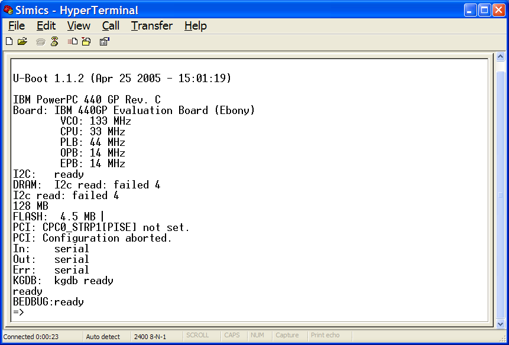
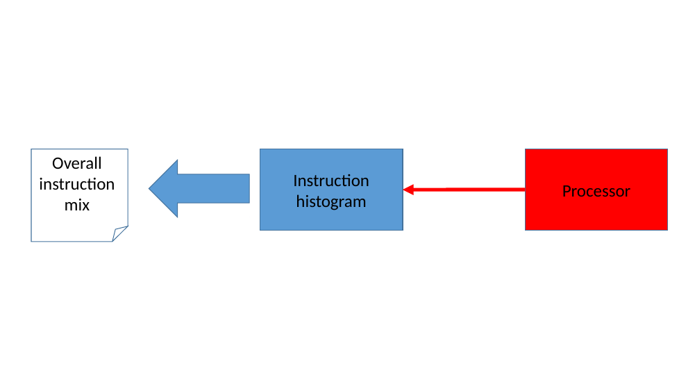
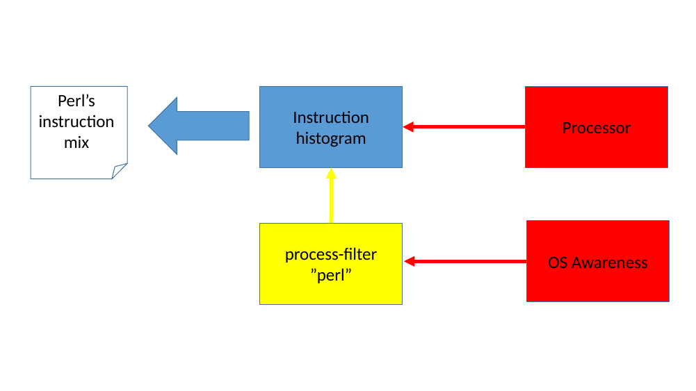
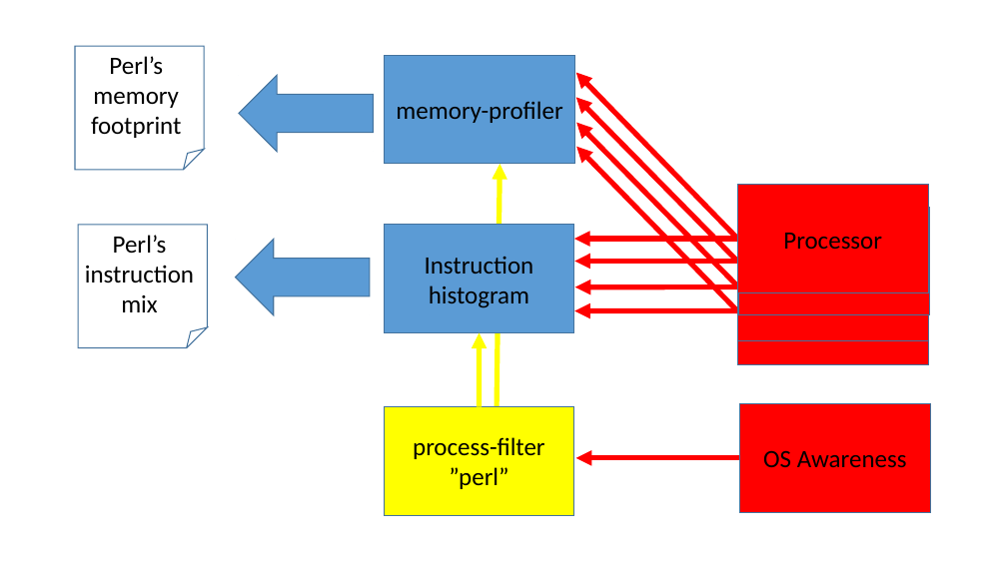
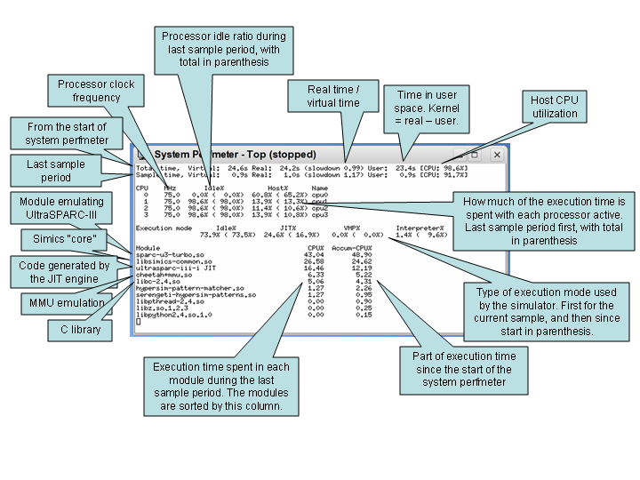

Simics User's Guide
This document describes the features of the Intel® Simics® simulator, with in-depth explanations on their usage and implementation. A gentler introduction is provided in the Getting Started.
The first chapters cover various aspects of Simics, from its command-line and scripting to the way simulation can be inspected and manipulated. The second part of the manual is dedicated to software debugging, both with Simics stand-alone or when using it as a back-end for other debuggers, such as Intel® System Debugger or GDB.
A simple virtual platform called Quick-Start Platform (QSP) is available to all users. This platform is used in many examples in the documentation and is intended to help users users familiarize themselves with many features of the Intel Simics simulator.
Simics is a system-level instruction set simulator. This means that:
- Simics models the target system at the level of individual instructions, executing them one at a time.
- Simics models the binary interface to hardware in sufficient detail that any software that runs on the real hardware will also run on Simics.
In practice, what this means is that there is no code that is too "low-level"—Simics can run, and debug, any kind of software: firmware, hardware drivers, operating systems, user-level applications, whatever. There are some caveats, though:
-
Simics's model of time is rather simple; for example, it assumes by default that all instructions take the same amount of time to run. It is not difficult to write a program that uses this fact to detect the difference between Simics and real hardware. However, this is seldom a problem with real-world software.
You can read more about Simics and time in the Understanding Simics Timing application note.
-
The hardware models must be detailed enough. Models of nontrivial pieces of hardware do not typically model all functions and details of that hardware, so it is possible to write a program that detects the difference between Simics and real hardware by probing unimplemented functions. However, any given piece of software can be accommodated by extending the hardware models to cover the missing functions.
You can read more about hardware modeling in the Model Builder User's Guide.
Simics has powerful built-in inspection and debugging facilities. These include:
- Inspecting registers, memory, and hardware state.
- Modifying register and memory contents, and hardware state.
- Setting (and triggering) breakpoints and watchpoints.
- Powerful scripting support for all of this.
Because these are implemented in the simulator, no debugging software needs to be on the target at all. As a result, the debugging machinery is completely invisible to the target (and thus to any software running on it).
One of the most powerful properties of full-system simulation is that time inside the simulation and time in the real world are two completely different things. This brings a number of substantial benefits:
- You can pause the simulation at any time, and the software running in the simulation simply cannot detect this. This allows you to inspect (and optionally modify) the state even at points where real hardware would be unable to stop.
- You can save the state of the simulation to disk (this is called a checkpoint), and start again from that point at any time, any number of times.
- The simulation is completely deterministic. Every time you start from the same state (such as a checkpoint), the exact same thing will happen. This can be tremendously useful when hunting down certain types of bugs.
These advantages apply to the entire simulated system, whether it is a single target machine or an entire network.
This chapter describes command line options accepted by Simics.
Even on Windows hosts, running Simics from the command line is useful. For example, when running automatic test scripts, profiling or benchmarking. Whole test sessions can be automated using the CLI or Python, and executed directly from the Window command shell.
Below is an example on how Simics can be started from the command line using a Simics project.
-
Windows
Run the simics.bat script in your project directory.
[project]> simics.bat targets\qsp-x86\firststeps.simics
-
Linux
Run the ./simics script in your project directory.
joe@computer:[project]$ ./simics targets/qsp-x86/firststeps.simics
Simics can also be started by running a similar start script in the [simics]\bin directory ([simics]/bin on Linux). This will run Simics without a project, and is usually not recommended.
This will run the firststeps.simics script, which will start the QSP-x86 machine using its default configuration.
To quit the Simics shell you can type quit at the Simics prompt.
The full set of command line options are documented in the simics section in the Simics Reference Manual.
The Simics Command Line Interface (CLI) is an advanced text based user interface with built-in help system, context sensitive tab-completion, and scripting support (both built-in and for use with Python). It is provided as part of Simics.
If Simics graphical user interface (GUI) is used, the CLI is accessible via the Simics Control window (Tools → Command Line Window). When running Simics without a GUI, the CLI is accessible directly at the command line/shell where Simics is started.
Commands are invoked by typing them at the command line followed by their arguments. The synopsis part of a command documentation explains how to execute a command (you can see many examples in the reference manuals). Here are two examples:
- SYNOPSIS
command1 -x -y -small [cpu-name] address (size|name)
Arguments starting with a hyphen are flags and are always optional. Flags can be more than one character long, so it is not possible to write -xy for -x -y. The order of the flags is not significant and they can appear anywhere in the argument list.
Arguments enclosed within square brackets are optional; in the example above, it is not necessary to specify cpu-name, but address is required. The last argument to command1 is either a size or a name, but not both. Such arguments are called polyvalues and can be of different types. Size and name are called sub-arguments.
If an argument is followed by three dots as the file argument in command2 it indicates that the argument can be repeated one or more times.
The type of the arguments; e.g., whether they are integers or strings, should be evident from their names. For example, size should be an integer and name a string if not documented otherwise.
Integers are written as a sequence of digits beginning with an optional minus character for negative numbers. Hexadecimal numbers can be written by prefixing them with 0x, octal numbers with 0o, and binary numbers with 0b. Integers may contain "_" characters to make them easier to read. They are ignored during parsing. For example:
simics> 170_000
170000
simics> 0xFFFF_C700
4294952704
Strings are written as is or within double quotes if they contain spaces or begin with a non-letter. Within double quotes, a backslash (\) is an escape character, which can be used to include special characters in the string.
The supported escape sequences are the usual C ones: \n for newline, \t for tab, \033 for the octal ASCII character 33 (27 decimal) escape, etc. \ followed by one, two or three octal digits, or \x followed by exactly two hexadecimal digits is the corresponding byte value.
\u followed by exactly four hexadecimal digits is the corresponding Unicode character. CLI strings are in the current version of Simics always stored in their UTF-8 encoding, which means that a single \u character can be represented as several bytes in the CLI string. As this is expected to change in a future version of Simics, do not rely on this functionality.
simics> echo no_quotes_needed
no_quotes_needed
simics> echo "first line\nsecond line"
first line
second line
simics> echo "Two As: \101 \x41, and a micro sign: \u00b5"
Two As: A A, and a micro sign: µ
On a Windows machine, strings used as paths to files can be written in several different ways. If the path does not contain any blank spaces, it can be written without quotes, using backslashes to separate the directories in the path, like C:\temp\file.txt. If the path contains spaces, it has to be written within quote characters, and the directory separators have to be written using double backslashes. This is due to the way that the Simics command line uses backslashes to generate special characters like newline and tab. Such a path would look like "C:\\Users\\joe\\Documents\\file.txt".
Here are some possible invocations of the commands above:
simics> command1 -small board.mb.cpu0.core[0][0] 0x7fff_c000 14 -y
simics> command1 0x7fffc000 foo
simics> command1 -x "Pentium 4" 0x7fff_c000 -8
simics> command2 "/tmp/txt" "../bootdisk" floppy
In the first example cpu-name is passed as the string board.mb.cpu0.core[0][0] and size as the integer 14. In the second invocation cpu-name has been omitted and name is set to the string foo. The third example illustrated the use of a string containing a space. In all command1 examples the address is set to the hexadecimal value 0x7fffc000. command2 takes a list of at least 1 string.
A few commonly used commands have aliases. For example, it is possible to write c for continue and si for step-instruction for example. Command aliases are documented with their corresponding command in the Simics Reference Manual.
Parenthesis can be used to break a command with its arguments across multiple lines. In the console, the prompt will change to ....... for code spanning more than one line. The example shows that use case, as well as how parenthesis are used to encompass expressions.
simics> (echo 10
....... + (20 - 5)
....... + (max 4 7))
Simics tries to match the provided arguments in same the order as they appear in the synopsis. If the type of the next argument is identical to what is typed at the command line, the argument will match. If there is a mismatch and the argument is optional, the argument will be skipped and the next argument will be matched, and so on. If a mismatching argument is not optional, the interpreter will fail and explain what it expected. For polyvalues, the argument will match if one of its sub-arguments matches.
There are situations when this method is not sufficient. For example, when two arguments both have the same type and are optional, there is no way to know which argument to match if only one is given. This is resolved by naming the arguments: arg-name=value. For example command1 in the example above can be invoked like this:
simics> command1 size=32 -y address = 0xf000 -small cpu-name=board.mb.cpu0.core[0][0]
Thus there is no ambiguity in what is meant and in fact this is the only way to specify a polyvalue with sub-arguments of the same type. Note also that named arguments can be placed in any order.
Many Simics commands accept configuration object references as arguments. An object reference is simply a string which contains the fully qualified name of the object. Simics provides a hierarchical namespace for objects. The fully qualified name is similar to a file system path, but with the parts separated by dots. For example, the fully qualified name of cpu0 in the system0 namespace is system0.cpu0.
Configuration objects (such as devices or CPUs) that define user commands usually place them in a separate namespace. The namespace is the fully qualified name of the object. Interfaces may also define commands, in which case all objects implementing these interfaces will inherit the commands in their own namespace.
Namespace commands are invoked by typing the fully qualified name of the object, followed by a dot and the command name: system.component.object.command, e.g.,
simics> system0.board0.cache0.print-status
All namespace commands are listed in the Simics reference manuals for the class or interface they belong to.
When using large configurations with a hierarchical structure of components and objects it can be inconvenient to type the fully qualified name all the time when invoking namespace commands. You can than use the change-namespace command (alias cn) to set a current namespace just like navigating in a file system with the cd command. From the current namespace you can refer to objects with a relative name, for example:
simics> cn system0.board0
simics:system0.board0> cache0.print-status
Note that the Simics prompt changes to reflect the new position in the hierarchy. You can only change the current namespace to other components. It would have been illegal to do:
simics> cn system0.board0.cache0
system0.board0.cache0 is not a component
Cache0 is not a component, it is an object located in the cache0 slot (see 2.4.4 and 2.4.5 for more information on how objects are named and referenced).
To go "up" one level in the hierarchy you can type cn ..:
simics:system0.board0> cn ..
simics:system0>
You can still refer to other components relative to the root by writing a dot before the fully qualified name, e.g.:
simics:system0> .system1.cpu0.ptime
processor steps cycles time [s]
system1.cpu0 14545 14545 0.000
The command current-namespace is provided to get the current namespace and can be used in scripts to save a location in a CLI variable:
simics:system0> current-namespace
.system0
simics:system0> $location = (current-namespace)
simics:system0> cn ..
simics> cn $location
simics:system0>
See section 2.3 for more information on Simics scripting and CLI variables.
The CLI allows expressions to be evaluated, for example:
simics> print -x 2*(0x3e + %cr0) + %dx
The precedence order of the operators is as follows (highest first):
| |
|---|
$ | variable access |
% | register access |
[] | list indexing |
-> | attribute access |
pow | power of |
~ | bitwise not |
*, /, % | multiplication, division, modulo |
+, - | addition, subtraction |
<<, >> | left, right shift |
& | bitwise and |
^ | bitwise xor |
| ` | ` |
<, <=, ==, !=, >=, > | comparison |
not | boolean not |
and | boolean and |
or | boolean or |
Parentheses can be used to override the priorities. Commands which return values can also be used in expressions if they are enclosed within parentheses:
simics> print -x (board.mb.cpu0.core[0][0].read-reg cr0)
Values can be saved in variables for later use. You set a variable by simply giving an assignment command such as $var = 15. You can also store a command in a variable such as $my_read_reg = board.mb.cpu0.core[0][0].read-reg which is different from storing the return value from a command $value_cr0 = (board.mb.cpu0.core[0][0].read-reg cr0).
-
GUI
Use the stop command at the running> prompt or the stop button in Simics Control window.
-
CLI without GUI
Any command which causes the simulation to advance can be interrupted by typing Ctrl-C. The simulator will gracefully stop and prompt for a new command. If Simics hangs for some reason, possibly due to some internal error, you can usually force a return to the command line by pressing Ctrl-C two or more times in a row.
Pressing Ctrl-C several times may damage some internal state in the simulator so should be used as a last resort.
The command line interface has a tab-completion facility. It works not only on commands but on their arguments as well. The philosophy is that the user should be able to press the tab key when uncertain about what to type, and Simics should fill in the text or list alternatives.
Tab completion on a Windows host does not work when running in a Cygwin terminal, but only from the graphical user interface or from a Windows command line console.
For example com<tab> will expand to the command beginning with com or list all commands with that prefix, if there is not a unique such command. Similarly, disassemble <tab> will display all arguments available for the command. In this case Simics will write:
address = bytes = count = cpu-name =
to indicate that these alternatives for arguments exists. Typing disassemble cp<tab> will expand to disassemble cpu-name = and a further tab will fill in the name of the CPU that is defined (or list all of them).
The most useful Simics commands are grouped into categories. To list these categories, just type help at the command prompt. The list should look like this:
simics> help
[...]
Type help category to list the commands for a specific category. Here is a list
of command categories:
Breakpoints Disks Inspection Modules Probes Registers
CLI Execution Instrumentation Networking Processors
Components Files Logging Notifiers Profiling
Configuration Help Matic Parameters Python
Debugging Image Memory Performance Recording
[...]
Note that since Simics's configuration can change between sessions and even dynamically through the loading of modules, the list of commands and command categories may look different.
Type help category for a list of commands, e.g., help Help will list all commands belonging to that category:
simics> help category:Help
Commands available in the "Help" category:
api-help get API help
api-search search API help
copyright print full Simics copyright information
get-command-args get list of command arguments
help help command
help-search search for text in documentation
license print Simics license
list-attributes list all attributes
list-commands list CLI commands
release-notes display product release notes
version display Simics version
Type help command to print the documentation for a specific command.
The help command can do much more than printing command documentation: it gives you access to nearly all Simics documentation about commands, classes, modules, interfaces, API types and functions, haps and more according to the configuration loaded in the simulator. All documentation is also available in the reference manuals.
Here are some more examples of usage of the help command:
simics> help print-time
[... print-time command documentation ...]
simics> help board.mb.cpu0.core[0][0].disassemble
[... <processor_info>.disassemble command documentation ...]
simics> help <processor_info>.disassemble
[... <processor_info>.disassemble command documentation ...]
simics> help board.mb.cpu0.core[0][0]
[... <x86QSP1> class documentation ...]
simics> help x86QSP1
[... <x86QSP1> class documentation ...]
simics> help processor_info
[... <processor_info> interface documentation ...]
simics> help board.mb.cpu0.core[0][0].freq_mhz
[... <x86QSP1>.freq_mhz attribute documentation ...]
simics> help x86QSP1.freq_mhz
[... <x86QSP1>.freq_mhz attribute documentation ...]
simics> help Core_Exception
[... Core_Exception hap documentation ...]
simics> help SIM_get_mem_op_type
[... SIM_get_mem_op_type() function declaration ...]
simics> help x86-intel64-turbo
[... x86-intel64-turbo module documentation ...]
When a name matches several help topics (for example, a command and an attribute, or a module and a class), help will print out the first topic coming in this order: command categories, commands, classes, interfaces, haps, modules, attributes, API functions and symbols. It will also inform you at the end of the documentation output that other topics were matching your search:
simics> load-module NS16450
simics> help NS16450
[... NS16450 class documentation ...]
Note that your request also matched other topics:
module:NS16450
If you type help module:NS16450, the module documentation will be printed instead:
simics> help module:NS16450
[... NS16450 module documentation ...]
You can use specifiers like module: or class: at any time. It will also allow the help command to provide you with better tab-completion, since only items in the selected category of documentation will be proposed. The following specifiers are available: object:, class:, command:, attribute:, interface:, module:, api:, hap: and category:.
By default, help does not propose tab-completion for modules and API symbols, because they tend not to be the most searched for and would clutter the tab-completion propositions unnecessarily. You can get tab-completion for those by specifying module: or api: in front of what you are looking for.
The help-search command can search for keywords in the documentation provided by help. Type help-search keyword to get a list of all documentation topics matching this keyword. Its alias is apropos, named after the UNIX command-line utility which has similar behavior.
simics> help-search step
The text 'step' appears in the documentation
for the following items:
Command <cycle>.cycle-break
Command <cycle>.cycle-break-absolute
Command <cycle>.print-time
Command <cycle>.wait-for-cycle
Command <cycle>.wait-for-time
[...]
Interface step_info
simics> apropos step
[... yields the same output ...]
Many Simics commands will look up files based on the current directory. When Simics is launched from the command line, the current directory is the current directory of the shell Simics was launched from. When Simics is launched by double clicking its icon, the current directory is the project directory. This may be impractical when writing scripts or building new configurations, so Simics provides two features to ease directory handling:
-
Simics recognizes some special path markers that are translated before being used:
-
%simics%
This path marker causes Simics to locate the file (following the marker) in the project directory or in any of the installed packages. If not found in the project directory, Simics will start searching in the newest package, i.e. the one with the highest build-id number.
For example, %simics%/scripts/foo.simics could be translated to:
- Windows:
C:\Program Files\Simics\Simics 6\Simics 6.0.1\scripts\foo.simics
- Linux:
/opt/simics/simics-6/simics-6.0.1/scripts/foo.simics
Note that if you change the version of Simics, %simics% will change as well, so you should use it to refer only to files that you know are present in all Simics versions. Notice also that %simics% has no meaning if no file can be found. You can use the command lookup-file to find out how the path will be translated.
-
%script%
Translated to the directory where the currently running script is located. A possible usage is to let a script call another one in the same directory, independently of what the current directory is.
For example, if the directory baz contains the scripts foo.simics and bar.simics, even if the user uses Simics with another current directory, it will be possible for foo.simics to call bar.simics by issuing the command:
simics> run-script %script%/bar.simics
%simics% and %script% are always translated to absolute paths, so they never interact with the next feature, called Simics's search path. One consequence is that they must always be used in double quotes "%simics%/targets/qsp-x86/images" to ensure that escaped characters such as spaces are used correctly.
-
Simics has a list of paths called Simics's search path where files will be looked up when using some specific commands (among others, load-binary, load-file and run-script) and a number of classes (such as the image class and the tftp server implementation in the service-node). The file is first looked up in the current directory, then in all entries of Simics's search path, in order.
-
Windows:
Let us assume for example that Simics's search path contains
C:\Users\joe\scripts\
and that the current directory is
C:\Users\joe\project\
If the command:
simics> run-script test/start-test.simics
is issued, Simics will look for the following files to run:
C:\Users\joe\project\test\start-test.simicsC:\Users\joe\scripts\test\start-test.simics
-
Linux:
Let us assume for example that Simics's search path contains
/home/joe/scripts/ and that the current directory is /home/joe/project. If the command:
simics> run-script test/start-test.simics
is issued, Simics will look for the following files to run:
/home/joe/project/test/start-test.simics/home/joe/scripts/test/start-test.simics
Simics's search path can be manipulated using the add-directory, clear-directories and list-directories commands. Simics's search path is also used when looking for image files belonging to checkpoints or new configurations. This is described in section 2.4.2.3.1.
Remember that setting a CLI variable to a path with %simics% or %script% does not in itself evaluate the path marker. This means that the path marker may evaluate to another directory than is anticipated. The following two lines evaluate quite differently:
simics> $just_a_string = "%script%/images/my_image"
simics> $absolute_path = (lookup-file "%script%/images/my_image")
The first CLI variable reads the given text and may evaluate to wherever. The second variable is evaluated locally and reads the absolute path for the my_image file that is located nearby the script.
Although the Simics search path is saved in the sim object in checkpoints, allowing image files that were found through it to be opened again by the checkpoint, it is not available until the object creation phase. Module initialization code should not rely on the Simics path since that code is run before the sim object from the checkpoint has been created.
The pipe command lets you send the output of a Simics command to a shell command through a pipe:
simics> pipe "help" "grep Tracing"
This will run help (which lists all Simics commands categories) and send its output to the standard input of the grep Tracing process. grep will discard all lines not containing "Tracing" and forward the rest to its standard output, which will be printed on the Simics terminal.
The pipe command can be used to send all the output of a command to a file:
simics> pipe "stepi 1000" "cat > trace.txt"
Or you can use it to view information using the shell command more:
simics> pipe "print-processor-registers -all" more
Note that you have to enclose both the Simics command (the first argument) and the shell command (the second argument) in double quotes if they contain whitespace or other non-letter characters.
The ! Simics command can be used to run command line commands. It will take everything after the ! sign and run it in a command interpreter (the current shell, on Linux, and cmd.exe, on Windows). For example:
The Simics CLI supports two modes with different keyboard shortcuts: Windows and GNU Readline style. Most shortcuts are the same in both modes but there are some minor differences between the two as listed in the following table. The mode can be set in the preferences, via the GUI or the CLI:
simics> prefs->readline_shortcuts = TRUE
simics> save-preferences
The command line in Simics can be accesses in several different ways. The shortcuts are supposed to be the same everywhere, but some terminals and telnet clients may not forward certain key combinations to Simics. A typical example where keyboard shortcuts do not work properly is the Cygwin terminal on Windows hosts. To run Simics in command-line mode on Windows, a standard Windows command line console is recommended.
The following is a list of all keyboard shortcuts supported in Simics, where some are marked as Windows or GNU Readline only.
Move Shortcuts
| Action | Shortcuts |
|---|
| Move character left | Ctrl-B, Left |
| Move character right | Ctrl-F, Right |
| Move word left | Alt-B, Ctrl-Left |
| Move word right | Alt-F, Ctrl-Right |
| Move to start of line | Ctrl-A (GNU Readline), Home |
| Move to end of line | Ctrl-E, End |
Edit Shortcuts
| Action | Shortcuts |
|---|
| Enter line | Ctrl-J, Ctrl-M, Enter |
| Copy | Ctrl-C, Ctrl-Insert |
| Paste | Ctrl-Y (GNU Readline), Ctrl-V, Shift-Insert |
| Cut | Ctrl-X, Shift-Delete |
| Cut to end of line | Ctrl-K |
| Cut to start of line | Ctrl-U |
| Cut previous word | Ctrl-W |
| Select character left | Shift-Left |
| Select character right | Shift-Right |
| Select word left | Ctrl-Shift-Left |
| Select word right | Ctrl-Shift-Right |
| Select to start of line | Shift-Home |
| Select to end of line | Shift-End |
| Select line | Ctrl-A (Windows) |
| Delete character left | Ctrl-H, Backspace |
| Delete character right | Ctrl-D, Delete |
| Delete word left | Ctrl-Backspace, Alt-Backspace, Alt-Delete |
| Delete word right | Alt-D, Ctrl-Delete |
| Delete to start of line | Ctrl-Home |
| Delete to end of line | Ctrl-End |
History Shortcuts
| Action | Shortcuts |
|---|
| Next in history | Ctrl-N, Down |
| Previous in history | Ctrl-P, Up |
| First in history | Alt-<, Page Up |
| Last in history | Alt->, Page Down |
| Reverse search | Ctrl-R |
| Scroll page up | Shift-Page Up |
| Scroll page down | Shift-Page Down |
Completion Shortcuts
| Action | Shortcuts |
|---|
| Auto complete | Ctrl-I, Tab |
| Show completions | Alt-? |
Transpose Shortcuts
| Action | Shortcuts |
|---|
| Uppercase word | Alt-U |
| Lowercase word | Alt-L |
| Capitalize word | Alt-C |
| Transpose characters | Ctrl-T |
| Transpose words | Alt-T, Ctrl-Shift-T |
Undo Shortcuts
| Action | Shortcuts |
|---|
| Cancel multi-line editing | Ctrl-G |
| Undo | Ctrl-_, Ctrl-Z (Windows) |
| Revert line | Alt-R |
| Clear screen | Ctrl-L |
The Command Line Interface in Simics provides scripting capabilities that can be used to write parameterized configurations and scripts that control or inspect simulated sessions. For even more advanced scripting, the Python language can be used.
This chapter describes how to write simple scripts in the Simics command line interface (CLI), using control flow commands, variables and script branches. It also explains how the configuration system can be accessed from scripts, and how Python can be used for more advanced script programming.
All commands can be executed either by typing them at the prompt in the Simics console, or by writing them to a file, e.g., example.simics, and executing the command run-script example.simics, or for Python examples run-script example.py.
Scripts should normally not start the simulation. If a script starts the simulation, that is a synchronous (blocking) call. Control is not returned to CLI until the simulation is stopped. If the script does not stop itself, the simulation may be stopped by using the GUI controls or by entering Ctrl-C in CLI.
There are a number of situations where it may make sense to use the scripting support in CLI due to its advantages over Python. Still, if the script starts to grow in size and complexity, or if more complete and detail control of the simulation is needed, then Python is the obvious choice.
- Same environment as on the command line
CLI is suitable for interactive use with its simple syntax and features such as context sensitive tab completion. Being able to script using the same set of command simplifies script writing.
- CLI hides Simics API restrictions
The Simics API has restrictions on when certain API functions may be called. For example, some functions can not be used while an instruction is executing. The CLI script environment will only run commands in a context where the full API is available, greatly simplifying scripting.
- Easy to write sequential code that waits for events to occur
By using script branches, it is easy to write sequential code that can wait for various events in the system, postponing the rest of the script until they occur.
The Simics command line has support for string, integer, floating point, list and Boolean variables. Variables are always prefixed with the $ character. A variable has to be created by assigning a value to it, before it can be used.
simics> $foo = "some text"
simics> $foo
"some text"
simics> echo $not_used_before
No CLI variable "not_used_before"
The defined expression can be used to test if a variable has been defined. Note that this command takes the name of the variable only, i.e. without the $.
simics> $foo = 4711
simics> if defined foo { echo "foo is defined"}
foo is defined
List variables can be indexed, something that is useful in loops for example.
simics> $foo = []
simics> $foo[0] = 10
simics> $foo[1] = 20
simics> echo $foo[0] + $foo[1]
30
simics> $foo
[10, 20]
simics> $foo += ["abc"]
[10, 20, "abc"]
simics> list-length $foo
3
CLI also has support for local variables, described later in this chapter.
The return value of a command is printed on the console, unless it is used as argument to some other command. Parenthesis () are used to group a command with arguments together, allowing the return value to be used as argument. The return value can also be used as namespace in another command. Variables can be used in the same way.
simics> $address = 0x7ff00000
simics> set $address 20
simics> echo "The Value at address " + $address + " is " + (get $address)
The Value at address 2146435072 is 20
simics> $id = 0
simics> ("board.mb.cpu0.core[" + $id + "][" + $id + "]").print-time
processor steps cycles time [s]
board.mb.cpu0.core[0][0] 0 0 0.000
Although in this particular case it is simpler to write:
simics> board.mb.cpu0.core[$id][$id].print-time
processor steps cycles time [s]
board.mb.cpu0.core[0][0] 0 0 0.000
simics> $cpu = board.mb.cpu0.core[0][0]
simics> $cpu.print-time
processor steps cycles time [s]
board.mb.cpu0.core[0][0] 0 0 0.000
Parenthesis can also be used to break a command with its arguments across multiple lines, making it easier to read scripts with expressions and nested command invocations.
The script support in CLI has support for common flow control commands such as if, else, while as well as foreach.
simics> $value = 10
simics> if $value > 5 { echo "Larger than five!" }
Larger than five!
The if statement has a return value:
simics> $num_cpus = 2
simics> (if $num_cpus > 1 { "multi" } else { "single" }) + "-pro"
multi-pro
Multi-line if-else statements must have } else { on the same line.
It is also possible to have else followed by another if statement.
simics> $b = 0
simics> if $b == 1 {
....... echo 10
....... } else if $b == 0 {
....... echo 20
....... } else {
....... echo 30
....... }
20
Loops can be written with the while command.
simics> $loop = 3
simics> while $loop {
....... echo $loop
....... $loop -= 1
....... }
3
2
1
They can also be written using the foreach list iteration command. The range commands in the example returns a list of integers from 0 up to, but not including, 3.
simics> foreach $loop in (range 3) {
....... echo $loop
....... }
0
1
2
Here is another example that shows how foreach can be used. The get-object-list commands return a list of all objects that implement the processor_internal interface in Simics:
simics> foreach $cpu in (list-objects -all processor_internal) {
....... echo "Cycles on " + ($cpu->name) + ": " + ($cpu.print-time -c)
....... }
Cycles on board.mb.cpu0.core[0][0]: 0
Lists can also be written directly, for example:
simics> foreach $loop in [1, 2, 3] {
....... echo $loop
....... }
1
2
3
Within command blocks, it can be useful to have variables that are local to the scope and thus do not collide with the names of global variables. By adding local before the first assignment of a variable, the variable is made local.
simics> $global = 10
simics> if TRUE {
....... local $global = 20
....... echo $global
....... }
20
simics> echo $global
10
In some cases it is useful to interpret an integer as a signed value of a specific bit size, for example when reading four bytes from memory that should be interpreted as a signed 32 bit integer. The signed, signed8, ..., signed64 commands can be used to perform the conversion.
simics> board.mb.phys_mem.set 0x7fe00000 0xffffffff 4
simics> board.mb.phys_mem.get 0x7fe00000 4
4294967295 (LE)
simics> signed32 (board.mb.phys_mem.get 0x7fe00000 4)
-1
Other useful and related commands are atoi, bits, int-to-*-float, bin, dec, hex, and oct.
Simics configuration attributes that are of string, integer, floating point, Boolean, nil, and list types can be accessed directly from CLI using the -> operator.
simics> echo "Current project: " + (sim->project)
Current project: C:\Users\joe\Desktop\project
An object referenced with this operator returns the object's name as a string.
A nil attribute value is represented by NIL in CLI.
To access attributes that use other data types than the ones listed above, you need to use Python:
simics> @conf.myobject.attr.dictionary_attribute = { 1 : "abc" }
See chapter 2.3.4.3.1 for more information about accessing attributes from Python.
When a Simics command encounters an error, an error message is typically printed, and the script execution is interrupted. In some cases the script itself want to handle the error, in order to try some alternative approach, or to present the error message with more context. The try-except statement can be used for this purpose.
simics> try {
load-module my-own-components
} except {
echo "Simics failed to import my-own components. Perhaps you forgot to "
echo "install the latest modules from the development team? See the "
echo "project web-site for more info.\n"
interrupt-script "Cannot continue"
}
Without the try-except statement, the example above would print an error message like Error loading module and the script execution would be interrupted with an error.
The error message from the failing command can be obtained inside the except block by calling the get-error-message CLI command. The get-error-line command returns the line of the error in the script file and get-error-file the file name. The get-error-command returns the command name if the error occurred within a command.
Script branches allow the user to write sequences of CLI commands that can be postponed, waiting for things to happen in the simulator, without breaking the sequential flow of commands. This is typically used to avoid breaking a script into many small sections, each run as a callback using Python.
A simple example of a script branch:
simics> script-branch "script branch description (optional)" {
echo "This is a script branch test - going to sleep."
board.mb.cpu0.core[0][0].wait-for-step 10
echo "Processor registers after 10 steps:"
board.mb.cpu0.core[0][0].print-processor-registers
}
The example above will execute the first echo command at once, and then go to sleep waiting until the first 10 instructions (steps) have run. When the step counter for the processor has reached 10, the branch will wake up and run the next two commands, echo and print-processor-registers.
A big difference between script branches and the main script is that the main script (also called main branch) may be interrupted by the user pressing the stop button or typing Ctrl-C. The script branches are unaffected by such actions and can exist in the background, coexisting with any interactive command line use.
When a script branch is started (using script-branch), it begins executing immediately, and runs until a wait-for-, command is issued. Execution is then resumed in the main script; i.e., there is never any concurrent activity. When some activity occurs that a script branch is waiting for, the branch continues executing once the currently simulated instruction is ready.
Since only one branch can be active at once, any callback to Python from Simics will execute in the currently active branch, i.e., if a branch installs a callback, it is most likely that it will be called when the main branch is active.
The following is a list of the commands related to script branches.
script-branch
Create a new script branch and start it.list-script-branches
List all existing, but suspended, branches.interrupt-script-branch
Interrupt a script-branch, causing it to exit.create-script-barrier num_branches
Create a script barrier used to synchronize the execution of several script branches. The argument is the number of script branches that must enter the barrier before all of them are released.wait-for-script-barrier barrier
Suspend branch until enough branches have reached the script branch barrier.create-script-pipe
Create a script pipe, used to communicate data between script branches and also to synchronize them.add-data-to-script-pipe pipe data
Add data (integer, string, floating point value or a list of any of those types) to the specified script pipe.script-pipe-has-data pipe
Check if there is data to read from a script pipe.wait-for-script-pipe pipe
Suspend branch until there is data to read on a script pipe. If there already is data in the pipe, return immediately. The return value is the first data item added to the pipe.wait-for-log or <conf_object>.wait-for-log [object] [substring] [type] [-re]
Wait until a log message is generated by an object or any object if the object variable is omitted. The substring and type can specify certain conditions.bp.wait-for-breakpoint breakpoint-id
Suspend branch until a specified breakpoint is triggered.<processor>.bp-wait-for-cycle cycle [-absolute]
Suspend branch until the processor has executed cycle number of cycles. If -absolute is specified, the branch will instead be suspended until the processor reaches the specified cycle in the simulation.<processor>.bp-wait-for-step step [-absolute]
Suspend branch until the processor has executed step number of steps. If -absolute is specified, the branch will instead be suspended until the processor reaches the specified step in the simulation.<processor>.bp-wait-for-time seconds [-absolute]
Suspend branch until the processor has executed seconds number of seconds. If -absolute is specified, the branch will instead be suspended until the processor reaches the specified time in the simulation.<processor>.bp-wait-for-control-register reg
Suspend branch until the register reg is read from or written to. Only registers that are catchable can be waited on. The break condition can be changed to only consider read by specifying -r or only write by specifying -w.<text-console>.bp-wait-for-console-string string
Suspend branch until string is printed on the text console.
Variable references in CLI are evaluated when accessed. This is important to remember when writing script branches, since some commands are executed when the branch has been suspended, and variables may have been changed. To make sure that CLI variables in script branches are untouched by other scripts, they should be made local.
The following example
simics> script-branch "sample script branch" {
$foo = 20
board.mb.cpu0.core[0][0].wait-for-step 10
echo "foo is " + $foo
}
$foo = 15
run
will produce the output foo is 15 while the following script will print foo is 20.
simics> script-branch "sample script branch" {
local $foo = 20
board.mb.cpu0.core[0][0].wait-for-step 10
echo "foo is " + $foo
}
$foo = 15
run
Large system configurations can be split up over several cells where each cell runs in its own host thread to speed up simulation. Care must be taken when writing scripts in such sessions. If the simulation is stopped or paused, for example by a breakpoint, other cells than the one where the breakpoint occurred may be ahead or behind in simulated time. The difference in time between cells is limited by the minimum latency setting. The time where cells are stopped may also differ between runs of the same setup. To ensure deterministic behavior, a script stopping a simulation as result of some event should only access the cell where the event occurred. If the script needs to access the full configuration, i.e. also objects in other cells, then all cells have to be synchronized in time. The wait-for-global-time and wait-for-global-sync commands can be used to run until a point where all cells have synchronized.
It is possible to cancel a suspended script branch by interrupting it using the interrupt-script-branch command. Each branch has an ID associated that can be found using list-script-branches, and that is returned by the script-branch command.
simics> $id = (script-branch "sample script branch" {
bp.wait-for-breakpoint $bp
})
...
simics> interrupt-script-branch $id
Command 'wait-for-breakpoint' interrupted.
Script branch 1 interrupted.
There are a few things related to script branches that are discouraged or not allowed:
-
Starting and stopping the simulation should be avoided from script branches that run in sessions with interactive use, such as target start scripts. It is only in batch mode that controlling the simulation from script branches is acceptable, but then care should be taken to avoid script branches that conflict with each other.
-
A script branch may not define a new script branch nested inside itself.
-
The wait-for- command can not run in the main branch. The reason is that the main branch may be interrupted by the user pressing the stop button or Ctrl-C, while script branches and the wait-for- commands are unaffected by such actions.
-
The write-configuration command cannot be run while Simics is executing. This is a limitation that will be removed in a future Simics version, but for now the execution has to be stopped first. The following is an example that writes a checkpoint when the simulation reaches a login prompt, and then continues running. It assumes that a text-console called text_console_cmp0.con is used.
simics> script-branch "create checkpoint" {
board.console.con.bp-wait-for-console-string login
stop
write-configuration login.conf
run
}
This is one of few exceptions to the rule that script branches should not start or stop the simulation.
This section describes the Simics target parameter framework. For the older script declaration system, see chapter 5.1. The target parameter framework introduces a few concepts:
- A parameter system for Simics scripts (written in either Python or CLI). Parameters have types, default values, documentation strings etc, and are specified in a
YAML-based format. Parameters from other scripts can be imported, which results in a tree structure. At run-time, the resulting parameter tree has write-once semantics, and individual parameters can be accessed from a special singleton Simics object (in CLI), or via a Python object acting as a dictionary, i.e. they are unrelated to CLI variables. In Python one can also pass around handles to parts of the parameter tree as function arguments.
- A high-level target concept. A target is defined by its top-level parameter definition file, which refers to any necessary script or preset files. When the top-level parameter file name in the package matches
targets/*/*.target.yml then it is considered a target. Simics scans all available packages for targets during startup and keeps track of the target list. A target can be run by only specifying the target name, without having to know the full path.
- The concept of parameter presets. A preset is a file specifying arguments to a target. This is also done in the
YAML-based format of the parameter system. A preset does not have to specify arguments for all parameters, but can just override some of them and point to another preset for more arguments. The write-once semantics of the parameter system implies that the arguments in the top-level preset takes precedence over any arguments specified in presets that it points to, facilitating easy creation of override presets. When running a target, preset files can also be provided to specify arguments. A preset can also point to a target or script, with the effect that the preset itself can be run as if it was a script. Presets facilitates easy sharing of individual target configurations.
The advantages compared with the script declaration system are as follows:
- YAML is a standard format that people, text editors, config tools, and format linters already know about.
- It is not tied to CLI scripts, but can be used directly with Python.
- The concept of a target elevates it above ad-hoc scripting.
- Parameters are available in their own Python namespace and not just in the global CLI variable namespace.
- The parameters values in a session are known after target launch, and can be listed or saved to a file.
- Parameters from different targets do not conflict when loading multiple targets into a single session.
- There can be a hierarchy of parameters for large, complex systems with 100s of parameters.
- Handling parameters when calling scripts from scripts is much simpler.
- The script-trampoline files in the project directory are not needed anymore.
- The preset concept makes it easy to have different parameter value sets for the same target.
Parameters are write-once, hence the first value provided for a parameter is what gets used. I.e. values provided by the user when running a script will take precedence over default values provided in the script. Scripts can also provide new default values for parameters declared by scripts that they include, and those defaults will take precedence over the defaults in the declaring script. Scripts can also set defaults from their script code, to facilitate the provision of default values that require calculations, potentially using other parameters.
The whole parameter tree is exposed to the user running a script, and via the write-once semantics, the user can specify/override arguments for all parameters. Arguments can be provided on the command line, but the more powerful method is to provide them via preset files.
The write-once semantics implies that the "earliest setting wins". Arguments can come from
- User specification at command line.
- User specification via preset files.
- (Default) values specified in parameter declarations.
- (Default) values specified in script code.
and the first argument for a specific parameter sticks, e.g. user input overrides values in scripts (hence they are only default values). Note that this also implies that script code cannot unilaterally set arguments, not even input to another script that it calls, it can only provide default values, which can always be overridden by an earlier setting, such as user input.
The parameter declarations and the presets are specified in the standard YAML format. Usage of a standard format means that one can easily process the files outside of Simics, although to resolve file paths using %script% or %simics% knowledge of the underlying Simics installation is required.
We have two types of files: scripts and presets.
Script files consist of
- a parameter declaration section under the
params key, which can import parameters from other scripts, and/or define individual parameters with names, their types, default values, description strings, and flags indicating if the parameter is required and if it is an output parameter, and
- a code section, either Simics CLI or Python code (specified using the
code-type key). The code section can either be below the YAML section, inlined using the cmd key, or in a separate file specified by the script key.
See section 2.3.3.3 for an example of a script.
Preset files
- specify arguments of parameters (or equivalently, default values) under the
args key,
- can include other preset files, which may specify more arguments, and
- have no parameter declarations and no code.
See section 2.3.3.4 for an example of a preset.
The write-once semantics implies that the arguments specified in a preset overrides any arguments specified in included presets. This facilitates easily creating more specialized presets where only a few arguments are changed.
Presets can also specify the script where the corresponding parameter declarations are given, using the target key. Such a preset is a simple way to describe a Simics configuration, and can be used to start Simics, meaning that the specified script is run with the arguments from the preset. The script corresponding to the preset can also be specified implicitly by including other presets using the import.
For more details about the syntax, see the Target parameters reference.
Here is a small example that illustrates how to write a target with parameters:
%YAML 1.2
---
# Declaration section
params:
# A simple parameter
sigma:
type: str
required: true
default: sigmoid
description: >-
A potentially multi-line text
describing this parameter.
# List parameters can have typed elements
resources:
type: list[list[int]]
default: []
# A complex parameter
epsilon:
mu:
type: str
nu:
type: int
tau:
# Import parameters from other script
import: inner.yml
# beta parameter is set by this script, not required
provides:
- beta
# new default value of imported parameter
defaults:
gamma: true
# Type of code
code-type: simics
# Code inlined in the YAML section
cmd: |
echo `params["sigma"]`
echo (params.get "epsilon:mu")
echo `params.get("epsilon:nu")`
params.setdefault "tau:beta" (params.get "sigma")
run-script script = "inner.yml" namespace = "tau"
...
And the imported file:
%YAML 1.2
---
params:
alpha:
type: int
beta:
type: str
required: true
gamma:
type: bool
cmd: |
# Use dict syntax to read parameter
print(f"beta={params['beta']}")
...
As can be seen from the example, the target script code can be inlined in the YAML section. One can also place the code in a separate file which is referred from the parameter section using the script tag. A third option is to place the code below the parameter section, but then the file as a whole will typically no longer be valid YAML.
The example also illustrates how to import parameters from other scripts. The result is that the parameter tree defined in the imported script becomes a sub-tree in the current script, in this case with the root node tau. To refer to parameters further down in the tree, the : character is used as separator. Note that importing a parameter tree from another script does not mean that the imported script has to be run, but all scripts that are run must have been imported. When running an imported script, the root node of the imported sub-tree must be provided.
Notice that in the first file we have to declare the code type to be Simics CLI, using the code-type key, since Python is the default. The code type defaults to Simics CLI if the file (or the file specified by the script key) has extension .simics or .include and defaults to Python if the extension is .py or .yml.
Finally, as can be seen, the parameters are accessed via a global object params, both in CLI and in Python. In Python the object acts like a regular Python dictionary and in CLI it is a Simics object with various commands.
Notice how we illustrate different ways to read parameters: one can use the CLI command params.get, or params.get via inline Python, or Python dictionary notation. The latter will throw an exception if the parameter is not assigned.
For more details about the syntax, available types etc, see the Target parameters reference.
Here is an example preset for to the example target. The target is assumed to be a file named example.target.yml:
%YAML 1.2
---
args:
tau:
beta: test
epsilon:
mu: foo
import: include.preset.yml
...
As can be seen, argument values are specified under the args using the parameter names as keys. Also note that presets can include other presets.
Here is the the included preset, include.preset.yml:
%YAML 1.2
---
args:
sigma: foo
tau:
beta: bar
target: example.target.yml
...
Notice that the first preset overrides the argument beta in the included preset. This illustrates how presets can be stacked on top of each other, only overriding what is necessary. This facilitates easily creating variants of target configurations for runs with different parameters.
Also note that the second preset specifies the target that it is based on. The result is that the preset, and all presets that import it, can be run directly.
As mentioned at the top of this section, a target is a file with name that matches targets/*/*.target.yml, located in the Simics project or in a package available in the project.
The intention is that the top level scripts, that should be exposed to the user via the load-target command, are turned into targets by naming them accordingly.
Targets can be listed from the Simics CLI or from the shell as mentioned in 2.3.3.6. The idea is to make it easy to find the main entry points to a hardware model without looking for a particular script name in the package or project.
There are two main CLI commands:
load-target, which can be used to run scripts that have target status, as defined in Section 2.3.3.5. This command expects a target name as parameter. Available targets is returned by the list-targets command, or when running Simics with the command line flag -l.run-script, which can be used to run scripts specified by file name.
Calling load-target with a target name has the same effect as calling run-script on the file that defines the target.
Target names, script file names can also be provided directly to Simics on the command line, in order to run them. Presets for a target can be added using the --preset command line flag.
As mentioned above, the parameters are accessed via a global params object, which has a number of CLI commands as well. These can be discovered using tab completion or by running help on the object.
Consider the situation where there are two scripts, perhaps hardware and software setup, that are connected by a main target script. Often the software script has parameters that should have the same value as some parameter in the hardware script, and the main script has to make sure this happens.
Here are examples of sub-scripts, alpha.yml and beta.yml.
%YAML 1.2
---
# This is alpha.yml
params:
foo:
type: str
default: alpha
cmd: print(params['foo'])
...
%YAML 1.2
---
# This is beta.yml
params:
foo:
type: str
required: true
bar:
type: int
required: true
cmd: print(params['foo'])
...
Without parameter references, the main script can look like this:
%YAML 1.2
---
params:
bar:
type: int
required: true
alpha:
import: "%script%/alpha.yml"
beta:
import: "%script%/beta.yml"
code-type: simics
cmd: |
run-script "%script%/alpha.yml" namespace = alpha
params.setdefault "beta:foo" (params.get "alpha:foo")
params.setdefault "beta:bar" (params.get "bar")
run-script "%script%/beta.yml" namespace = beta
...
Parameter references facilitate avoiding the explicit copying of parameter values, so that the main script can be expressed like this:
%YAML 1.2
---
params:
bar:
type: int
required: true
alpha:
import: "%script%/alpha.yml"
beta:
import: "%script%/beta.yml"
defaults:
foo: ^alpha:foo
bar: ^bar
code-type: simics
cmd: |
run-script "%script%/alpha.yml" namespace = alpha
run-script "%script%/beta.yml" namespace = beta
...
The Intel® Simics® simulator provides support for the script language Python (http://www.python.org). By using Python the user can extend the simulator, and control it in greater detail. Python code can use functions from the simulator's API.
The Intel® Simics® simulator always contains a Python environment. The simulator's command line interface (CLI) and all commands are implemented in Python. To find the code executed by a command, one can search the Python - .py - files of the corresponding module for the calls to the new_command, new_info_command, and new_status_command functions.
To execute Python code directly from the simulator's CLI, Python code that is to be executed should be prefixed with the @ character:
simics> @print("This is a Python line")
This is a Python line
simics>
For code spanning more than one line, the prompt will change to ....... and more code can be inserted until an empty line is entered. The full code block will then be executed (note that whitespace indentation is significant in Python):
simics> @if SIM_number_processors() > 1:
....... print("Wow, an MP system!")
....... else:
....... print("Only single pro :-(")
.......
Wow, an MP system!
simics>
Entering more than one line is useful for defining Python functions. It is also possible to execute Python code from a file, which is done with the run-script command.
If the Python code is an expression that should return a value to the CLI, the python command can be used, or the expression can be back-quoted. The following example selects a file with Python commands to execute depending on the number of processors in the system:
simics> run-script `"abc-%d.py" % SIM_number_processors()`
If the system has 2 processors, the file abc-2.py will be executed.
One can switch the simulator's CLI to Python mode with the python-mode command. In Python mode, indicated by
simics>>>
prompt, all input is interpreted as Python code, not as simulator's CLI commands. In Python mode, Python code lines should not be prefixed with the @ character, since that is only used in CLI mode to interpret input as Python code. Example:
simics> python-mode
Entering Python mode. Use cli_mode() or Ctrl-D to return to CLI.
simics>>>
Now Python code can be entered directly:
simics>>> print(f"Simics base package version: {SIM_version_base()}")
Simics base package version: Simics ...
None
simics>>>
As it was pointed above, to exit Python mode, one can use the cli_mode function or simply enter Ctrl-D:
simics>>> cli_mode() # we run cli_mode here. Alternatively, enter Ctrl-D
Command line is now in CLI mode.
None
simics>
CLI variables can be accessed from Python via the simenv namespace, for example:
simics> $cpu = "processor"
simics> @simenv.cpu = simenv.cpu.capitalize()
simics> $cpu
Processor
As we could see in the example, simenv is imported into global namespace by default, but if it is needed elsewhere, it can be imported from the cli module.
All configuration objects are visible as objects in Python. The global Python module conf holds the top level namespace, which contains all top level objects. The objects contain all their subobjects as attributes.
The configuration objects also expose their attributes as Python attributes. The attributes can be accessed via the attr attribute, or, in a legacy way, directly as Python object attributes. Thus the attributes can be both read and written as Python attributes. The following example prints the size attribute from the board.mb.rom_image object of the image class:
simics> @conf.board.mb.rom_image.attr.size
262144
Here is a legacy way to access the same attribute:
simics> @conf.board.mb.rom_image.size
262144
We recommend to access Simics objects' attributes via the attr attribute, except for a few commonly used attributes like name and classname.
If an object contains a subobject and an attribute with the same name, the subobject takes precedence and hides the attribute.
To try the previous example in an arbitrary configuration, run list-objects -all image to find available objects of the image class to use instead of the board.mb.rom_image object.
Any '-' (dash) character in the object name, or in an attribute name, is replaced by '_' (underscore). This substitution is performed because Python always treats the dash character as the minus operator. To avoid confusion the recommendation is to always use underscore.
Indexed attributes can be accessed using [] indexing in Python. It is also possible to index other list attributes this way, but it might be inefficient since the full list is converted to a Python list before the element is extracted. Here are some examples of indexed attributes access (a pcie-bus object, and a memory-space object):
simics> @conf.board.mb.nb.pci_bus.attr.pci_devices[0]
[29, 1, <the ich10_usb_uhci 'board.mb.sb.uhci[1]'>, 1]
simics> @conf.board.mb.phys_mem.attr.memory[0x100:0x10f]
(89, 236, 0, 240, 61, 0, 0, 158, 83, 255, 0, 240, 144, 37, 0)
simics> @conf.board.mb.phys_mem.attr.memory[0x10000:0x10003] = (100, 101, 102)
If the attribute contains a list, dictionary or data, then an access returns a reference instead of the actual value. This is similar to how container objects such as lists and dictionaries work in Python and allows constructs such as:
simics> @conf.board.mb.phys_mem.attr.map[0][0] = 0x1000
The example modifies the attribute at position [0][0]. To get the copy of the attribute value, the following can be used:
simics> @memory_map = conf.board.mb.phys_mem.attr.map.copy()
Note that there is a difference in how references to Simics attributes work compared to ordinary Python objects: if the attribute access returns a list, dictionary or tuple, then a reference to the full attribute is used and not only to the referenced container objects. The reason is that internally in Simics, the attribute is treated as a single value.
Consider a list of lists, such as a = [[1, 2, 3], [4, 5, 6]]. If this was a Python list, then the following applies:
b = a[0] # b is a reference to the [1, 2, 3] list.
a[0][1] = 9 # b will now change to [1, 9, 3].
a[0] = [7, 8] # b still references the [1, 9, 3] list, only a will change.
If a instead is a Simics attribute:
b = a[0] # b is a reference to the first list in a, i.e. [1, 2, 3].
a[0][1] = 9 # b will now change to [1, 9, 3].
a[0] = [7, 8] # b is still a reference to the first list in a, i.e [7, 8].
As we see, only the last line of the examples differs. The most common situation where this difference is visible is when doing list duplication. In Python a list can be duplicated in whole or part by using slicing to produce a shallow copy. In Simics, that would simply produce a reference to the same list if any of the items in the list is a container object. In this case the .copy() method has to be used.
From Python, the iface attribute of a configuration object can be used to access the interfaces it exports. Use obj.iface.name.method to accesses the method function in the name interface of the obj object. Example:
simics> @conf.board.mb.cpu0.core[0][0].iface
<interfaces of board.mb.cpu0.core[0][0]>
simics> @conf.board.mb.cpu0.core[0][0].iface.processor_info
<processor_info_interface_t interface of board.mb.cpu0.core[0][0]>
simics> @conf.board.mb.cpu0.core[0][0].iface.processor_info.get_program_counter
<built-in method logical_address_t (*)([conf_object_t *]) of interface method object at 0x5cb2070>
simics> @hex(conf.board.mb.cpu0.core[0][0].iface.processor_info.get_program_counter())
'0xfff0'
When called from Python, the first conf_object_t * argument for interface methods should not be used: it is passed automatically.
The last command corresponds to the following C code (with no error-checking):
conf_object_t *obj = SIM_get_object("board.mb.cpu0.core[0][0]");
processor_info_interface_t *iface =
SIM_get_interface(obj, PROCESSOR_INFO_INTERFACE);
logical_address_t pc = iface->get_program_counter(obj);
printf("0x%llx", pc);
Port objects in Simics represent ports and banks. For scripting access to objects they work exactly as a sub-object. By convention they are placed in the port and bank namespaces under the object.
Use obj.port.portname.iface.interfacename.method or obj.bank.bankname.iface.interfacename.method to access interface methods in a port object.
simics> @conf.board.mb.sb.com[0].port
<the namespace 'board.mb.sb.com[0].port'>
simics> @conf.board.mb.sb.com[0].port.HRESET
<the NS16550.HRESET 'board.mb.sb.com[0].port.HRESET'>
simics> @conf.board.mb.sb.com[0].port.HRESET.iface
<interfaces of board.mb.sb.com[0].port.HRESET>
simics> @conf.board.mb.sb.com[0].port.HRESET.iface.signal
<signal_interface_t interface of board.mb.sb.com[0].port.HRESET>
simics> @conf.board.mb.sb.com[0].port.HRESET.iface.signal.signal_raise
<built-in method void (*)([conf_object_t *NOTNULL]) of interface method object at 0x7f90f32f5310>
simics> @conf.board.mb.sb.com[0].port.HRESET.iface.signal.signal_raise()
The last command corresponds to the following C code (with no error-checking):
conf_object_t *obj = SIM_get_object("board.mb.sb.com[0].port.HRESET");
signal_interface_t *iface =
SIM_get_interface(obj, SIGNAL_INTERFACE);
iface->signal_raise(obj);
Simics also has a legacy mechanism for providing named entry points to objects, called port interfaces. This mechanism is still used by some models. Named port interfaces are referenced from other objects using a list of [object, portname] instead of just a single object reference. Port interfaces are accessed from Python in a similar way to interfaces.
Use obj.ports.portname.interfacename.method to access the interfacename interface in port portname of the object obj. Example:
simics> @conf.board.mb.cpu0.core[0][0].ports
<ports of board.mb.cpu0.core[0][0]>
simics> @conf.board.mb.cpu0.core[0][0].ports.RESET
<interfaces of port RESET of board.mb.cpu0.core[0][0]>
simics> @conf.board.mb.cpu0.core[0][0].ports.RESET.signal
<signal_interface_t interface of board.mb.cpu0.core[0][0]>
simics> @conf.board.mb.cpu0.core[0][0].ports.RESET.signal.signal_raise
<built-in method void (*)([conf_object_t * NOTNULL]) of interface method object at 0x5cb22d0>
simics> @conf.board.mb.cpu0.core[0][0].ports.RESET.signal.signal_raise()
The last command corresponds to the following C code:
conf_object_t *obj = SIM_get_object("board.mb.cpu0.core[0][0]");
signal_interface_t *iface =
SIM_get_port_interface(obj, SIGNAL_INTERFACE, "RESET");
iface->signal_raise(obj);
At times, it can be useful to access command line commands from a Python script file. This can be done in two ways which are described below.
The first way to access command-line commands from Python is to use
the run_command(cli_string) function, which takes a string which is
then evaluated by the command line front-end. For example, write
run_command("list-objects") to execute the list-objects
command. Any return value from the command is returned to
Python. There is also the quiet_run_command function, which captures
any output produced by the command and returns a tuple with the
command return value as first entry, and the text output as the
second. More details about both functions can be found in the CLI
Classes and
Functions
in the API Reference Manual.
The second way to access command line commands from Python is to use
wrapper functions from two special namespaces. The first namespace is
global_cmds (provided by the cli module). It allows to run
commands which are not tied to any Simics object. For example, the
list-objects command can be executed as
global_cmds.list_objects(). The commands which are tied to Simics
objects (namespace commands) can be executed via the cli_cmds
namespaces which can be accessed through a Python object representing
a Simics objects. For example, the sim.info command can be executed
as conf.sim.cli_cmds.info().
- The wrapper function name is usually the same as the name of the command it executes with hyphens replaced with underscores.
- The parameters of the wrapper functions are the same as of the corresponding command (again, with hyphens replaced with underscores).
- Command flags (the names of the corresponding function parameters start with an underscore) are passed as Python Boolean values.
- In the rare case that a wrapper function name or a wrapper function parameter name collides with a Python keyword, the
_cmd suffix is appended to the wrapper function name, and the function parameter gets the _ suffix.
- Wrapper functions return the value returned by the command which they execute.
- Wrapper functions have Python docstrings which can be used to get information about the function and its parameters, e.g., by running
@help(conf.sim.cli_cmds.info). The docstrings complement the CLI command documentation (to access the documentation of a command one can run "help command-name" command at Simics CLI).
Please note that Simics command-line commands are defined to only be executed in the Simics API execution context known as Global Context. If a command is executed while not in Global Context then Simics will stop with an error message. Though, this doesn't happen often in practice; usually only when CLI commands are be called directly from user callbacks installed for haps or notifiers, or from device models. For more information about Simics execution contexts and how to get to Global Context, please see section "API Execution Contexts" in the Simics API reference manual.
Script branches can be manipulated from Python using the script branch API. A script branch can be created using sb_create, passing a Python function that defines the script branch.
From the script branch Python function, one can use sb_wait to suspend the script branch. From somewhere else, the branch can be woken up again by calling sb_signal_waiting. Thus one can make the script branch wait on arbitrary conditions. Example:
def script_branch(data):
print("Branch start")
wait_id = cli.sb_get_wait_id()
data.append(wait_id)
cli.sb_wait("wait", wait_id)
print("Branch done")
data = []
print("Create branch")
cli.sb_create(lambda: script_branch(data))
wait_id = data[0]
time.sleep(1)
print("Signal branch")
cli.sb_signal_waiting(wait_id)
One can also access the existing script wait functionality using the ability to run any CLI command, described in 2.3.4.4. As an example:
# Sample script branch stopping simulation after 5 cycles
# executed on the clock object.
def script_branch():
clock.cli_cmds.wait_for_cycle(cycle = 5, _relative = True)
cli.global_cmds.stop()
cli.sb_create(script_branch)
The Simics API is a set of functions that provide access to Simics functionality from loadable modules (i.e., devices and extensions), and Python scripts. All functions in the Simics API have a name that starts with "SIM_". They are described in details in the API Reference Manual.
By using the api-help and api-search commands you can get the declarations for API functions and data types. api-help identifier will print the declaration of identifier. api-search identifier lists all declarations where identifier appears.
Note that while api-help topic does the same thing as help api:topic, the help-search command will not search through the API declarations.
The Simics API functions are available in the simics Python module. This module is imported into the Python environment in the frontend when Simics starts. However, for user-written .py files, the module must be imported explicitly:
from simics import *
Errors in API functions are reported back to the caller using frontend exceptions. The exception is thrown together with a string that describes the problem more in detail. Examples of exceptions are SimExc_General, SimExc_Memory, SimExc_Index, and SimExc_IOError. In DML and C/C++, these exceptions have to be tested for using SIM_clear_exception or SIM_get_pending_exception. In Python, such exceptions result in regular Python exceptions.
For the Python environment, Simics defines an exception subclass for each of its defined exceptions in the simics module. These are raised to indicate exceptions inside the API functions. When errors occur in the interface between Python and the underlying C API function, the standard Python exceptions are used; e.g., if the C API function requires an int argument, and the Python function is called with a tuple, a Python TypeError exception is raised.
A hap is an event or occurrence in Simics with some specific semantic meaning, either related to the target or to the internals of the simulator.
Examples of simulation haps are:
There are also haps which are related to the simulator, e.g., (re)starting the simulation or stopping it and returning to prompt.
In the Simics documentation, the word event is used exclusively for events that occur at a specific point in simulated time, and hap for those that happen in response to other specific conditions (like a state change in the simulator or in the simulated machine).
A callback can be invoked for all occurrences of the hap, or for a specified range. This range can be a register number, an address, or an exception number, depending on the hap.
A complete reference of the haps available in Simics can be found in the Haps in the Simics Reference Manual.
This example uses functions from the Simics API to install a callback on the hap that occurs when a control register is written. It is intended to be part of a .simics script, that extends an QSP-x86 machine setup. The SIM_hap_add_callback_index() function sets the index of the control register to listen to, in this case the %ia32_feature_control register in an x86-intel64-turbo processor.
@ia32_feature_control_reg_no = conf.board.mb.cpu0.core[0][0].iface.int_register.get_number("ia32_feature_control")
# print the new value when %ia32_feature_control is changed
@def ctrl_write_ia32_feature_control(user_arg, cpu, reg, val):
print("[%s] Write to %%ia32_feature_control: 0x%x" % (cpu.name, val))
# install the callback
@SIM_hap_add_callback_index("Core_Control_Register_Write",
ctrl_write_ia32_feature_control, None,ia32_feature_control_reg_no)
In CLI, the same example would look like:
simics> script-branch {
local $cpu = (pselect)
while TRUE {
$cpu.bp-wait-for-control-register -w ia32_feature_control
echo "[" + $cpu + "] Write to %ia32_feature_control: "+ ((hex ($cpu.read-reg ia32_feature_control)))
}
}
This example shows how to add a callback to the Core_Log_Message_Extended. This allows for better control when handling log messages. This example writes all log messages to a file that is associated with the cpu object.
The Core_Log_Message_Extended hap will only be triggered for messages with log level less than or equal to the log level setting of the object.
from simics import *
class file_log:
def __init__(self, fname, obj, level):
# setup logging
try:
self.f = open(fname, 'w')
except Exception as msg:
raise Exception("Failed to open file %s, %s" % (fname, msg))
self.obj = obj
self.level = level
# install the callback
SIM_hap_add_callback_obj(
"Core_Log_Message_Extended", obj, 0, self.log_callback, None)
def log_callback(self, not_used, obj, log_type, message, level, group):
type_str = conf.sim.log_types[log_type]
if level <= self.level:
self.f.write("[%s %s] %s, level=%d, group=%d\n" % (
obj.name, type_str, message, level, group))
file_log('log_cpu.out', conf.board.mb.cpu0.core[0][0], 1)
Simics is built and exposed as a Python extension module (https://docs.python.org/3/extending/extending.html). This means that the Python module simics can be imported into any Python, and hence Simics can be easily integrated into a Python-based software project in a similar way as any other Python package.
As examples of how to use this, we exhibit two ways to boot to an UEFI shell using the QSP-x86 package and a user provided Python. The examples use a Linux host, but the steps are analogous on Windows. The examples assume that the necessary Simics packages have been installed and a Simics project created.
The first example shows how to run a Python script booting QSP using a host Python 3.10. The environment variable PYTHONPATH must be set to make Python find the Simics Python module and the site-packages directory that is included in Simics-Base.
Precise paths will naturally not be like in the example when run elsewhere.
$ ./simics -v
Simics Base 1000 7.0.0 (7006) 2023-12-14
Quick-Start Platform 2096 7.0.0 (7006) 2023-12-14
$ cat qsp.py
import simics
import conf
import cli
# Turn off all log messages
cli.global_cmds.log_level(level=0)
# Make Simics quit after boot
conf.sim.batch_mode = True
simics.SIM_load_target("qsp-x86/uefi-shell", "", [], [])
conf.bp.console_string.cli_cmds.run_until(
object=conf.qsp.serconsole.con, string="Shell> ")
print("QSP boot done")
$ PYTHONPATH=../install/simics-7.0.0/linux64 python3.10 qsp.py
QSP boot done
$
Note that if Simics is not run from the created project, the environment variable SIMICS_INIT_PROJECT must be set to the project path.
The previous example is limited in that it uses the site-packages directory, containing Python modules needed by Simics, distributed in the Simics-Base package. These modules are built for Python 3.10.
The standard way to integrate external Python modules into a Python
software project is to install them using pip. Simics and its
dependent Python modules can be installed in that way using the
generated requirements files in the Simics project.
The second example shows how to do that using Python 3.11 and then boot QSP like in the previous example. In addition to the assumptions in the first example, here we also assume that pip packages can be downloaded and installed. The latter may require various libraries to be installed on the host, as well as header files for the host Python 3.11 being used. Note that we have split up the required packages into two files. Installing the packages in gui-requirements.txt is only needed if you want to use the Simics GUI. Those packages require more libraries on the host, such as libgtk.
$ python3.11 -m venv venv
$ source venv/bin/activate
$ python -m pip install wheel
$ python -m pip install --requirement requirements.txt
$ python -m pip install --requirement gui-requirements.txt
$ python qsp.py
QSP boot done
$
Note that there is nothing inherent in this example that prohibits using Python 3.12 or any other newer Python version. However, difficulties may occur when installing the required Python packages if no pre-built wheels are available.
Above we set up a virtual environment which includes the Simics-Base distribution package and its dependencies.
A distribution package in Python can include several Python packages and modules.
Above we saw the use of the simics package, but it also includes a Python module to launch the simulator called runsimics.
If you have set up and activated your virtual environment as above, then you can launch the simulator from it.
python -m runsimics --project your-project
This will function the same as the simics launcher.
You can pass extra command line arguments to the simulator etc. As runsimics
does not go through the trampoline launch scripts in your project you have
to specify the project manually if you want it.
Simics includes a configuration system used to describe the state of the simulated machines.
Simics's configuration system is object-oriented: a simulated machine is represented as a set of objects that interact when the simulated time advances. Typically, processors, memories and devices are modeled as objects. Each object is defined by a number of properties that are called attributes. A processor object, for example, will have an attribute called freq_mhz to define its clock frequency (in MHz).
Simics's configuration system is flexible: it is possible to create and delete objects dynamically, as well as access the attributes of all objects for reading and writing at any time.
Simics's configuration system allows its elements to be saved so that a complete simulated machine state can be written to a set of files. This set of files is called a checkpoint.
This chapter describes the Simics configuration system as well as the different layers built on top of it to handle more specific tasks:
-
Checkpoints: how a simulated state is saved and restored via checkpointing;
-
Inspection: how the simulated state can be examined and changed during simulation;
-
Start Scripts: the components and scripts used to define the initial state of a machine in the examples provided with Simics.
Not all kinds of connections with real network, or with real file systems, will continue to work properly if you pause the simulation for a shorter or lengthier time. This applies to most stateful connections, for example NFS, TCP, etc.
For the same reason, not all kinds of connections with the real world can be saved in a checkpoint and successfully restored at a later time. Hence, make a habit to disconnect such services before pausing the simulation, or before saving a checkpoint.
As mentioned above, Simics's configuration system is object-oriented. A Simics object is instantiated from a Simics class. The core of Simics defines some useful classes, but most of the classes (processors, device models, statistic gathering extensions) are provided by modules that are loaded by the simulator when requested.
For example, the x86-p4 module defines, not surprisingly, the x86-p4 class. Note that a module may define several classes. Since modules advertise the classes they define, Simics can load modules transparently as objects are instantiated.
A class defines attributes that represent both the static and dynamic state of the instantiated objects. The static state includes information that does not change during the simulation (like a version number in a register) while the dynamic state covers the part of the device that are affected by the simulation (registers, internal state, buffers, etc.).
Let us take the example of an x86-p4 processor and have a closer look at how it can be configured using attributes:
- We can create an object instantiated from the class
x86-p4. Let us call it cpu0
- The attribute
freq_mhz can be set to 1500. It defines the processor clock frequency (in MHz)
- The attribute
physical_memory can be set to a memory space object, such as phys_mem0. This attribute points to the object that will answer to the memory accesses coming from the processor.
As you noticed, attributes may be of various types. A complete description is available in the next section.
Simics's configuration system can save the complete state of a simulation in a portable way. This functionality is known as checkpointing, and the set of files that represent the elements of the systems are called a checkpoint.
Saving and restoring a checkpoint can be done from the command line with the write-configuration and read-configuration commands.
A checkpoint consists of the following files, collected under a directory:
- A main configuration file, named
config. This is a text representation of the objects present in the system.
- Optional image files (described in section 2.4.2.3), named after each respective image object.
Below is a portion of a checkpoint file showing an object. Saved objects are always represented as OBJECT object-name TYPE class-name { attributes }. In this case we have an instance of the DEC21143 class (fast Ethernet LAN controller interfacing the PCI bus) named dec0. The attribute pci_bus is used to connect the device to the PCI bus.
OBJECT dec0 TYPE DEC21143 {
queue: cpu0
component: eth_adapter_cmp0
component_slot: "dec"
object_id: "dec0"
build_id: 0xbb9
pci_bus: pci_bus0
...
}
OBJECT ... TYPE ... {
...
Objects are saved in the main checkpoint file in no specific order.
Simics maintains checkpoint compatibility with older versions, i.e. it is always possible to continue using checkpoints created in a previous version of Simics when upgrading to a new version. Compatibility is always maintained for one major version older than the oldest of the supported API versions. For checkpoints older than that, load the checkpoint with a newer version of Simics and create a new checkpoint.
The opposite is not true. Trying to load a checkpoint created in a newer version of Simics than the local version will typically not work. The same restriction may apply even between minor Simics releases. For example, a checkpoint created with Simics 3.2.2 is not guaranteed to load correctly in the older Simics 3.2.1 release.
The short example of the dec0 description only uses a few types of attribute values: strings, objects, and hexadecimal integers. The possible attribute types are:
- string
Strings are enclosed in double quotes, with C-style control characters: "a string\n"
- integer
Integers can be in hexadecimal (0xfce2) or signed decimal (-17) notation.
- boolean
One of TRUE and FALSE.
- floating-point
Specified in decimal (1.0e-2) or hexadecimal (0x5.a21p-32) style, just like in C.
- object
The name of a configuration object: cpu0.
- list
Comma-separated list of any attribute values, enclosed in parentheses. Example: ("a string", 4711, (1, 2, 3), cpu0)
- dictionary
The format is a comma-separated list of key/value pairs, like in: { "master-cpu" : cpu0, "slave-cpu" : cpu1 }. The key should be a string, integer or object, while the value can be of any attribute type. Dictionaries are typically used to save Python dictionaries in a checkpoint. Keys must be unique, although Simics does not enforce this.
Each attribute belongs to one of the following categories. Note that only attributes of the first two categories are saved in checkpoints.
- Required
Required attributes must be set when creating an object. They are saved in checkpoints. If you edit a checkpoint, you should never remove a required attribute—Simics will complain and refuse to load the checkpoint if you do.
- Optional
If no other value is provided, optional attributes take their default value when the object is created. They are saved in checkpoints, but if you edit them out they will revert to their default value when the checkpoint is loaded.
- Pseudo
Pseudo attributes are not saved in checkpoints and usually contain read-only information that does not change, or that is calculated when the attribute is accessed. Pseudo attributes are in some cases used to trigger state changes in the object when written.
Simics implements a special class called image for objects that potentially need to save a huge amount of state, like memories and disks. An image represents a big amount of raw data using pages and compression to minimize disk usage.
To save space and time, images do not necessarily save their entire state every time a checkpoint is written. They can work in several ways:
- Images can save their state incrementally. At each checkpoint, an image saves the difference between its current state and the previously saved state (either the previous checkpoint or the initial state). This is the default behavior implemented by Simics. This allows several checkpoints to be saved and restored using the same base image and a series of difference files.
- Images can save their entire current state in the checkpoint. This results in an independent checkpoint, which does not depend on the base image or on earlier checkpoints, and can therefore be easily moved around or shared. However, independent checkpoints are typically much larger than incremental ones, and can be time consuming to save.
- Images can be used as read-write media. In that case the file representing the data is always up to date to the current state. However, this prevents the image from being used in a previously saved incremental checkpoint or initial state, since its contents are modified as the simulation advances. When images are used in this way, only independent checkpoints can be saved.
It is important to understand that when used in incremental mode, images create dependencies between checkpoints. A checkpoint can only be loaded if all previous checkpoints are intact.
As an example, let us have a look at an assumed disk image:
...
}
OBJECT disk0_image TYPE image {
...
files: (("tango1-fedora5.craff", "ro", 0, 0x4c5abc000, 0),
("disk0_image.craff", "ro", 0, 0x4c5abc000, 0))
...
}
...
The checkpointed image is based on the file tango1-fedora5.craff, on top of which is added the file disk0_image.craff that contains the difference between the checkpoint and the initial state.
Files like disk0_image.craff are often called diff files because they contain the difference between the new state and the previous state.
This section contains more in-depth explanations about image handling that you may skip when reading this guide for the first time.
When successive incremental checkpoints are saved, an image object may become dependent on several diff files present in different directories. To keep track of all files, Simics stores in the checkpoint a checkpoint path list that contains the absolute directory paths where image files may be found. Image file names are then saved as %n%\filename where %n% represents the number of the entry in the checkpoint path, counting from zero.
Simics's checkpoint path is different from Simics's search path (see section 2.2.4), although both will be used when looking for image files, as show below.
Independent checkpoints do not affect the checkpoint path.
To summarize, when loading a checkpoint or a new configuration, Simics looks for images in the following way:
-
If the filename does not contain any path information (like image.craff) or contains a relative path (like test\image.craff), the file is looked up first from the checkpoint directory, then from all the path entries in Simics's search path, in order (see also section 2.2.4 for more information).
- Windows example;
If Simics's search path contains [project]\targets\qsp-x86\ and the checkpoint is located in C:\checkpoints, Simics will look for the file test\image.craff in the following places:
C:\checkpoints\test\image.craff[project]\targets\qsp-x86\test\image.craff
- Linux example;
If Simics's search path contains [project]/targets/qsp-x86/ and the checkpoint is located in /home/joe/checkpoints/, Simics will look for the file test/image.craff in the following places:
/home/joe/checkpoints/test/image.craff[project]/targets/qsp-x86/test/image.craff
-
If the filename contains a checkpoint path marker (%n%), the marker is translated using Simics's checkpoint path and the file is looked up in the corresponding path.
- Windows example;
If Simics's checkpoint path contains
C:\checkpoints\c1;C:\checkpoints\c2, the file %1%/image.craff will be translated into C:\checkpoints\c2\image.craff.
- Linux example;
If Simics's checkpoint path contains /home/joe/c1:/home/joe/c2, the file %1%/image.craff will be translated into /home/joe/c2/image.craff.
The reason why Simics's search path is involved in the process is that it makes writing new configurations easier. Adding a path to the place where all initial images are located allows you to just specify the image names.
As an alternative to checkpointing, Simics allows you to only save the persistent state of a machine, i.e., data that survive when the machine is powered-down. This typically consists of disk images and flash memory or NVRAM contents. A persistent data checkpoint is handled exactly like any other checkpoint and contains the same file set, but only objects containing persistent data are saved. This persistent data checkpoint can be loaded on top of a corresponding configuration later on.
The commands save-persistent-state and load-persistent-state respectively save and load the persistent data in a configuration.
These commands are often used to save the state and reboot a machine after the disk contents have been modified. Remember that the target OS might have cached disk contents in memory. In order to have a clean disk that can be used at boot, you should synchronize the disk, for example by running init 0 on a Linux target system, or shutting down the operating system, before you issue the save-persistent-state command.
Another option is to use the command enable-writable-persistent-state. It saves a persistent state and also switches all saved files to be writable, so that the images are used in read-write mode, as described in section 2.4.2.3. All changes to the images done during the simulation are then automatically written to these files, without the need to explicitly save the state.
This command can also load a state which already exists, created by this command. It is meant to be used in a Simics script and facilitates easy handling of the persistent states, either creating a new state or loading an existing state.
The states created by enable-writable-persistent-state can be loaded using load-persistent-state, if read-write mode is no longer desired. States created by save-persistent-state are generally not usable by enable-writable-persistent-state, since it may not be possible to make them writable.
Checkpoints are usually created by saving a configuration inside Simics, but it is possible to edit or even create checkpoints yourself. It may even be required to edit file paths in a checkpoint file if it is relocated.
Because a minimal checkpoint only has to include required attributes, creating a checkpoint from scratch works relatively well for small configurations. We suggest you use an existing checkpoint as a starting point if you wish to do that. Note that more advanced layers have been built on top of the configuration system to make the creation of a new machine much easier. Refer to section 2.4.6 for more information.
Modifying checkpoints require some extra care. Adding or removing devices may confuse the operating system, which does not expect devices to appear or disappear while the system is running, and cause it to crash.
Changing the processor frequency may be enough to confuse the operating system. Many operating systems check the CPU frequency at boot time, and base their waiting loops and timing on the value they got. Saving a checkpoint and changing the frequency after boot may affect the simulation and confuse the system. Devices that use processor frequency to trigger events at specific times may also behave strangely when the frequency suddenly changes.
If you want to make an incremental checkpoint independent from all previous checkpoints, for example to distribute it, you can use the small checkpoint-merge program in [simics]\bin from your system command line. It merges the checkpoint with all its ancestors to create a checkpoint that has no dependencies. Specify the checkpoint you want to distribute as the first parameter and the name of the new stand-alone checkpoint as the second. This tool can be used in both Linux and Windows environments.
Note that the merged checkpoint still depends on the base image. This differs from independent checkpoints, which are completely standalone.
Object attributes that are of type integer, string or object are directly accessible at the command line with the notation object->attribute:
# reading the EAX register in an x86 processor
simics> cpu0->eax
0
# writing a new value to EAX
simics> cpu0->eax = 10
simics> cpu0->eax
10
simics>
More information about the command line and scripting is available in chapter 2.3.
Finally, objects and attributes (of all types) are also available when scripting Simics directly in Python. Configuration objects are available under the conf namespace:
# reading the EAX register in an x86 processor
simics> @conf.cpu0.eax
0
# writing a new value to EAX
simics> @conf.cpu0.eax = 10
simics> @conf.cpu0.eax
10
simics>
More information about scripting Simics in Python is available in chapter 2.3.
All machines in [simics]\targets\architecture use components to create configurations. A component is typically the smallest hardware unit that can be used when configuring a real machine, and examples include motherboards, PCI cards, hard disks, and backplanes. Components are usually implemented in Simics using several configuration objects and can also contain subcomponents.
Components are intended to reduce the large configuration space provided by Simics's objects and attributes, by only allowing combinations that match real hardware. This greatly simplifies the creation of different systems by catching many misconfigurations.
Components themselves are also configuration objects in Simics. But to avoid confusion, they will always be referred to as components and the objects implementing the actual functionality will be called objects.
The component is the basic building block in the component system. When a component is created, it is in a non-instantiated state. At this stage only the component itself exists, not the configuration objects that will implement the actual functionality. Once a complete configuration has been created, all included components can be instantiated. When this happens, all objects are created and their attributes are set.
Components are connected to each other with connectors. Each connector has a connector type which tells what kind of connector it is and a direction, which can be up, down, or any. A connector is either required or optional. If it is optional it does not need to be connected to anything. Unless a connector is specified as hotpluggable it cannot be connected or disconnected after the component is instantiated. If a connection is hotpluggable it must be optional.
Connectors can be connected to each other in connections. Each connection connects an up connector with a down connector. A connection can also include an any connector. If an any connector is connected to an up connector it works exactly like a down connector and if it is connected to a down connector it works exactly like an up connector. The connections in the system must not form a cycle. You can think of the components and connections in the system as a directed acyclic graph with the components as the vertices and the connections as the edges.
Each connected subgraph in the set of components is called a component hierarchy.
A component A is said to be above a component B if it can be reached through up connectors in one or more steps from component B. Analogously, component A is said to be below a component B if B is above A.
A root is a component without any components above it. A component's roots are the roots which are above it.
A component where the top_level attribute returns true is a top-level component. It is often a motherboard, backplane or system chassis. It must be a root.
A standalone component is a component without any required connectors. A typical example is a hotplug device, such as a PC Card (PCMCIA) or an Ethernet link.
To instantiate a set of components, each component which is not standalone or top-level must have a top-level component as a root.
Components are also namespaces and can be nested in a namespace hierarchy, which is separate from the component hierarchy. The root of the hierarchy is the global namespace, and this is the only namespace which is not a component. Each configuration object (including components) lives in a namespace. The object is a child of the namespace and the namespace is the parent of the object. The other objects in the namespace are siblings of the object.
Components in Simics are grouped by machine architecture, or by type, into several modules. Before a component can be used in Simics, the corresponding component module has to be loaded. When the component module is loaded, CLI commands for creating components are added to the front end. The most common modules, that are not architecture specific, are memory-comp, pci-comp, std-comp, console-components. To import all modules that are used by the QSP-Simple machine, issue the following commands:
simics> load-module std-comp
simics> load-module memory-comp
simics> load-module console-components
simics> load-module x58-ich10-comp
simics> load-module x86-nehalem-comp
The create-<component> command is used to create non-instantiated components. There is one create command for each component class. The arguments to the create command represent attributes in the component. Standalone components can be created both non-instantiated and instantiated. To create instantiated components, there are new- commands, similar to the create- commands.
The following code creates a non-instantiated 'motherboard_x58_ich10' component , called 'motherboard0'
simics> load-module x58-ich10-comp
simics> create-motherboard-x58-ich10
Created non-instantiated 'motherboard_x58_ich10' component 'motherboard0'
A connector provides a means for a component to connect to other components. Connectors have a defined direction: up, down, or any. The direction is up if it needs an existing hierarchy to connect to; for example, the PCI-bus connector in a PCI device must connect to a PCI slot. A connector has a down direction if it extends the hierarchy downwards; for example, a PCI slot is a connection downward from a board to a PCI device. There are also non-directed connectors, with direction any. You can only connect an up to a down connector or to an any connector, and similar for down connectors. Connectors with the any direction can not be connected together.
Many connectors have to be connected before the component is instantiated, while others can be empty. A standalone component, as described above, may have all connectors empty.
A hotplug connector supports connect and disconnect after instantiation. Other connectors can only be connected, or left unconnected, when the configuration is created and may not be modified after that point. A multi connector supports connections to several other connectors. Creating multi connectors should be avoided, it is often better to dynamically create non-multi connectors when new connectors are needed.
It is not possible to connect instantiated components with non-instantiated ones. The reason is that the instantiated component expects the other to have all objects already created, and need to access some of them to finish the connection.
The info command of a component lists all connectors and some information about them:
simics> motherboard0.info
Information about motherboard0 [class motherboard_x58_ich10]
============================================================
Slots:
dimm[0] : motherboard0.dimm[0]
dimm[1] : motherboard0.dimm[1]
dimm[2] : motherboard0.dimm[2]
dimm[3] : motherboard0.dimm[3]
nb : motherboard0.nb
reset_bus : motherboard0.reset_bus
sb : motherboard0.sb
socket[0] : motherboard0.socket[0]
socket[1] : motherboard0.socket[1]
socket[2] : motherboard0.socket[2]
socket[3] : motherboard0.socket[3]
socket[4] : motherboard0.socket[4]
socket[5] : motherboard0.socket[5]
socket[6] : motherboard0.socket[6]
socket[7] : motherboard0.socket[7]
Connectors:
dimm[0] : mem-bus down
dimm[1] : mem-bus down
dimm[2] : mem-bus down
dimm[3] : mem-bus down
reset_bus : x86-reset-bus down
socket[0] : x86-apic-processor down
socket[1] : x86-apic-processor down
socket[2] : x86-apic-processor down
socket[3] : x86-apic-processor down
socket[4] : x86-apic-processor down
socket[5] : x86-apic-processor down
socket[6] : x86-apic-processor down
socket[7] : x86-apic-processor down
The board has four slots for memory modules, one north bridge, one reset bus, one south bridge, eight sockets. All slots are not listed as hotplug since they have to be inserted when the machine is configured initially.
Since the machine need a cpu, we also add a x86QSP1 processor to our example. A CLI variable is used to hold the name of the processor component.
simics> load-module x86-nehalem-comp
simics> $cpu = (create-processor-x86QSP1 freq_mhz = 2000)
simics> connect motherboard0.socket[0] $cpu.socket
To enable input and output for the simulated machine, the following commands create a serial text console and connect it to the serial[0] connector of the south bridge.
simics> load-module console-components
simics> connect motherboard0.sb.serial[0] (create-txt-console-comp).serial
Since the machine needs some memory to run, we also add a memory module to our example. A CLI variable is used to hold the name of the memory component.
simics> load-module memory-comp
simics> $dimm = (create-simple-memory-module memory_megs = 2048)
simics> connect motherboard0.dimm[0] $dimm.mem_bus
When a component hierarchy has been created, it can be instantiated using the instantiate-components command. This command will look for all non-instantiated top-level components and instantiate all components below them. The instantiate-components command can also be given a specific component as argument. Then only that component will be instantiated, including its hierarchy if it is a top-level component.
simics> instantiate-components
If there are unconnected connectors left that may not be empty, the command will return with an error.
When the instantiation is ready, all object and attributes have been created and initialized. In our example, a text console window should have opened. The hardware of the simulated motherboard is now properly configured, but since no software is loaded, it will not show any output on the console if the machine is started.
The list-components command prints a list of all components in the system. All connectors are included, and information about existing connections between them.
The info namespace command provides static information about a component, such as the slots and a list of connectors.
The status namespace command provides dynamic information about a component, such as attribute values and a list of all current connections. The output from status in the example:
simics> motherboard0.status
Status of motherboard0 [class motherboard_x58_ich10]
====================================================
Setup:
Top component : none
Instantiated : True
Attributes:
acpi : True
bios :
break_on_reboot : False
mac_address : 20:20:20:20:20:20
rtc_time : 2008-06-05 23:52:01
spi_flash :
system_clock : False
system_clock_class : clock
Connections:
dimm[0] : dimm0:mem_bus
socket[0] : processor0:socket
When doing more advanced configuration of a machine, it may be necessary to access configuration objects and their attributes directly. Each object in a component has a slot name that can be used for accessing the object. A list of slot names, and their mappings to actual configuration object names, is available from the output of the component's info command. The next example prints the frequency attribute from the core object.
simics> processor0.core[0][0]->frequency
[20000000, 1]
Accessing objects of non-instantiated components is not possible, since they do not have any associated configuration objects. But it is possible to access the pre_conf_objects of a non-instantiated component from Python. The following example works both for instantiated and non-instantiated components:
simics> @print(conf.processor0.core[0][0].cpuid_stepping)
8
Remember that not all configuration object attributes are available on a pre_conf_object. Only attributes that have been assigned by the component during initialization exists.
The Target Guide for each architecture lists and describes all components that are available.
An object can be identified using more than one name. This section describes the different ways of identifying an object.
All objects have a name that is used when printing log messages, writing checkpoints, in CLI commands, etc. The SIM_object_name function returns this object name. This name will be referred to as the object name in this section, even though an object can have several names for identification.
The object name is the name the object is given when created, or the objects location in the hierarchy.
An object can be given a name when created. The SIM_create_object, SIM_add_configuration, or SIM_set_configuration functions takes the object name as argument. The given name can be a string without dots "foo", a string with dots "cmp0.foo", an empty string "", or None. This section will describe how the given name affects the object name.
An object's hierarchical location is defined by its component and component_slot attributes. The hierarchical location for an object is the name of the component that the object's component attribute points at, and the component's component_slot attribute string, concatenated with a dot. For example, an object that belongs to a component named "cmp0" with the slot name "bar" has the hierarchical location "cmp0.bar".
All objects that reside in a slot in a component have valid component and component_slot attributes. It is the component's responsibility that the attributes are valid. The attributes are set when an object is added to a slot. A name that contains dots is a hierarchical location.
All objects also have an ID. The SIM_object_id function returns the object ID as a string. The object ID is unique, never changes, and will be saved in checkpoints. The object ID will not change even if the object is moved around in the hierarchy or is given a new name.
The object name and object ID are always unique. Creating an object and giving it a name that already exist will generate an error.
If the given name is a hierarchical location, an object will be added to that hierarchical location even if the component and component_slot attributes are not set. Simics will extract the component name and slot name from the given name. This information is then used when looking up the component and adding the object to the slot via the component interface. An object given the name "cmp0.cmp1.foo" belongs to the component "cmp0.cmp1" and has the slot name "foo". Note that the component "cmp1" in this example belongs to the component "cmp0".
An object given a name without dots, e.g., "foo", will get a name that is the hierarchical location of the object if the component and component_slot attributes are valid. Otherwise it will get the name "foo", which means that the object does not reside in any slot in a component. The object will also get an automatically assigned unique object ID, unless legacy_object_id is set. In that case the object name is used as object ID.
An object given a name with dots "cmp0.foo" gets the name "cmp0.foo" or, if it is put in the slot "bar", the name "cmp0.bar", its hierarchical location, and an object ID of the form "obj_XYZ".
An object given an empty name "", or None, will get a hierarchical location as name, if the component and component_slot attributes are valid, otherwise a name of the form "obj_XYZ". The object ID will always be of the form "obj_XYZ", identical to the object name if component and component_slot attributes are invalid.
| Given Name | Name (Slot = None) | Name (Slot = bar) | ID | Name After Move |
|---|
| foo | foo | cmp0.bar | obj_XYZ | cmp1.smurf |
| cmp0.foo | cmp0.foo | cmp0.bar | obj_XYZ | cmp1.smurf |
| None | obj_XYZ | cmp0.bar | obj_XYZ | cmp1.smurf |
The given name is the name that the user has provided. Name is the name the object gets when created, depending on if component and component_slot are set: Slot = None when they are not set; Slot = bar when they are set and component_slot is bar. ID is the unique object ID. Name After Move is the name the object gets after being moved to cmp1 to a slot named smurf.
Simics includes many customizable ready-to-run configurations. Because checkpoint files are by definition static, these example configurations are not checkpoint-based, but rather built on components and scripts to generate a working simulated machine.
The example configurations are located in separate directories for each system architecture: [simics]\targets\architecture. Each of these directories contains a number of Simics scripts (i.e., files containing Simics commands):
<machine>-common.simics
Scripts that define a complete simulated machine, i.e., both hardware and software, that can be run by Simics directly. Each common script uses the corresponding -system.include script to define the hardware, and the -setup.include script for software configuration. The -common.simics scripts may add additional hardware in some cases.
These are the files you want to use to start the standard example machines in this directory.
\<machine\> in the script name is either a Linux machine name, or a some other name that defines the hardware/software combination.
<machine>-<feature>-common.simics
A script that extends the -common.simics script with a new feature. Many minor features, such as the processor frequency, can be controlled using parameters to the common script, but features that are mutually exclusive are added as separate scripts. Typical examples are scripts that add different diff-files to the same disk image in the system setup.<architecture-variant>-system.include
A script that defines the hardware of a machine. This script can be shared by several simulated machines that are based on the same hardware. The hardware setup is typically configurable using some standard parameters.<machine>-setup.include
A script that defines the software and possibly configures the machine to run the selected software, for example setting boot path, and scripting automatic login.
The example configurations are designed to work with the disk images distributed with Simics. The machines are described in the Target Guide corresponding to each architecture.
Several machines may be defined for a given architecture, and thus the corresponding architecture directory will contain several machine-common.simics scripts.
There are several ways to customize the examples provided with Simics. They are listed below ordered by how simple they are to use.
-
Parameters
The machine scripts distributed with Simics can be modified by setting parameters (CLI variables) before the script is actually run. This is the easiest way to change the default configuration. Parameters can typically be used to change properties such as the amount of memory, the number of processors and the primary MAC address. The available parameters are listed in each Target Guide.
Setting parameters before the script is run can be done in two fashions:
-
Use the startup flag -e. The flag must be repeated for each parameter to set.
An example on Windows:
$ simics.bat -e '$freq_mhz = 2000' -e '$host_name = "target0"' targets/qsp-x86/firststeps.simics
An example on Linux:
$ ./simics -e '$freq_mhz = 2000' -e '$host_name = "target0"' targets/qsp-x86/firststeps.simics
-
Launch Simics without any script, set the parameters at CLI, and run the CLI command
run-script.
An example identical to the one above:
$ simics.bat
simics> $freq_mhz = 2000
simics> $host_name = "target0"
simics> run-script targets/qsp-x86/firststeps.simics
- Scripts
A simulated machine is defined by several scripts, as described above. By replacing the -common.simics file with a user defined script, the system can be configured more in detail while keeping the machine definition provided by the -system.include file. Similarly the -setup.include can be replaced to configure different software on the same machine.
- Components
Components represents real hardware items such as PCI cards, motherboards, and disks. Using components to configure a machine provides freedom to set up the simulated machine in any way that is supported by the architecture. The -system.include files use components to create their machine definitions. A complete description of components is provided earlier in this chapter.
- Objects and Attributes
A component is implemented by one or more configuration objects in Simics, and each object has several attributes describing it. Configuring machines on the object and attribute level is not supported in Simics, and such configurations may not work in future versions.
Below is another example of a simple configuration based on QSP-x86, that uses parameters to configure two machines slightly differently that both run in the same Simics session.
simics> $freq_mhz = 2000
simics> $host_name = "target0"
simics> run-script "%script%/firststeps.simics"
simics> $freq_mhz = 3000
simics> $host_name = "target1"
simics> run-script "%script%/firststeps.simics"
The parameters available for each predefined machine allows the user to do minor modifications. It is also possible to extend the ready-to-run configurations with additional components without creating new machine setups from scratch.
Since the machine setup scripts are located in the read-only master installation of Simics, they should not be modified. User files that add new components should instead be placed in the corresponding [project]\targets\architecture directory.
Here is a short example of how to extend the QSP-x86 to add a SATA disk:
# Add disk2
simics> $disk2 = (create-sata-disk-comp $system.disk2 size = $disk2_size)
simics> connect $system.mb.sb.sata_slot[2] $disk2.sata_slot
simics> instantiate-components
Notice, that script requires you to provide a disk image and a valid disk size. Essentially the script will run another script, firststeps.simics, which will create an instantiated QSP-x86 machine, then a SCSI disk is created and connected to that machine, and finally the new disk is instantiated.
It is possible to add many devices to an instantiated Simics machine in a similar manner. In the case a device must be added to the target machine before instantiation, write a script as described above.
In order to use Simics, you must have images (also called disk dumps) with the operating system and the applications you plan to run. Depending on the type of machine you are using, these images will correspond to the contents of a disk, a flash memory, a CD-ROM, etc. There are some images provided that work with the example machines located in the targets directory.
Simics images are usually stored in a special format called craff (for Compressed Random Access File Format) to save disk space. Simics also accepts a raw binary dumps as well as VHDX images. The use of a raw dumps as images can sometimes be more practical if you are manipulating images outside Simics. Simics comes with the craff utility to manipulate and convert images in craff format (see section 2.5.2.8).
This chapter will explain the following:
- How to use Simics Agent to transfer files
- How to use Simics Agent to run commands on target systems
- How to work with images in general
- How to use CD-ROMs and floppies with Simics
- How to use the SimicsFS file system
- How to use the Virtio File System device
- How to import the contents of a real disk inside Simics
To provide you with a more practical overview, here are the ways you can install and modify the operating system and the applications you wish to run:
Simics Agent is a feature in Simics which can be used to move files and directories in and out of a simulation in a deterministic way, without any network connection or kernel modules. It also provides a deterministic way of executing commands on the target systems and knowing when they finish.
This feature consists of two parts. One part is present inside a Simics simulation session (agent_manager and agent_handler objects) and the other part is the simics-agent application running on the target system.
The simics-agent application must be located on the target system and the user is in charge of starting it. The application as well as the target system must be running for its commands to execute. There is typically just a single Simics Agent in a target system, but there may be more target systems and agents.
The user has to create the agent_manager object with the start-agent-manager Simics command. The object will find running Simics Agents and keep track of them. There can be only one agent_manager in Simics session.
In order to control and issue commands to a Simics Agent, the user must run the <agent_manager>.connect-to-agent command, which returns a unique agent_handle for the Simics Agent. Several handles may be connected to one Simics Agent, which are executing commands concurrently.
All the commands that the agent_handle provides are asynchronous and queued in the handle until they have completed. Handles can be created and used in scripts, script-branches, or interactively on the Simics command-line. The two commands, <agent_handle>.run-until-job and <agent_handle>.wait-for-job, allow the user to wait until a particular or all queued commands have finished.
Exactly when a Simics Agent runs and executes a particular command is defined by the target system, neither Simics nor the user can control it.
A ready-to-use Simics Agent is installed on some virtual platform images. Agents for some architectures are also available on CD (ISO) in the [simics-base]/targets/common/images/ directory. For other use cases, the agent source code comes with Simics Base and can be copied onto and compiled for the target system, usually without, or with only minor, adjustments. The source code is located at [simics-base]/src/misc/simics-agent/.
A Simics Agent runs only when needed, otherwise it sleeps and regularly polls for requests. Agent responsiveness versus performance taxing is a trade-off that is controlled by the polling interval, but affects all users of that Simics Agent.
A checkpoint will contain Simics Agents and the Agent Manager, but not any Agent Handles. Thus, any ongoing transactions or pending commands are lost and must be rerun.
The following sections shows an example where a binary is uploaded to the target system, started, and its output file downloaded to the host. See the Simics Reference Manual
or command-line interface help for details on agent_manager and agent_handle classes and the methods they provide.
The examples assume that a target system is booted and a Simics Agent is running on it. All but the first example expects the simulation to be running.
Creating a Simics Agent Manager is done once per simulation session, both for interactive use and for scripts.
simics> start-agent-manager
agent-manager 'agent_manager' is created and enabled.
The agent_manager was started above, but the user needs an agent_handle to issue commands to. The connect command below will return immediately, whether the simulation is running or not, and whether there is any known Simics Agents matching the requested identity or not. Since no name was given, the returned handle will have the default name.
It is recommended, but not required, to issue commands while the simulation is stopped, like in this example, for the sake of determinism and repeatability.
simics> agent_manager.connect-to-agent
matic0 connected to simics_agent0
simics> matic0.upload -executable my_test /bin/
matic0:job 1
simics> matic0.run "/bin/my_test -out /var/my_test.log"
matic0:job 2
Now two commands have been given, but since the simulation is stopped they will not execute yet. The first command will upload the application binary and make it executable (if it isn't already), while the second command will run it. The queued commands can be listed along with their sequence id's.
simics> matic0.list-jobs
#1 upload my_test /bin/my_test, queued
#2 run "/bin/my_test -out /var/my_test.log", queued
Note that the <agent_handle>.list-jobs command does not require the simulation to be running (nor even a Simics Agent to exist). Then, run the queued commands and wait for them to complete.
simics> matic0.run-until-job
File my_test copied from host to target /bin/my_test
... [the output of the my_test command, if any] ...
matic0:job 2 finished
The test application produced an output log file that should be downloaded from the simulation to the host. When downloading files the user may want to specify the -overwrite flag. Otherwise the file will not be downloaded on following runs, as the file will persist on the host.
simics> matic0.download -overwrite /var/my_test.log
matic0:job 3
simics> matic0.run-until-job
File /var/my_test.log copied from target to host ./my_test.log
matic0:job 3 finished
This example will perform the same tasks as the previous example, but in a script-branch. The handle will automatically run the queued commands one after another in strict order, and they will complete in due time. Technically, the script-branch will queue all commands up until a <agent_handle>.wait-for-job command and only then wait for them to finish.
simics> script-branch "run my_test" {
local $matic = (agent_manager.connect-to-agent)
$matic.upload -executable from = my_test to = /bin/
$job = ($matic.run -capture "/bin/my_test -out /var/my_test.log")
$matic.download -overwrite /var/my_test.log
$matic.wait-for-job # wait until ALL jobs are done
echo ($matic.get-captured-output $job)
$matic.delete-handle
}
This example prints the output of the my_test application, but requires a wait-for-job command, because without it the application will not have run before the script-branch reaches the echo statement and then deletes the handle.
It is good practice to delete any lingering objects in the end of a script branch. The output of the my_test command is captured and printed, but can alternatively be written to a file instead.
File my_test copied from host to target /bin/my_test
File /var/my_test.log copied from target to host ./my_test.log
... [the output of the my_test command, if any] ...
Similar to the previous examples, a test log file will be copied from the target system to the host system. Here, the execution is controlled completely from the command-line in the target system shell.
The direction of the upload and download commands are reversed, when giving the commands from the target system, compared to the host system.
~ # simics-agent --executable --download my_test --to /bin/
File my_test copied from host to target /bin/my_test
The Simics target agent has quit.
~ # my_test -out /var/my_test.log
...
~ # simics-agent --overwrite --upload /var/my_test.log
File /var/my_test.log copied from target to host ./my_test.log
The Simics target agent has quit.
Give the --help argument to the simics-agent for more information on the available commands and options.
For these target initiated commands to work, the Agent Manager must be started on the host, but no Simics Agents are required to be running in the target system. Different Simics Agents and using them will not conflict or interfere with each other.
For Simics compatibility, a disk image needs to be either in the Simics-specific craff file format, or be a raw (linear) image.
The raw format is what you get when dumping a disk with a utility such as dd. Keeping the image in raw format is useful if you want to be able to loopback mount the image, or if you want to update the image in-place using the read/write option in Simics. For most other use-cases, compressing the image with the craff utility will be beneficial as the host disk requirements will often be dramatically smaller than for raw images. Image file access is usually not frequent enough during simulation to impact performance. The craff format is recommended as the best all-round image file format for Simics. See section 2.5.2.8 for more information about the craff utility.
If you modify or create new files on a storage device within Simics, you should remember that by default images are read-only. This means that the alterations made when running Simics are not written to the image, and will last only for the current Simics session. As described in the 2.4.2.3 section, this behavior has many advantages. You may however want to save your changes to the image, in order to re-use them in future simulations.
The first thing you should do is to make sure that all the changes are actually written to the media you are using. In many cases, the simulated operating system caches operations to disks or floppies. A safe way to ensure that all changes are written back is to shutdown the simulated machine.
When all changes have been written to the media in the simulation, you can save the new contents of the image in different ways:
-
Using the save-persistent-state command, all image changes for persistent storage media are saved to disk as a persistent state. This is the recommended way of saving your image changes.
-
Using the <image>.save-diff-file command, you can manually save a diff file for the images you are interested in.
-
Using the <image>.save command, you can create a new image file from the image. This image file is completely independent of all previous images and diff files. By default, the command creates an image file in the raw format. Image files in the raw format don't use compression and may occupy large space on the disk. By passing the -save-craff flag to the command one can create an image file in the compressed Simics-specific craff format.
The <image>.save allows also to save a partial dump of an image, which may be useful to dump a specific part of a disk or a floppy.
Once you have saved the images, you can do the following:
-
If you used save-persistent-state, you can issue the load-persistent-state command just after starting the original configuration. This will add the new changes to the persistent storage media images and the machine will boot with the changes included. This is the recommended way of using a saved persistent state.
For example, let us suppose that you saved some new files on the disk of the QSP-x86 platform (started with the qsp-x86/firststeps target). You saved the persistent state of the machine after stopping it to the file new-files-added. You can easily create a small script to start QSP-x86 with the new files:
# QSP-x86-new-files.simics
simics> load-target qsp-x86/firststeps
simics> load-persistent-state new-files-added
-
You can also load the original configuration and add the diff files manually to the images, using the <image>.add-diff-file command.
-
If you are building your own configurations (either as scripts or as checkpoints), you can add the diff files to the files attribute of the corresponding image object. This corresponds to what the <image>.add-diff-file command does.
If you save several persistent states or image diff files that are dependent on each other, it may become cumbersome to take care of all these dependencies and to remember which files are important. You can merge the states or image diff files to create a new independent state:
- If you are working with persistent states, you can use the
checkpoint-merge utility to create a persistent state that is independent of all previous files, including the original images provided with Simics. This is the recommended way of creating a new independent image. You can load it with the load-persistent-state command.
- If you saved some image diff files manually, you can use the
craff utility described below to merge the diff files yourself.
Although images are divided into pages that are only loaded on request, Simics can run out of host memory if very big images are used, or if the footprint of the software running on the simulated system is bigger than the host memory. To prevent these kind of problems, Simics implements a global image memory limitation controlled by the set-image-memory-limit command.
When Simics is started a default memory-limit is automatically set based on the amount of physical memory available on the host. The default memory-limit does not consider if other applications and users are running on the same host, nor what kind of target system that is simulated in Simics. (For example each target processor will allocate additional non-image memory, so for systems with many processors the default limit could be too high).
When the memory limit is reached, Simics will start swapping out pages to disk very much like an operating system would do. The set-image-memory-limit command lets you specify the maximum amount of memory that can be used, and where swapping should occur.
This memory limitation only applies to images. Although this is unlikely, Simics can run out of memory due to other data structures becoming too large (for example memory profiling information) even though a memory limit has been set.
As mentioned in section 2.4.2.3, images can also work as read-write media, although this is not recommended. It can be useful sometimes when planning to make large changes to an image (like installing an operating system on a disk).
To make an image read-write in your own configurations, simply set the second parameter (the "read-only" flag) of the files attribute in the image object to "rw".
In this example we will use QSP-x86 Firststeps and a raw
file named disk_image.raw located in the project directory.
# launch Firststeps using a raw disk-image file
$ ./simics qsp-x86/firststeps machine:software:linux:os_image=disk_image.raw
# read the 'files' attribute
simics> @files = conf.board.disk0.hd_image.files
simics> @files
[['%0%/disk_image.raw', 'ro', 0, 214748364800, 0]]
# provide the absolute path to the file
simics> $img_file = (lookup-file disk_image.raw)
simics> @files[-1][0] = simenv.img_file
# change the second element to make the file read-write
simics> @files[-1][1] = "rw"
# check the result
simics> @conf.board.disk0.hd_image.files
[['[project]</i>/disk_image.raw', 'rw', 0, 214748364800, 0]]
Note that by indexing files with the index -1, the last element of the array is accessed, which is always the one that should be set read-write, in case files is a list of several files.
Simics does not look for files in the Simics search path when the files are used in read-write mode. If you do not provide an absolute path to a read-write file, a new file (in the uncompressed craff format) will be created in the current directory.
If the read/write file already exists, it must be a raw image or an uncompressed craff file. Simics does not support using compressed craff files in read/write mode.
Use this feature with caution. Make sure to take a copy of the original image before running Simics with the image in read-write mode. Remember to synchronize the storage device within the target OS before exiting Simics, for example by shutting down the simulated machine.
This is a Linux specific chapter. If you have an image that contains a FAT file system, you can use Mtools (http://mtools.linux.lu) to get read-write access to the image. You must have a raw binary dump of the image for Mtools to work. This can be obtained using the craff utility (see section 2.5.2.8).
A few wrapper scripts around Mtools are included in the Simics distribution in the scripts directory.
If your image is partitioned (a complete disk for example), you may need to give Mtools special parameters like an offset or a partition. Please see the Mtools documentation for more information.
This is a Linux specific chapter. If the host OS supports loopback devices, like, e.g., Linux, you can mount an image on your host machine and get direct read/write access to the files within the image. If you have root permissions this allows you to easily and quickly copy files.
Remember that the image must be a raw binary dump. Disk dumps supplied with Simics are normally in craff format but you can use the craff utility to unpack the disk image to a raw image. The resulting images have the same size as the simulated disk, so you need to have sufficient free space on your host disk to contain the entire simulated disk image.
Do not try to loopback mount an image over NFS. This does not work reliably on all operating systems (Linux, for example). Instead, move the image to a local disk and mount it from there.
On Linux:
mount <disk_dump> mnt_pnt -o loop=/dev/loopn,offset=m
Example:
# mount /disk1/rh6.2-kde-ws /mnt/loop -o loop=/dev/loop0,offset=17063424
# cd /mnt/loop
# ls
bin dev home lost+found opt root tmp var
boot etc lib mnt proc sbin usr
#
As shown in the example, the disk dump containing a Red Hat 6.2 KDE WS is mounted on the /mnt/loop directory. The file system mounted on / starts on the offset 17063424 on the disk. Linux autodetects the file system type when mounting (ext2 in this example). If you want to access another kind of file system, use the -t fs option to the mount command. Once the file system is mounted, you can copy files in and out of the disk image.
The offset can be calculated by examining the partition table with fdisk (from within Simics). Use mount to find the partition you want to edit or examine (e.g., /dev/hda2 is mounted on /usr which you want to modify). Next, run fdisk on the device handling this partition (such as fdisk /dev/hda). From within fdisk, change the display unit to sectors instead of cylinders with the u command and print the partition table with p. You will now see the start and end sectors of the partitions; you can get the offset by taking the start sector multiplied with the sector size (512).
When you have finished examining or modifying the disk, unmount it and touch the disk image. For example:
cd
umount /mnt/loop
touch /disk1/rh6.2-kde-ws
The modification date of the disk image does not change when you modify the disk via the loopback device. Thus, if you have run Simics on the disk image earlier, the OS might have cached disk pages from the now modified disk image in RAM. This would cause a new Simics session to still use the old disk pages instead of the newly modified pages. Touching the image file should ensure that the OS rereads each page.
In some cases, you may want to populate a simulated disk from multiple files covering different parts of the disk. For example, the partition table and boot sectors could be stored in a different disk image file than the main contents of the disk. If that is the case, you cannot use the <image>.add-diff-file command: you must set manually the disk image files attribute to put each image file at its appropriate location.
Assume you are simulating a PC and want to build a disk from a main file called hda1_partition.img and a master boot record image file called MBR.img. The main partition will start at offset 32256 of the disk, and the MBR (Master Boot Record) covers the first 512 bytes of the disk (typically, you would get the contents of these image files from the real disk as detailed in section 2.5.9). The following command in Simics's start-up script will build the disk from these two files.
simics> load-module std-comp
simics> create-ide-disk-comp disk2 size = 2559836160
simics> @image = get_component_object(conf.disk2, 'hd_image')
simics> @image.files = [["hda1_partition.img", "ro", 32256, 1032151040, 0],
["MBR.img", "ro", 0, 512, 0]]
Note that the two image files cover non-overlapping and non-contiguous sections of the disk.
The images distributed with Simics, and in general most of the images created by Simics, are in the craff file format. The craff utility can convert files to and from the craff format, and also merge several craff files into a single file.
In your Simics distribution you will find craff in Windows:[simics]\bin, Linux:[simics]/bin. The examples below assume that craff is present in your shell path.
See also the craff in the Simics Reference Manual
for a full description of the craff utility and its parameters.
Most large data files in Simics, such as disk images, are stored in the compressed random access file format (CRAFF). In order to manipulate the raw data in these files it is necessary to decompress the file using the craff tool. For disk images these files can be very large, so decompressing them is not always feasible. Therefore, we provide an alternative in the experimental craff-fs tool. With craff-fs you can "mount" the craff file and access it through the file system as if it is a normal raw file. The craff-fs tool is only available on Linux and is provided AS IS.
craff-fs requires libfuse version 2.x.x (tested with 2.9.9) and libvtutils.
The synopsis of craff-fs is as follows:
# ./bin/craff-fs
craff-fs file mountpt [fuse-opts]
This examples shows how to "mount" a craff image of a disk image in order to expose it as raw data without decompressing it and then mount the resulting file via loop back in order to access the disk's file system. Mounting craff files as raw files does not require root privileges, but mounting loop back mounting the result usually does. In this example, we use the UEFI agent craff image from Simics package 2096.
The first step is to mount the craff file with craff-fs to be able to access the raw data. Note that the mount point directory must always be created first. As explained further below, there are permission issues that one has to get right, and one way is to use administrator privileges everywhere, so in this example we will do that.
$ mkdir -p craff-mnt
$ sudo ./bin/craff-fs targets/common/images/efi_agent_and_grub_only.craff craff-mnt
The mount point will now be populated with two files: data and info.
Other users (including root or users with administrator privileges) cannot access the information mounted under craff-mnt mount point:
$ ls craff-mnt
ls: cannot access 'craff-mnt': Permission denied
Details about the user, group and file permission cannot be accessed by other users (including root).
$ ls -l
d????????? ? ? ? ? ? craff-mnt/
If other users should access the mount point, "allow_others" should be uncommented from /etc/fuse.conf file. This will enable all users (including root) to list/view the contents.
The data file contains the raw data that makes up the craff file, the info file contains additional information about the craff file in text format:
$ sudo cat craff-mnt/info
Craff mount: 0.1.0
Craff version: 1
Compression: gzip
Size: 107374182400
Block bits: 13
Sub bits: 4
Directory bits: 9
Since a disk image will have different partitions at different offsets it is not possible to mount the "disk image". It is necessary to mount the individual partitions. There is a tool called parted that can display this information.
$ sudo parted craff-mnt/data
GNU Parted 3.5
Using /disk1/simics-6/craff-mnt/data
Welcome to GNU Parted! Type 'help' to view a list of commands.
(parted) unit
Unit? [compact]? b
(parted) print
Model: (file)
Disk /disk1/jhbaarnh/simics/merge-6/simics-base/craff-mnt/data: 107374182400B
Sector size (logical/physical): 512B/512B
Partition Table: loop
Disk Flags:
Number Start End Size File system Flags
1 0B 107374182399B 107374182400B fat32
(parted) q
CraffFS allows mounting as read-write and read-only. File systems successfully tested: ext2, ext3, ext4, NTFS, FAT32.
It can be seen from the example above that the first partition has a fat32 file system and it starts at offset 0. This information will be required to mount that partition via the loop back device.
Mount as read-only:
$ mkdir -p mnt-loop
$ sudo mount -o ro,loop,offset=0 craff-mnt/data mnt-loop
$ ls mnt-loop
EFI SimicsAgent.efi
$
Mount as read-write:
$ mkdir -p mnt-loop
$ sudo mount -o rw,loop,offset=1048576 craff-mnt/data mnt-loop
$ ls mnt-loop
EFI SimicsAgent.efi
$
Mount command used with options (-o) requires administrator privileges. If the craff-fs command is run without administrator privileges, even if mount command is run as root, mounting will fail. There are two options:
- Run both craff-fs and mount commands as root.
- Run craff-fs as normal user but edit
/etc/fuse.conf and uncomment "allow_others". Root (and other users) can mount and access mounted files.
$ sudo fusermount -u mnt-loop
$ sudo fusermount -u craff-mnt
Craff files will increase in size as files and information is written, but the file will not automatically decrease if same files or others are removed/deleted. To shrink the craff file size after delete, create an zero file (full of zeros) until the end of the partition and use the craff tool. This tool will ignore all zero blocks and will shrink the craff file.
This is a Linux specific chapter. Accessing the CD-ROM of the host machine from inside the simulation is supported on Linux hosts. This is done by creating a cdrom-image object using the new-cdrom-image command. First, you should insert the CD in the host machine and figure out which device name it uses.
On a Linux host, this is typically /dev/cdrom, which is a symbolic link to the actual CD-ROM device, e.g., /dev/hdc. Note that you need read/write access to the CD-ROM device for this to work.
When you have the correct device file name, you create a cdrom-image object and insert it into the simulated CD-ROM drive:
simics> new-cdrom-image /dev/cdrom file_cd0
CDROM 'file_cd0' created
simics> cd0.insert file_cd0
Inserting media 'file_cd0' into CDROM drive
Note that you must replace /dev/cdrom with the correct host device name as mentioned above, and cd0 with the correct Simics object name. Use the list-objects command to find the correct object of class ide-cdrom.
The cd0.insert command simulates inserting a new disk into the CD-ROM drive, and there is also a corresponding cd0.eject command that simulates ejecting the disk.
A file containing an ISO-9660 image can be used as medium in the simulated CD-ROM. This image file can be created from real CD-ROM disks, or from collections of files on any disk.
On Linux, an image can be created from a set of files with the mkisofs program. For example:
mkisofs -l -L -o image -r dir
On Windows, you can use a third-party product to create ISO-9660 images from files or from CD-ROMs, and a non-exhaustive list is given in figure 1. Note that many programs can read CD-ROMs in either "file" or "raw" mode ("raw" mode is often called "aspi"). If CD-ROMs are read using file mode, the resulting image will not be bootable.
Figure 1. Windows Programs to Create ISO-9660 Images
Once you have an image file, a cdrom-image object can be created, and then inserted into a simulated CD-ROM device in the same way as above:
simics> new-cdrom-image myimage.iso
CDROM 'myimage' created
simics> cd0.insert myimage
Inserting media 'myimage' into CDROM drive
Note that cd0 above refers to the Simics object name of the CD-ROM drive. This may or may not be called cd0. To see which object name to use, try the list-objects command and look for an object of class ide-cdrom.
This is a Linux specific chapter. It is possible to access a floppy on the host machine from within Simics if the host is running Linux. For example (assuming the floppy device object is called flp0):
simics> flp0.insert-floppy A /dev/fd0
To boot directly from the floppy on a simulated x86 architecture you need to select the "A" drive to be the boot device:
simics> <motherboard_x58_ich10>.cmos-boot-dev A
Sometimes it can be convenient to have copies of boot floppies as image files. On Windows, to create an image of a floppy you can use, for example, WinImage (see section 2.5.3.2 above).
On Linux, you can use the dd command:
dd if=/dev/fd0 of=floppy.img
It is then possible to use this image file in Simics:
simics> flp0.insert-floppy A floppy.img
To boot directly from the floppy on a simulated x86 architecture you need to select the "A" drive to be the boot device:
simics> <motherboard_x58_ich10>.cmos-boot-dev A
Floppies are also a convenient way to move small amounts of data out of the simulated machine. Write the data to the simulated floppy inside the simulated machine, and then extract it from the image.
If it is formatted as a FAT file system, a floppy image can be manipulated with, for example, Mtools (Linux only, see section 2.5.2.5 for more information).
Virtual USB disks can be used to transfer files to and from virtual machines.
A virtual USB disk is created with the new-usb-disk-comp command. The command accepts a file with disk image and creates a USB disk component:
simics> load-module usb-comp
simics> $usb_disk=(new-usb-disk-comp file = /tmp/stick.img name = usb_disk)
Next, you can insert the virtual USB disk into the machine. Exactly how that is done depends on the system that is being simulated. A virtual USB disk should be connected to an empty USB-port connector:
simics> $usb_disk.connect-to $system
Connecting usb_disk.usb_host to board.mb.sb.usb_port[10]
Writes to a virtual USB disk are normally not written directly to an image file, but cached in memory. The <image>.save command can be used to save changes to a new image file. One can find the objects that support the command with the help of the list-objects command:
simics> list-objects -all iface = image
+-------+----------------------------+
| Class | Object |
+-------+----------------------------+
...
|<image>|usb_disk.usb_scsi_disk_image|
...
simics> usb_disk.usb_scsi_disk_image.save new_image
SimicsFS with FUSE is a new implementation based on FUSE, Filesystem in Userspace, which is supported by most Linux systems[1]. This is a client-server solution, which is more feature complete and with better performance than the old SimicsFS kernel module and device solution.
The Simics extension, SimicsFS with FUSE, will grant a simulated Linux system access to the file system of the host computer from inside the simulation. This allows more storage space for the target system and may make copying files to and from the target system unnecessary as they can be accessed directly from the host file system.
The SimicsFS client, used for SimicsFS with FUSE, is a regular Linux user-space application that allows non-privileged users to mount and unmount file systems. The FUSE kernel module needs to be included in the Linux kernel and the libfuse userspace library[2] in the Linux distribution.
All accesses to the host filesystem will be made with the privileges of the user starting the Simics session.
[1] FUSE is compatible with all Linux kernels since version 2.4.
[2] SimicsFS client is compatible with FUSE 2.6 or later.
Some characteristics/limitations for SimicsFS with FUSE:
- The user can only mount on a mountpoint, for which the user has write permission.
- The mountpoint is owned by the user.
- No other user (including root) can access the contents of the mounted file system (although this can be relaxed by using the allow_other and allow_root mount options).
- All file system operations on the host are performed by the user running Simics, indifferent to which user requested the operations in the target system. Therefore even a super user on the target is constrained by the file system permissions of the user running Simics.
- SimicsFS does not perform any character set transformation of characters in the file paths, so if different character sets are used on the simulated target and on the host, the characters may be interpreted differently.
- SimicsFS is currently not using wide characters on Windows, and valid file path names are therefore limited to ASCII characters.
- Read-only files on the target system may not be copied to the mounted file system. See workaround in section 2.5.5.2.
- On Windows, the SimicsFS client only has partial access to the actual permissions of files and directories. Some permissions are not correctly reported, nor configurable by the client. See table below.
Limitations for Windows hosts:
| Operation | Restriction |
|---|
| Read | Read accesses cannot be denied, any attempts are silently ignored. |
| Read | Unreadable files may still appear readable, but reading will fail. |
| Soft-link | Windows filesystems do not support it. |
| Add/Remove | Write permission on the directory is ignored. |
The SimicsFS client is installed on some disk images distributed with Simics. Where there is also a /host directory and definitions in /etc/fstab for mounting SimicsFS with the command mount /host by root. Then the host files become accessible by root alone.
If you run your own Linux distribution you have to compile SimicsFS client yourself. The source code is located in the src/misc/simicsfs-client/ directory and in the src/misc/libmagicpipe/ directory of the Base package (pkg 1000). The Linux kernel must be compiled with FUSE support and the file system must include libfuse.
Example definition in the /etc/fstab for mounting SimicsFS with the command mount /host by root:
simicsfs-client /host fuse defaults,noauto 0 0
Replace /host with your mount point. The simicsfs-client executable must be located in a directory included in the PATH environment variable, either by placing it there or adding its directory.
With the user option it is also possible to define entries in /etc/fstab for normal users to mount and unmount SimicsFS. Example showing mount of host user home directory on directory <dir>:
simicsfs-client <dir> fuse defaults,noauto,user,modules=subdir,subdir=/home/<user> 0 0
The <dir> directory must be empty and have write permission for the user. The user mounts with the command mount <dir> and unmounts with the command fusermount -u <dir>.
See the fstab and fuse documentation ("man fstab", "man fuse") for more information about the available mount options.
The SimicsFS client requires the SimicsFS server to be started:
simics> start-simicsfs-server
Example commands showing how to mount SimicsFS with the command simicsfs-client:
-
Mount host root directory on directory <dir>:
~:$ simicsfs-client <dir>
-
Mount host user home directory on directory <dir>:
~:$ simicsfs-client <dir> -omodules=subdir,subdir=/home/<user>
Example command showing how to unmount SimicsFS:
- Unmount SimicsFS on directory
<dir>:
~:$ fusermount -u <dir>
Example commands showing how to mount SimicsFS on /host directory by root with definition in /etc/fstab, see section 2.5.5.1:
-
Mount host root directory on /host:
~:$ mount /host
-
Mount host user home directory on /host:
~:$ mount /host -omodules=subdir,subdir=/home/<user>
Example command showing how to mount SimicsFS on <dir> directory by a normal user:
Read-only files on the target system may not be copied to the mounted file system. A workaround is to first touch the file in the mounted file system, which creates the file with write permission, and then copy the file from the target system to the mounted file system. Finally change permission of the destination file to read-only.
When running Simics on Windows host, replace all '\' in the mount path with '/' to prevent interpretation of escape character by the simulated target software. Example:
~:$ simicsfs-client dir -omodules=subdir,subdir=D:/home/<user>
The host directory mounted from a target system is the root directory by default, but that is configurable from the target system. Although, it may not be feasible or desirable to modify the target system configuration when the host system path changes. The path may also be part of a checkpoint and may not be applicable when the checkpoint is restored again. For these cases the host path can be substituted with a replacement path on the host.
To perform a substitution a path rule must be created. These are applied to every operation, with immediate effect. A rule can be general to all clients or specific to just a group of clients. The rule will look for a substring in the requested path and replace that substring with the new destination path. The substring matching is performed from the beginning of the path, but need not match the whole requested path in the mount command on the target.
A client may thus request an existing or non-existing path on the host. This path will be matched against the defined path rules to see if there is a match. Specific rules are checked first, then the general rules. Therefore a specific rule will always override a general one. Otherwise the rules are matched in the order they were added and only the first matching rule will be applied.
EXAMPLES:
One of the main use-cases for this feature is to allow access to a user defined path which is configured at run-time without the need to modify the target configuration. For instance the users may want to access their own home directories, without modifying the generic target image. For this purpose they define a mount-point /mnt/home which is configured to mount /home/user on the host. The host path /home/user may not exist on the host and requires the user to configure a path rule to substitute it for the real home directory of the current user.
simics> $userhome = (env HOME)
simics> <simicsfs-server>.add-path-rule /home/user $userhome
~:$ mount -t simicsfs-client /mnt/home -osubdir,subdir=/home/user
Another major use-case for this feature is to solve the checkpoint problem, where a user has mounted some path on the local machine. This checkpoint is then shared with a colleague, who has similar files stored in another path. The colleague will then need to replace the requested host path with the actual path to the equivalent folder local to this other machine.
simics> <simicsfs-server>.add-path-rule /work/simics/proj /my/path/to/proj
Sometimes you may need to differentiate between different clients. When a client registers itself with the simicsfs server, it provides a bit of details on the target that it runs on. Each of these details can be used to select clients for different groups. These groups can then be given as an extra argument to the path rule, which will then only apply to the clients of that group. Once a client is registered, it is assigned a unique magic number.
simics> <simicsfs-server>.add-client-group a_team magic 0x0103a1245edb31da
simics> <simicsfs-server>.add-path-rule "/" /proj/area_a a_team
The first line will create a group called a_team which will consist of the client with magic number 0x0103a1245edb31da. Since the magic numbers are unique there can only be one client in this group. The second line will add a path rule that replaces the root directory with /proj/area_a, but only for clients that belong to group a_team.
The simicsfs-client is not aware of any changes to the path rules, which means that recently accessed files may appear to still be present even though the path rule has changed to point to another destination. Operations on that file, however, will fail.
The Virtio File System Device is specified in the Virtio
specification. The device is used to
share files between the host and the guest. There are drivers available for the
VirtioFS device for Linux (CONFIG_VIRTIO_FS) ,
UEFI and
Windows.
- Target software with VirtioFS device driver
- Target platform with a free PCIe slot that supports devices implemented using
the new PCIe library
- The simulator must be running on a Linux host
This section describes how to use VirtioFS with a Linux target. Setting up
target software on different target types (UEFI or Windows) is out of scope of
this documentation. However, setup of the target platform would be similar.
A Linux target would need to have CONFIG_VIRTIO_FS, CONFIG_VIRTIO_PCI,
CONFIG_PCI, CONFIG_PCI_MSI and CONFIG_FUSE_FS enabled in the kernel
configuration either as modules or built-in. For modern Linux distributions,
these options are usually enabled by default.
The following example shows how to use VirtioFS on board that has a free PCIe
slot that supports devices implemented using the new PCIe library.
simics> load-module virtio-comp
virtio-comp module loaded
simics> new-virtio-pcie-fs-comp fs0 share = <a-directory-in-the-host> tag_name = fs0
Created instantiated 'virtio_pcie_fs_comp' component 'fs0'
simics> fs0.connect-to board
Connecting fs0.upstream_target to board.mb.nb.pcie_slot[0]
The following example will show commands executed on the target prepended with
[root@board]# and commands executed on the host prepended with [host]#.
Comments are prepended with #.
# Mount the VirtioFS device in the target, note that when we created the
# VirtioFS device above, we set the tag_name to fs0.
[root@board]# mount -t virtiofs fs0 /mnt
[root@board]# echo "hello from target" > /mnt/channel.txt
[host]# cat <shared-directory-in-the-host>/channel.txt
hello from target
[host]# echo "hello from host" > <shared-directory-in-the-host>/channel.txt
[root@board]# cat /mnt/channel.txt
hello from host
[root@board]# umount /mnt
Since the VirtioFS device is recognized by linux as a file system device, it can
also be mounted by Linux as a root file system during boot. This can for example
be useful to quickly test changes in the root file system without needing to
rebuild or relaunch the target.
For this to work, the kernel command line must be modified to include
rootfstype=virtiofs root=<tag> where <tag> would be fs0 in the case of the
created VirtioFS device above. Additionally, the files in the shared root file
system directory on the host must have appropriate permissions. An example of
having this set up is having buildroot creating a root file system with correct
permissions by using for instance the BR2_TARGET_ROOTFS_TAR config. One would
have to extract the content of the outputted tar file. Finally, since The
virtioFS daemon does not do any uid/gid translation, the uid/gid of the user
running the daemon is what the target will see. Therefore, running the simulator
under fakeroot is suggested to get proper uid/gid translation.
The user provided Linux target for QSP has some flexibility which makes
integration of VirtioFS as a root file system device straight forward. An
example of launching the user provided Linux target with VirtioFS as root file
system is shown below.
simics> load-target qsp-x86/user-provided-linux machine:software:linux:kernel=<path-to-kernel-image> machine:software:linux:virtio_rootfs=<path-to-root-file-system-directory> machine:software:linux:cmdline="console=ttyS0,115200n8 earlyprintk rootfstype=virtiofs root=myfs rw"
It is possible to transfer files from the host environment to the target (simulated) machine by using the TFTP feature provided by the service-node. Since TFTP executes in lockstep, with only one packet acknowledged at a time, it is slower than for example FTP, but it reliably transports files between the host and target machines.
It is assumed that a service node has been created and connected to the Ethernet device through an Ethernet link. The following example presents how TFTP is used on a target machine which is running Linux and has the tftp program installed. Furthermore, the target machine in this example is using the IP address 10.10.0.10 and the service node uses 10.10.0.1.
Creating a service node and connecting it to the target machine can be done with the connect-real-network command. This will also set up port forwarding to the real network, even though this is not a requirement for using TFTP:
simics> connect-real-network 10.10.0.10
After booting the target machine into Linux the first step is to bring up the network interface that is connected to the service node. At the target prompt, issue:
joe@computer: ~# ifconfig eth0 10.10.0.10 up
To transfer the file myfile.txt from the host machine, issue:
joe@computer: ~# tftp -l myfile.txt -g 10.10.0.1
The directory that the service node uses to find files downloaded by the target can be changed with the <service-node>.set-tftp-directory command. This also controls where uploaded files are saved. The default is to search the Simics path, starting with the current working directory of the Simics process. The search path can be changed with the add-directory command and can be viewed with the list-directories command.
The service-node provides a FTP service to support file transfers with the host using FTP clients on a target machine.
Assuming a service-node has been created, and that it is named default_service_node0, the FTP-service will be named default_service_node0.ftp. The service node must be configured with an IP address and connected to a link before the FTP service can be enabled and configured. The FTP root directory, the location on the host system for transferred files, can be set by the set-ftp-directory command. The default root directory is the current directory for the Simics session, usually your project directory.
On a target that runs Clear Linux there is usually a curl command for transferring data using various protocols, it can put a file to the server and retrieve a file from the server.
Here is an example on using the FTP service on a target running Firststeps with a network. Start Simics and run the following commands:
simics> run-script "targets/qsp-x86/firststeps.simics"
simics> default_service_node0.set-ftp-directory dir = "/tmp/"
A Firststeps target was created. The target machine's IP address is 10.10.0.1 and it contains a default_service_node0 with the FTP service. The root directory was set to the /tmp/ directory on the host file system.
Continue the simulation until a prompt is reached.
simics> c
When prompt has been reached, the curl command can be run in the text console.
~ # curl -T /etc/hostname ftp://10.10.0.1/targetfile.txt
The contents of the target file /etc/hostname has now been sent to the host file targetfile.txt in the path set from the set-ftp-directory command. In similar way:
~ # curl ftp://10.10.0.1/targetfile.txt -o hostfile.txt
will retrieve a file, targetfile.txt, from the host and save it as hostfile.txt on the target.
Using other kind of distributions of Linux than Clear Linux there will most likely exist a ftp command in the shell for running a ftp client. An example on how to put a file to the host:
#> ftp 10.10.0.1
Connected to 10.10.0.1.
220 Welcome to the Simics FTP server
Name (10.10.0.1:simics): <enter>
230 User logged in
ftp> put /proc/cpuinfo targetfile.txt
local: /proc/cpuinfo remote: targetfile.txt
200 OK
150 transfer about to start
226 file transfer done
6520 bytes sent in 0.00 secs (12734.4 kB/s)
If running Microsoft Windows as target then Windows Internet Explorer can be used as client to connect to the FTP service by entering ftp://10.10.0.1 as address. This will allow transfer from host to target. To be able to transfer files back to the host you will need to select Page → Open FTP Site in Windows Explorer.
It is possible to create an image by copying data from a real disk. If the disk to be copied contains an operating system, you must have at least two operating systems on the machine, since the partition that should be copied should not be in use or mounted.
Before making a copy of a disk, some information about the disk should be gathered:
- The number of disk cylinders
- The number of sectors per track
- The number of disk heads
- The offset where the specific partition starts (optional)
- The size of a specific partition (optional)
On Linux, these numbers can be obtained using the fdisk utility. You can choose to make a copy of the whole disk or just a partition of the disk using the dd utility. Example:
dd if=/dev/hdb of=hdb_disk.img
On Windows, you can use the System Information application to find the information under Components/Storage/Disks. You have to select the Advanced setting from the View menu. If you have Cygwin (http://www.cygwin.com) installed, you can use the dd utility to create the image, provided that the correct entries in the /dev file system are created. To access the first hard drive (/dev/hda):
mkdir -p /dev/hda
mount -s -b '\\.\PHYSICALDRIVE0' /dev/hda
You can also mount a specific drive letter:
mkdir -p /dev/fd0
mount -s -b '\\.\A:' /dev/fd0
or
mkdir -p /dev/hda1
mount -s -b '\\.\C:' /dev/hda1
Cygwin's mount program creates persistent mounts (they are stored in the registry), so you will only need to set these things up once. The -b option to mount ensures that no CR/LF conversions are made. See the Cygwin documentation for further details on how to use the mount command.
On Windows hosts without Cygwin, a third-party program can be used to create the disk images. See figure 1 for more details.
To save space, you may want to compress the disk image using the craff utility. See section 2.5.2.8.
The next step is to prepare the target configuration so it can use the new disk. For x86 targets, the dredd machine has a $disk_files parameter that can be set to a list of files to use in the image object of the boot disk, and also $disk_size that specifies the size of that disk.
$disk_size = 1056964608
$disk_files = [["hdb_disk.img", "ro", 0, 1056964608, 0]]
For other machines, that do not have these parameters, attributes in the disk object and its corresponding image objects have to be set instead.
Make sure to set the $disk_size correctly to reflect the size of the disk that has been copied. If only a partition has been copied, the offset where the partition starts, and the size of the partition, should be set in the file list. If the whole disk has been copied, the offset is zero and the size should be the size of the whole disk. Several partitions can be combined to form the complete disk, as described in section 2.5.2.7.
For an x86 machine, the system component will automatically set the BIOS geometry for the C: disk. It can also be set manually:
simics> system_cmp0.cmos-hd C 1023 16 63
Similar to using a disk image copied from a real disk as in section 2.5.9, images from other simulators or virtual machines can also be imported into Simics.
As when importing real disks, care has to be taken to map parameters outside of the disk itself to suitable parameters in the Simics virtual machine. Such parameters include disk geometry, type of disk, and simulated hardware. For example, importing a SCSI disk image to an IDE disk image in Simics may cause issues as the disk may lack drivers for IDE, or the software configuration may simply expect the disk to show up with a name that corresponds to the type of disk, leading to failure in locating critical data.
Many simulator and virtual machine file formats can be converted for Simics use through the qemu-img tool included with QEMU. Notably, any QEMU format and several VMware formats can be converted to the raw image format with qemu-img. The qemu-img tool is not included with Simics, but can be downloaded from http://www.qemu.org. See the QEMU documentation for more information about qemu-img.
The resulting raw image file can be used directly in Simics, or converted to craff. See 2.5.2.1 for a description of Simics image file formats.
Connecting simulated machines over a simulated serial connection is done by creating a ser-link component that connects to the serial devices in the machines. The link object can be thought of as modeling a serial cable that is plugged into the connectors on the devices—and just like a real cable, it is a point-to-point connection that connects exactly two devices.
The link object models serial communication at the character level in a simplified way. The bandwidth for the connection is configured in the link object, which means that the serial devices do not need to be explicitly configured by software.
New ser-link components can be added with the new-ser-link command:
simics> load-module ser-link
simics> new-ser-link
Created instantiated 'ser_link' component 'serial_link0'
Serial connectors of other components can then connect to that link. The serial link has two connectors, device0 and device1, representing the two endpoints of the cable. For an QSP-x86 machine, the second UART can be connected to the link the following way:
simics> connect serial_link0.device0 board.mb.sb.serial[2]
In addition to simulated serial devices, either endpoint of a serial link can be hooked up to a text console. (And just as with serial devices, you have the option of connecting the two endpoints directly without having a link in between—though this is generally much more useful with consoles.)
A text console can open GUI windows on the host computer, and let the user talk to the connected serial device. The text console also has the ability to start a telnet server; the user can then use any telnet program to connect to this server, and talk to the connected serial device.
You create text consoles by instantiating txt_console_comp components, and connecting them to the link or device you want them to talk to, as in the following example:
simics> new-txt-console-comp con visible=TRUE
simics> connect con.serial board.mb.sb.serial[2]
The text consoles also have the ability to open host serial connections. This is a way of connecting a terminal application through a serial port on the host machine to a serial device object in Simics. The procedure is almost identical in both Linux and Windows. The following examples show how to open host serial connections on a QSP-x86 machine, first in Linux:
simics> board.serconsole.con.host-serial-setup pty = /dev/pts/1
[board.serconsole.con info] Device opened: /dev/pts/1
And the same procedure in Windows:
simics> board.serconsole.con.host-serial-setup pty = COM1
[board.serconsole.con info] Opened: COM1
The host serial connection will operate at the baud rate and other attributes that are set for the physical serial port of the host. In Linux these host settings are edited with stty. In Windows these settings must be edited from a Command Prompt, this is an example:
C:\> mode com1: baud=4800 parity=n data=8 stop=1
It is also possible to open a host serial connection to a virtual serial port. In Linux this is called pseudo-terminal or pseudo-device. If there is no parameter specified to host-serial-setup, any free pts is opened.
However, in Windows a virtual serial port must have been created in advance. There exist several Windows third-party utilities which create virtual serial port pairs for various purposes. In the following example, first such a pair has been created with the port names COM98 and COM99, then a host serial connection can be opened to port 98, and finally the terminal application can connect to port 99 and the two can communicate over the pair:
simics> board.serconsole.con.host-serial-setup pty = COM98
[board.serconsole.con info] Opened: COM98
Once the host serial connection has been configured within Simics it is possible to connect to it using a standard terminal program running on your host system. In this section we will use the HyperTerminal application, which comes bundled with some Windows versions, to connect to the simulated system.
First launch HyperTerminal from Start Menu → All Programs → Accessories → Communications → HyperTerminal. The dialog Connection Description will appear, as shown in Figure 2. Name the Connection "Simics" and press OK. In the next dialog, select the COM-port that Simics has opened in the field Connect using. In the next dialog, just accept the default settings and press OK.

Figure 2. Connecting to Simics using the Windows HyperTerminal
Now, resume the simulation in Simics. The output from the simulated serial console will appear in the HyperTerminal window. See figure 3.

Figure 3. HyperTerminal connected to a simulation
This section describes the Instrumentation Framework in Simics.
Simics' instrumentation framework provides a mechanism for inspecting various parts of the running simulated system and features a flexible way to dynamically add/remove inspections. The framework is designed with performance in mind, allowing fast and parallel execution with low latency communication.
Unlike most profiling tools, which instrument the target source code or object code, Simics can profile a workload non-intrusively. This allows you to profile without disturbing the execution. Simics will profile arbitrary code, including device drivers, dynamically generated code, and code for which you do not have the source. Also, unlike most profiling tools, Simics collects profiling data exactly, not by sampling the execution and relying on statistics.
What information that can be obtained through the instrumentation framework depends on how well the devices and other objects have been adapted to this new framework. Since the framework is new, only some models support instrumentation through various interfaces:
- The processor models provide inspection capabilities to monitor instruction execution, memory accesses, exceptions, register changes etc. Only ARC, ARM, MIPS, PPC, X86 and Xtensa processor targets currently support this kind of instrumentation.
- The SystemC Library awareness support tracing, breaking and custom tools for acting on the basic signals, sockets, event and processes that exists in a typical SystemC configuration. Please refer to Simics SystemC Library documentation for more details.
- DML device models will automatically support bank-instrumentation allowing register bank accesses to be monitored and controlled.
Conceptually, Simics instrumentation framework consists of four elements:
- Instrumentation providers are models of devices, processors, etc., that have been adapted for the instrumentation framework. Providers supply information on various things happening in the model, such as instructions being executed, exceptions triggered, or a device register written, etc.
- Instrumentation tools are objects which can connect to the providers and request information to be sent to them. The tool collects the information and provides user-commands for presenting the result.
- Instrumentation connections are the communication channels used when a tool and a provider are connected to each other.
- Instrumentation filters are optional objects which can be used by one or several tools. The filters make sure the tool only gets parts of the information from the provider by enabling or disabling the instrumentation according to the filter algorithm.
Figure 4 shows an abstract view of a possible setup. The instrumentation provider sends information through an instrumentation connection to the tool. The instrumentation filter can decide to disable the gathering of information from the provider. At any point within the simulation the tool can produce output for the user on what it has collected.

Figure 4. Abstract view of instrumentation elements
To concretize the abstract example in a more realistic setup, figure 5 shows an "instruction-histogram" tool which counts the instructions being executed and their frequency, producing a histogram of the most commonly used instructions that were executed on this processor (system-wide, that is, both instructions in the operating system, kernel threads, and all user-level processes are counted).

Figure 5. Simple example
If only a specific application's instruction mix is of interest, we can add a filter to this setup. In figure 6, a process-filter has been setup to monitor the 'perl' application only. The process-filter uses the OS-Awareness feature in Simics to get information when any perl process is created, scheduled on a certain cpu, or die. With this knowledge, the process-filter enables and disables the instruction-histogram collection. The output from the instruction-histogram is now only the instruction mix for the perl application(s) that has executed.

Figure 6. Simple example with a filter
Filters are orthogonal to the tools, and the tools are themselves unaware of any existing filters controlling them. From the tool perspective, it is simply someone requesting their connections to be disabled or enabled.
It is possible to have multiple filters controlling one tool as shown in figure 7. This allows sophisticated setups for zooming in a specific details of the instrumentation gathered.
In principle, all tools always have one filter: the user, which can use Simics commands to enable or disable the communication manually, in a script or in a script-branch. By using enable/disable commands in a script branch, the user have the possibility to control when the instrumentation should be active based on virtual-time, breakpoints triggered etc.
As long as all filters enables the tool's connection, it will be active.

Figure 7. Multiple filters, all enables
But as shown in figure 8 when any filter decides to disable the connection it will become disabled and remain so until all filters have enabled it again.

Figure 8. Multiple filters, one disables
How providers and tools are allowed to be connected depends on the tool's requirements of the providers interfaces. That is, some tools can only connect to certain providers.
It is possible to connect:
- Multiple tools to the same provider. Each tool might extract the same or different information from the provider and produce various valuable output for the user.
- One tool to multiple providers. Collecting system-wide statistics. For example, one tool can be connected to all processors in an SMP setup.
- The same tool to the same provider, multiple times. Where each established connection might be configured to extract different information
An even more advanced example is illustrated the in figure 9. In this setup, there are two tools working simultaneously, both are connected to the same SMP cluster of processors and both are using the same filter which tracks the 'perl' application.

Figure 9. Advanced example
This chapter describes an overview of the Simics commands that can be used in relation to instrumentation support.
When Simics has loaded a system configuration, providers normally already exist, as part of the device models. Which tools that are available depends on the Simics packages installed. To get an overview of the available instrumentation commands in Simics, use the command: help Instrumentation.
It is also possible to use the list-instrumentation-tools command to see the tools available.
Available tools must first be created with a new-<tool> command, for example new-instruction-histogram.
Once a tool has been created it will have a number of generic instrumentation commands associated with it, as well as tool specific commands. Tools typically supports the following generic commands:
<tool>..add-instrumentation — connect the tool to provider(s).<tool>..remove-instrumentation — disconnect the tool from provider(s).<tool>..disable-instrumentation — temporary disable information gathering.<tool>..enable-instrumentation — re-enable information gathering.<tool>..add-filter — adds a filter to the tool.<tool>..remove-filter — remove a filter from the tool.
By connecting an Instrumentation tool object to an Instrumentation provider object, information can be extracted from the running system. Connecting can be done either directly when the tool is created with the new-<tool> command, or done afterwards with the <tool>.add-instrumentation command.
The established connections between providers and tools can be listed with the list-instrumentation command.
Figure 10 shows a simple example of commands for creating two different instruction histograms and their output after running some instructions.
simics> new-instruction-histogram -connect-all view = size
[board.mb.cpu0.core[0][0] info] VMP not engaged. Reason: instrumentation enabled.
Created ihist0 (connected to 1 processor)
simics> new-instruction-histogram -connect-all view = mnemonic
Created ihist1 (connected to 1 processor)
simics> list-instrumentation
1 ihist0 - connected to board.mb.cpu0.core[0][0]:0 view = "size"
2 ihist1 - connected to board.mb.cpu0.core[0][0]:1 view = "mnemonic"
simics> c 10000
simics> ihist0.histogram
┌─────┬───────┬─────┬───────┬───────────┐
│Row #│ Size │Count│ Count%│Accumulated│
│ │(bytes)│ │ │ Count% │
├─────┼───────┼─────┼───────┼───────────┤
│ 1│ 2│ 4480│ 44.80%│ 44.80%│
│ 2│ 1│ 1661│ 16.61%│ 61.41%│
│ 3│ 3│ 1596│ 15.96%│ 77.37%│
│ 4│ 5│ 1074│ 10.74%│ 88.11%│
│ 5│ 4│ 560│ 5.60%│ 93.71%│
│ 6│ 6│ 408│ 4.08%│ 97.79%│
│ 7│ 7│ 212│ 2.12%│ 99.91%│
│ 8│ 8│ 8│ 0.08%│ 99.99%│
│ 9│ 10│ 1│ 0.01%│ 100.00%│
├─────┼───────┼─────┼───────┼───────────┤
│Sum │ │10000│100.00%│ │
└─────┴───────┴─────┴───────┴───────────┘
Average size of executed instruction: 2.702500 (21 bits)
simics> ihist1.histogram max = 10
┌─────────┬────────┬─────┬───────┬───────────┐
│ Row # │mnemonic│Count│ Count%│Accumulated│
│ │ │ │ │ Count% │
├─────────┼────────┼─────┼───────┼───────────┤
│ 1│mov │ 3025│ 30.25%│ 30.25%│
│ 2│jmp │ 901│ 9.01%│ 39.26%│
│ 3│add │ 864│ 8.64%│ 47.90%│
│ 4│cmp │ 854│ 8.54%│ 56.44%│
│ 5│out │ 731│ 7.31%│ 63.75%│
│ 6│movsx │ 413│ 4.13%│ 67.88%│
│ 7│jne │ 386│ 3.86%│ 71.74%│
│ 8│inc │ 377│ 3.77%│ 75.51%│
│ 9│je │ 345│ 3.45%│ 78.96%│
│ 10│jae │ 267│ 2.67%│ 81.63%│
├─────────┼────────┼─────┼───────┼───────────┤
│# 10/42 │ │ │ │ │
│Sum (all)│ │10000│100.00%│ │
│Sum shown│ │ 8163│ 81.63%│ │
└─────────┴────────┴─────┴───────┴───────────┘
Figure 10. Command Example
The framework also supports creating named groups, which can be used in the above commands to, for example, disable a number of connections with a single command. Such groups can be created with the create-instrumentation-group command. The group name can then be used when the connection is established with the new-<tool> and <tool>.add-instrumentation commands.
Each established connection between a provider and tool gets a connection specific sub-object associated with the tool. When multiple tools are connected to a provider, by default, the provider will give instrumentation information to each tool in the order they where connected. That is, each new connection automatically comes last.
Some providers, however, supports re-arranging the order of how the tools are called. This can be useful if one tool makes any kind of change to the simulation that the other tools should see the effect of. For providers which support re-arranging the dispatch order, the instrumentation-order command can be used to see the order and the instrumentation-move command can be used to move a tool connection to an earlier or later stage.
The instrumentation setup is session specific, thus it will not be saved in checkpoints. To re-establish the instrumentation capabilities after loading a checkpoint, objects must be re-created and communication setup again using the same commands that was used before the checkpoint was saved. This can for example be done in a script executed after the checkpoint has been loaded.
Below are some instrumentation tools listed, that are currently distributed (including source code), together with a short description of the tools purposes.
- bank-patch-tool
Allows the user to override certain device bank offsets (registers) by returning a different value when they are read.
- bank-coverage-tool
Provides statistics concerning the number of register accesses to the devices of connected banks, including the proportion ('coverage') of accessed registers.
- exception-histogram
Provides a histogram of the observed exception/interrupts on the connected processors.
- instruction-count
Simple tool that just counts how many instructions that have executed one or several connected processors. This information is available from Simics too, but with the help of the process-filters it is for example possible to see the amount of instructions executed by a specific process. Note that Simics measures "steps" which are either instructions or interrupts/exceptions, so there can be small differences in Simics steps compared to the instruction count reported by this tool.
- instruction-histogram
Provides a histogram of the executed instruction-types on the connected processors. Instruction-types can be grouped in various ways such as by mnemonic or instruction sizes.
- memory-profiler
Counts the memory accesses (both instruction and data) from the connected processors and their memory addresses.
- process-histogram
Histogram of the executed processes (using OS-Awareness). Details includes steps executed, number of times a process have been created, how often it has been scheduled on a processor.
- tracer-tool
An instruction and data tracer for connected processors.
- ram-tracer-tool
A data tracer for connected RAM/ROM objects.
- x86-branch-profiler
Histogram of the used branch instruction on connected x86 processors, with statistics on whether the branches where taken or falls through.
The following instrumentation filters are available, including source code:
- process-filter
Filters on one or several processes, only activating the instrumentation when these processes are being executed. Requires that OS-Awareness is properly configured.
- mode-filter
CPU filter for hypervisor, supervisor or user mode.
- x86-mode-filter
Filter for x86 specific execution modes; RealMode16, RealMode32, Virtual86, ProtectedMode16, ProtectedMode32, ProtectedMode64, CompatibilityMode16 and CompatibilityMode32.
Some instrumentation tools supports printing out the gathered data to a comma separated value (.csv) file. This makes it easy to import the raw data with an external spreadsheet program, for further analyses, calculations and visualizing the data as graphs.
Any Simics object that implements the table interface will automatically get the export-table-csv command and it exist on either the tool for the total, the individual connection objects, or both. See figure 11 for an example.
$> ./simics targets/qsp-x86/firststeps.simics num_cores=8
simics> new-instruction-histogram -connect-all
[board.mb.cpu0.core[0][0] info] VMP not engaged. Reason: instrumentation enabled.
Created ihist0 (connected to 8 processors)
simics> run 10 s
simics> ihist0.export-table-csv file = all-cpus-10seconds.csv
simics> ihist0.con0.export-table-csv file = first-cpu-10seconds.csv
simics> quit
$> head all-cpus-10seconds.csv
mnemonic,Count
mov,919169650
add,302311251
cmp,206492934
test,160303832
adc,150848000
jne,144637182
je,133354184
lea,120721026
push,97795399
$> head first-cpu-10seconds.csv
mnemonic,Count
mov,414052451
add,165503526
cmp,100845317
adc,88820557
test,71309728
jne,70008313
lea,56315642
movzx,54618965
je,52189244
Figure 11. Exporting to CSV files
This chapter describes a sample session when using some of the instrumentation tools. Refer to the command descriptions for details on each individual command.
As a basis for this example, the Coremark www.eembc.org/coremark/ benchmark will be run and analyzed in Simics. The source code is downloadable with an Apache license and very easy to compile and run. In this example Coremark will be run on a x86 QSP system running Linux.
The Coremark binary was compiled on standard x86 Linux host system and in this example we are using the simics-agent to transfer the binary to the target system. The script in figure 12 shows how the binary is uploaded to the target, enabling instrumentation only for the coremark executable and starting coremark and waiting for it to be finished.
simics> run-script "targets/qsp-x86/firststeps.simics"
simics> script-branch {
local $con = board.serconsole.con
local $bin = coremark.exe
local $params = " 0x0 0x0 0x66 10000 7 1 2000" # run1 parameters (10000 iterations)
local $prompt = "# "
# Wait for a linux prompt to appear and then upload our binary
# to the target system using simics-agent
bp.console_string.wait-then-write console = $con $prompt "simics-agent &\n"
$am = (start-agent-manager)
$m = ($am.connect-to-agent)
$m.change-directory "/root"
$j = ($m.upload -executable $bin)
$m.wait-for-job $j
# Create and connect instrumentation tools
$ihn = (new-instruction-histogram -connect-all view = x86-normalized)
$ihs = (new-instruction-histogram -connect-all view = size)
$bp = (new-x86-branch-profiler -connect-all)
$mp = (new-memory-profiler -connect-all -read-logical -write-logical -execute-logical)
# Only let the instrumentation tools monitor our process
$pattern ="name='" + $bin + "'"
$pf = (new-process-filter software-component = board.software pattern = $pattern)
$ihn.add-filter filter = $pf
$ihs.add-filter filter = $pf
$bp.add-filter filter = $pf
$mp.add-filter filter = $pf
# Start the process, wait for it to finish, and then stop simulation
$con.input "\n"
bp.console_string.wait-then-write console = $con $prompt ("./" + $bin + $params + "\n")
$con.bp-wait-for-console-string $prompt
stop
}
simics> run
Figure 12. Setup Script
In this setup four instrumentation tools are enabled:
- An instruction histogram which takes a look at each instruction being executed and analyzes the x86 disassembly string. Registers such as EAX, EDX are replaced with "r32" indicating they operating on a normal 32 bit registers. Similarly immediate values are replaced with an "imm" marker.
- Another instruction histogram which instead groups the instructions by their instruction sizes in bytes.
- An x86 branch-profiler tool which monitors common branch instructions and checks if conditional branches take the jumps of falls-through.
- A memory profiler which monitors all instruction and data accesses from the processor and keeps track of how many reads/writes and executes there are on each logical memory location being accessed.
The instrumentation data gathered by these tools will be analyzed a bit in the next chapters. To get a bit more readable big numbers, the following commands splits the numbers with underscores on logical units; digit-grouping 10 3 for decimal values and digit-grouping 16 4 for hexadecimal values.
First lets take a look of which instructions that are most commonly executed shown in figure 13.
simics> ihist0.histogram max = 10
┌─────────┬────────────────────────────────┬─────────────┬───────┬───────────┐
│ Row # │ x86 normalized │ Count │ Count%│Accumulated│
│ │ │ │ │ Count% │
├─────────┼────────────────────────────────┼─────────────┼───────┼───────────┤
│ 1│mov r32,r32 │ 330_467_974│ 9.60%│ 9.60%│
│ 2│jne imm │ 308_597_223│ 8.96%│ 18.56%│
│ 3│mov r64,r64 │ 204_178_395│ 5.93%│ 24.49%│
│ 4│je imm │ 190_302_166│ 5.53%│ 30.01%│
│ 5│add r32,r32 │ 142_190_315│ 4.13%│ 34.14%│
│ 6│test r64,r64 │ 140_221_077│ 4.07%│ 38.21%│
│ 7│mov r64,qword ptr [r64] │ 139_282_002│ 4.04%│ 42.26%│
│ 8│and r32,imm │ 130_455_258│ 3.79%│ 46.05%│
│ 9│cmp r8,imm │ 123_723_347│ 3.59%│ 49.64%│
│ 10│movsx r32,word ptr [r64+r64*imm]│ 123_120_000│ 3.58%│ 53.22%│
├─────────┼────────────────────────────────┼─────────────┼───────┼───────────┤
│# 10/425 │ │ │ │ │
│Sum (all)│ │3_443_579_955│100.00%│ │
│Sum shown│ │1_832_537_757│ 53.22%│ │
└─────────┴────────────────────────────────┴─────────────┴───────┴───────────┘
Figure 13. Instruction mix
Here the 10 most commonly executed instruction combination is listed. A total of 425 different instruction variants was identified when running the coremark benchmark. With 10,000 iterations in coremark, roughly 3 billion instructions was executed in total. SSE registers are marked as x128 in the disassembly, lets see if any of these where executed in figure 14.
simics> ihist0.histogram sort-on-column = "x86 normalized" instruction-regexp = ".*x128"
Table reduced from 425 to 29 rows
┌─────┬──────────────────────────────────┬─────┐
│Row #│ x86 normalized │Count│
├─────┼──────────────────────────────────┼─────┤
│ 1│cvtsi2sd(64) x128,r64 │ 5│
│ 2│divsd x128,[rip+imm] │ 4│
│ 3│divsd x128,x128 │ 1│
│ 4│movapd x128,x128 │ 1│
│ 5│movaps xmmword ptr [r64+imm],x128 │ 16│
│ 6│movd r64,x128 │ 10│
│ 7│movd x128,r32 │ 42│
│ 8│movd x128,r64 │ 6│
│ 9│movdqa x128,x128 │ 71│
│ 10│movdqa x128,xmmword ptr [r64+imm] │ 1│
│ 11│movdqu x128,xmmword ptr [r64+imm] │ 45│
│ 12│movdqu x128,xmmword ptr [r64] │ 48│
│ 13│movsd [r64+imm],x128 │ 1│
│ 14│movsd [r64-imm],x128 │ 2│
│ 15│movsd x128,[r64+imm] │ 1│
│ 16│movsd x128,[r64] │ 2│
│ 17│movsd x128,[rip+imm] │ 1│
│ 18│pcmpeqb x128,x128 │ 178│
│ 19│pcmpeqb x128,xmmword ptr [r64+imm]│ 9│
│ 20│pcmpeqb x128,xmmword ptr [r64] │ 1│
│ 21│pminub x128,[r64+imm] │ 3│
│ 22│pmovmskb r32,x128 │ 103│
│ 23│por x128,x128 │ 85│
│ 24│pshufd x128,x128,imm │ 41│
│ 25│punpcklbw x128,x128 │ 41│
│ 26│punpcklwd x128,x128 │ 41│
│ 27│pxor x128,x128 │ 68│
│ 28│ucomisd x128,[rip+imm] │ 1│
│ 29│ucomisd x128,x128 │ 1│
├─────┼──────────────────────────────────┼─────┤
│Sum │ │ 829│
└─────┴──────────────────────────────────┴─────┘
Figure 14. SSE instructions
So a few instructions, but they are not used in the body of the benchmark at all, since they are executed so few times. Now lets investigate the instruction sizes of the executed instructions, which is gathered by the other instruction-histogram shown in figure 15.
simics> ihist1.histogram
┌─────┬───────┬─────────────┬───────┬───────────┐
│Row #│ Size │ Count │ Count%│Accumulated│
│ │(bytes)│ │ │ Count% │
├─────┼───────┼─────────────┼───────┼───────────┤
│ 1│ 3│1_552_922_442│ 45.10%│ 45.10%│
│ 2│ 2│ 867_469_439│ 25.19%│ 70.29%│
│ 3│ 4│ 575_089_349│ 16.70%│ 86.99%│
│ 4│ 5│ 253_701_408│ 7.37%│ 94.35%│
│ 5│ 6│ 145_314_324│ 4.22%│ 98.57%│
│ 6│ 1│ 34_766_864│ 1.01%│ 99.58%│
│ 7│ 7│ 9_451_053│ 0.27%│ 99.86%│
│ 8│ 8│ 4_273_215│ 0.12%│ 99.98%│
│ 9│ 9│ 550_962│ 0.02%│ 100.00%│
│ 10│ 10│ 40_428│ 0.00%│ 100.00%│
│ 11│ 11│ 456│ 0.00%│ 100.00%│
│ 12│ 12│ 14│ 0.00%│ 100.00%│
├─────┼───────┼─────────────┼───────┼───────────┤
│Sum │ │3_443_579_954│100.00%│ │
└─────┴───────┴─────────────┴───────┴───────────┘
Average size of executed instruction: 3.187071 (25 bits)
Figure 15. Instruction sizes
Three byte instructions are by far the most common instruction size when executing this benchmark.
The branch-profiler will report more details on the branch instructions shown in figure 16.
simics> bprof0.histogram max = 15
┌─────────┬───────────┬───────────┬───────────┬───────────┬───────┬───────────┐
│ Row # │ Branch │ Taken │ Non-taken│ Total │ Total%│Accumulated│
│ │Instruction│ │ │ │ │ Total% │
├─────────┼───────────┼───────────┼───────────┼───────────┼───────┼───────────┤
│ 1│jne │273_402_780│ 35_194_443│308_597_223│ 47.44%│ 47.44%│
│ 2│je │ 10_877_292│179_424_874│190_302_166│ 29.25%│ 76.69%│
│ 3│jmp │ 34_532_902│ -│ 34_532_902│ 5.31%│ 82.00%│
│ 4│ja │ 6_862_422│ 15_880_527│ 22_742_949│ 3.50%│ 85.50%│
│ 5│call │ 20_884_324│ -│ 20_884_324│ 3.21%│ 88.71%│
│ 6│ret │ 20_884_320│ -│ 20_884_320│ 3.21%│ 91.92%│
│ 7│jbe │ 14_880_208│ 2_120_535│ 17_000_743│ 2.61%│ 94.53%│
│ 8│jg │ 6_640_020│ 6_320_100│ 12_960_120│ 1.99%│ 96.52%│
│ 9│jb │ 7_021_647│ 880_696│ 7_902_343│ 1.21%│ 97.74%│
│ 10│js │ 3_991_228│ 2_330_079│ 6_321_307│ 0.97%│ 98.71%│
│ 11│jle │ 2_665_772│ 2_280_227│ 4_945_999│ 0.76%│ 99.47%│
│ 12│jae │ 360_746│ 3_080_521│ 3_441_267│ 0.53%│ 100.00%│
│ 13│jns │ 29│ 10│ 39│ 0.00%│ 100.00%│
│ 14│jl │ 14│ 4│ 18│ 0.00%│ 100.00%│
│ 15│jcxz │ 0│ 0│ 0│ 0.00%│ 100.00%│
├─────────┼───────────┼───────────┼───────────┼───────────┼───────┼───────────┤
│# 15/22 │ │ │ │ │ │ │
│Sum (all)│ │403_003_704│247_512_016│650_515_720│100.00%│ │
│Sum shown│ │403_003_704│247_512_016│650_515_720│100.00%│ │
└─────────┴───────────┴───────────┴───────────┴───────────┴───────┴───────────┘
Figure 16. Branch instructions
Here we see the most commonly used branch instruction with information if the branches were taken or not. Unconditional jumps, of course, always jumps. Finally, we can get instruction information from the memory-profiler shown in figure 17.
simics> mprof0.profile view = execute-logical max = 10
┌─────────┬────────────────┬────────────────┬─────────────┬───────┬───────────┐
│ Row # │ Start │ Stop │ Count │ Count%│Accumulated│
│ │ │ │ │ │ Count% │
├─────────┼────────────────┼────────────────┼─────────────┼───────┼───────────┤
│ 1│ 0x0040_1000│ 0x0040_1fff│2_454_100_308│ 71.27%│ 71.27%│
│ 2│ 0x0040_2000│ 0x0040_2fff│ 909_181_060│ 26.40%│ 97.67%│
│ 3│ 0x0040_0000│ 0x0040_0fff│ 80_070_862│ 2.33%│ 99.99%│
│ 4│0x7ff1_b614_4000│0x7ff1_b614_4fff│ 56_044│ 0.00%│ 100.00%│
│ 5│0x7ff1_b65d_c000│0x7ff1_b65d_cfff│ 48_656│ 0.00%│ 100.00%│
│ 6│0x7ff1_b65d_e000│0x7ff1_b65d_efff│ 29_808│ 0.00%│ 100.00%│
│ 7│0x7ff1_b65e_b000│0x7ff1_b65e_bfff│ 22_112│ 0.00%│ 100.00%│
│ 8│0x7ff1_b65d_b000│0x7ff1_b65d_bfff│ 15_855│ 0.00%│ 100.00%│
│ 9│0x7ff1_b65e_3000│0x7ff1_b65e_3fff│ 8_683│ 0.00%│ 100.00%│
│ 10│0x7ff1_b609_b000│0x7ff1_b609_bfff│ 7_780│ 0.00%│ 100.00%│
├─────────┼────────────────┼────────────────┼─────────────┼───────┼───────────┤
│# 10/90 │ │ │ │ │ │
│Sum (all)│ │ │3_443_579_954│100.00%│ │
│Sum shown│ │ │3_443_541_168│100.00%│ │
└─────────┴────────────────┴────────────────┴─────────────┴───────┴───────────┘
Figure 17. Instruction executed in memory (4K granularity)
Here we can see where we have executed most, using the logical addresses. By default, the range between start and stop is set to 4K, but this can be controlled through a command argument. So the coremark binary executed on a total of 90 4K pages, but 99.9% of its execution was only in three pages. The memory-profiler will count the first byte of an instruction as executed. So if we decrease the granularity to just one byte shown in figure 18.
simics> mprof0.profile view = execute-logical granularity = 1 max = 10
┌──────────┬───────────┬───────────┬─────────────┬───────┬───────────┐
│ Row # │ Start │ Stop │ Count │ Count%│Accumulated│
│ │ │ │ │ │ Count% │
├──────────┼───────────┼───────────┼─────────────┼───────┼───────────┤
│ 1│0x0040_1333│0x0040_1333│ 61_200_000│ 1.78%│ 1.78%│
│ 2│0x0040_1336│0x0040_1336│ 61_200_000│ 1.78%│ 3.55%│
│ 3│0x0040_1339│0x0040_1339│ 61_200_000│ 1.78%│ 5.33%│
│ 4│0x0040_133c│0x0040_133c│ 61_200_000│ 1.78%│ 7.11%│
│ 5│0x0040_133f│0x0040_133f│ 61_200_000│ 1.78%│ 8.89%│
│ 6│0x0040_1330│0x0040_1330│ 59_160_000│ 1.72%│ 10.60%│
│ 7│0x0040_112a│0x0040_112a│ 29_160_000│ 0.85%│ 11.45%│
│ 8│0x0040_112d│0x0040_112d│ 29_160_000│ 0.85%│ 12.30%│
│ 9│0x0040_1950│0x0040_1950│ 29_160_000│ 0.85%│ 13.14%│
│ 10│0x0040_1953│0x0040_1953│ 29_160_000│ 0.85%│ 13.99%│
├──────────┼───────────┼───────────┼─────────────┼───────┼───────────┤
│# 10/12542│ │ │ │ │ │
│Sum (all) │ │ │3_443_579_954│100.00%│ │
│Sum shown │ │ │ 481_800_000│ 13.99%│ │
└──────────┴───────────┴───────────┴─────────────┴───────┴───────────┘
Figure 18. Instruction executed in memory (1 byte granularity)
This produces the top-list of the most executed instruction of the benchmark. A total of 12542 unique instructions (in memory) have been executed.
For the same coremark run, now examine a bit on how many data accesses that happened, using the memory-profile tool again shown in figure 19.
simics> mprof0.profile view = read-logical max = 10
┌─────────┬────────────────┬────────────────┬─────────────┬───────┬───────────┐
│ Row # │ Start │ Stop │ Count │ Count%│Accumulated│
│ │ │ │ │ │ Count% │
├─────────┼────────────────┼────────────────┼─────────────┼───────┼───────────┤
│ 1│ 0x0060_5000│ 0x0060_5fff│2_064_749_345│ 76.15%│ 76.15%│
│ 2│0x7fff_15e5_e000│0x7fff_15e5_efff│ 646_513_938│ 23.84%│ 99.99%│
│ 3│ 0x0000│ 0x0fff│ 79_652│ 0.00%│ 99.99%│
│ 4│0x7ff1_b67f_3000│0x7ff1_b67f_3fff│ 48_740│ 0.00%│ 99.99%│
│ 5│0x7fff_15e5_d000│0x7fff_15e5_dfff│ 24_501│ 0.00%│ 99.99%│
│ 6│0x7ff1_b67f_6000│0x7ff1_b67f_6fff│ 12_934│ 0.00%│ 99.99%│
│ 7│0x7ff1_b67f_0000│0x7ff1_b67f_0fff│ 12_375│ 0.00%│ 100.00%│
│ 8│0x7ff1_b63c_6000│0x7ff1_b63c_6fff│ 10_768│ 0.00%│ 100.00%│
│ 9│0x7ff1_b67f_5000│0x7ff1_b67f_5fff│ 5_678│ 0.00%│ 100.00%│
│ 10│0x7ff1_b63c_4000│0x7ff1_b63c_4fff│ 4_988│ 0.00%│ 100.00%│
├─────────┼────────────────┼────────────────┼─────────────┼───────┼───────────┤
│# 10/88 │ │ │ │ │ │
│Sum (all)│ │ │2_711_569_260│100.00%│ │
│Sum shown│ │ │2_711_462_919│100.00%│ │
└─────────┴────────────────┴────────────────┴─────────────┴───────┴───────────┘
Figure 19. Read profile (4K granularity)
Here we can see that the reads to memory is pretty much only associated to one heap-page, and one stack-page. The memory-profiler here annotates each byte as being read. So if the software performs a 32 bit read, the four bytes will all have an increased counter. The similar for command for write-accesses is shown in figure 20.
simics> mprof0.profile view = write-logical max = 10
┌─────────┬─────────────────────┬─────────────────────┬─────────────┬───────┬───────────┐
│ Row # │ Start │ Stop │ Count │ Count%│Accumulated│
│ │ │ │ │ │ Count% │
├─────────┼─────────────────────┼─────────────────────┼─────────────┼───────┼───────────┤
│ 1│ 0x0060_5000│ 0x0060_5fff│ 595_005_622│ 53.23%│ 53.23%│
│ 2│ 0x7fff_15e5_e000│ 0x7fff_15e5_efff│ 522_602_567│ 46.75%│ 99.99%│
│ 3│0xffff_8801_f35a_f000│0xffff_8801_f35a_ffff│ 81_720│ 0.01%│ 99.99%│
│ 4│ 0x7fff_15e5_d000│ 0x7fff_15e5_dfff│ 22_052│ 0.00%│ 100.00%│
│ 5│ 0x7ff1_b63c_6000│ 0x7ff1_b63c_6fff│ 5_924│ 0.00%│ 100.00%│
│ 6│ 0x7ff1_b602_3000│ 0x7ff1_b602_3fff│ 4_093│ 0.00%│ 100.00%│
│ 7│ 0x7ff1_b67f_3000│ 0x7ff1_b67f_3fff│ 3_690│ 0.00%│ 100.00%│
│ 8│ 0x7ff1_b65d_2000│ 0x7ff1_b65d_2fff│ 2_893│ 0.00%│ 100.00%│
│ 9│ 0x7ff1_b63c_4000│ 0x7ff1_b63c_4fff│ 2_712│ 0.00%│ 100.00%│
│ 10│ 0x7ff1_b67e_e000│ 0x7ff1_b67e_efff│ 2_512│ 0.00%│ 100.00%│
├─────────┼─────────────────────┼─────────────────────┼─────────────┼───────┼───────────┤
│# 10/31 │ │ │ │ │ │
│Sum (all)│ │ │1_117_752_782│100.00%│ │
│Sum shown│ │ │1_117_733_785│100.00%│ │
└─────────┴─────────────────────┴─────────────────────┴─────────────┴───────┴───────────┘
Figure 20. Write profile (4K granularity)
Not very surprisingly, the writes goes to the same two pages, but writes are less frequent than reads. And finally say that we are interested in the distribution of the writes on the most commonly read stack-page, this is shown in figure 21.
simics> mprof0.profile view = read-logical start = 0x7fff_15e5_e000 stop = 0x7fff_15e5_efff granularity = 128 sort-on-column = Start
┌─────┬────────────────┬────────────────┬───────────┐
│Row #│ Start │ Stop │ Count │
├─────┼────────────────┼────────────────┼───────────┤
│ 1│0x7fff_15e5_e000│0x7fff_15e5_e07f│ 700│
│ 2│0x7fff_15e5_e080│0x7fff_15e5_e0ff│ 9_029│
│ 3│0x7fff_15e5_e100│0x7fff_15e5_e17f│ 14_585│
│ 4│0x7fff_15e5_e180│0x7fff_15e5_e1ff│ 17_138│
│ 5│0x7fff_15e5_e200│0x7fff_15e5_e27f│ 10_315│
│ 6│0x7fff_15e5_e280│0x7fff_15e5_e2ff│414_573_166│
│ 7│0x7fff_15e5_e300│0x7fff_15e5_e37f│171_369_107│
│ 8│0x7fff_15e5_e380│0x7fff_15e5_e3ff│ 56_832_627│
│ 9│0x7fff_15e5_e400│0x7fff_15e5_e47f│ 1_004_298│
│ 10│0x7fff_15e5_e480│0x7fff_15e5_e4ff│ 2_681_185│
│ 11│0x7fff_15e5_e500│0x7fff_15e5_e57f│ 746│
│ 12│0x7fff_15e5_e580│0x7fff_15e5_e5ff│ 408│
│ 13│0x7fff_15e5_e600│0x7fff_15e5_e67f│ 240│
│ 14│0x7fff_15e5_e680│0x7fff_15e5_e6ff│ 220│
│ 15│0x7fff_15e5_e700│0x7fff_15e5_e77f│ 76│
│ 16│0x7fff_15e5_e780│0x7fff_15e5_e7ff│ 98│
├─────┼────────────────┼────────────────┼───────────┤
│Sum │ │ │646_513_938│
└─────┴────────────────┴────────────────┴───────────┘
Figure 21. Distribution of stack reads on a 4K page
In this case we listed the addresses in address-order using the granularity of 128 bytes.
The bank-coverage-tool provides register coverage for DML devices.
Device register coverage can be thought of as code coverage for modeled registers. The tool can aggregate register accesses over several Simics runs by saving intermediate results to a file and summarize the total coverage figures for each device through the command line interface. The tool can also export results to CSV.
The tool makes use of the bank instrumentation framework to collect register accesses and uses the general instrumentation framework and its familiar interfaces, documented in this section, to connect to register banks. Please see the API Reference Manual for more details about the bank instrumentation framework, which the tool also relies on, and how to develop your own tools using this framework.
By connecting the tool to banks of interest, or using the -connect-all flag when instantiating the tool, the tool will track all accesses to connected banks and summarize the number of accessed registers in a device as a percentage to the number of its registers in total. We call this the 'coverage' of a device. For further inquiry, the tool may also present the accrued number of accesses to individual registers in a connected bank. However the register accesses are presented, they may be filtered on read accesses, write accesses, or both. Both commands may be interacted with in this way and the output may be sorted and mutated in a variety of ways.
In order to instantiate the tool, use the new-bank-coverage-tool command and provide any banks you want to connect to the tool. Alternatively, you can use the -connect-all flag to connect it to any supporting banks in the system. Additional banks can be connected using the add-instrumentation command on the tool.
When the configuration is loaded, instantiate and connect the bank coverage tool to all banks in the system like so:
simics> new-bank-coverage-tool -connect-all
Created coverage_tool0 (connected to 75 banks)
Once the tool is instantiated we may run the workload, which in this case is booting Linux. At any time we may stop the simulation and use the coverage command to present the coverage so far, which is ordered by the coverage percentage by default:
simics> coverage_tool0.coverage -write max = 10
┌─────────┬─────────────────────────┬──────────────────────┬─────────────┬─────────┐
│ Row # │ Device │No. accessed registers│No. registers│Coverage%│
├─────────┼─────────────────────────┼──────────────────────┼─────────────┼─────────┤
│ 1│board.mb.sb.spi_flash_obj│ 0│ 0│ 100.00%│
│ 2│board.mb.sb.com[0] │ 5│ 8│ 62.50%│
│ 3│board.mb.sb.com[2] │ 5│ 8│ 62.50%│
│ 4│board.mb.sb.com[1] │ 5│ 8│ 62.50%│
│ 5│board.mb.sb.com[3] │ 5│ 8│ 62.50%│
│ 6│board.mb.sb.hpet │ 15│ 28│ 53.57%│
│ 7│board.mb.sb.bridge │ 17│ 38│ 44.74%│
│ 8│board.mb.sb.uhci[4] │ 19│ 50│ 38.00%│
│ 9│board.mb.sb.uhci[2] │ 19│ 50│ 38.00%│
│ 10│board.mb.sb.uhci[0] │ 19│ 50│ 38.00%│
├─────────┼─────────────────────────┼──────────────────────┼─────────────┼─────────┤
│# 10/44 │ │ │ │ │
│Sum (all)│ │ 830│ 3391│ │
│Sum shown│ │ 109│ 248│ │
└─────────┴─────────────────────────┴──────────────────────┴─────────────┴─────────┘
Note that we're limiting the output by using the max parameter. The output of the bank coverage tool commands may be morphed like this in many ways. It's left as an exercise to the user to explore these possibilities further.
A user may also export the attained coverage to CSV by using the to-file parameter:
simics> coverage_tool0.coverage -write max = 10 to-file = ~/coverage.csv
This will output a CSV file like so:
Device,No. accessed registers,No. registers,Coverage%
board.mb.sb.spi_flash_obj,0,0,1.0
board.mb.sb.com[0],5,8,0.625
board.mb.sb.com[2],5,8,0.625
board.mb.sb.com[1],5,8,0.625
board.mb.sb.com[3],5,8,0.625
board.mb.sb.hpet,15,28,0.5357142857142857
board.mb.sb.bridge,17,38,0.4473684210526316
board.mb.sb.uhci[4],19,50,0.38
board.mb.sb.uhci[2],19,50,0.38
board.mb.sb.uhci[0],19,50,0.38
...
Furthermore, we may inspect the register accesses, of any connected bank, of every device presented in the coverage output by using the access-count command:
simics> coverage_tool0.access-count board.mb.sb.hpet.bank.regs -write sort-on-column = "Count" max = 10
┌─────────┬───────────────┬──────┬────┬──────┐
│ Row # │ Name │Offset│Size│Count │
├─────────┼───────────────┼──────┼────┼──────┤
│ 1│tim_comp[2] │ 0x148│ 8│529647│
│ 2│tim_comp[3] │ 0x168│ 8│ 19140│
│ 3│gen_conf │ 0x10│ 8│ 6│
│ 4│fsb_int_rout[2]│ 0x150│ 8│ 6│
│ 5│tim_conf[1] │ 0x120│ 8│ 5│
│ 6│tim_conf[0] │ 0x100│ 8│ 5│
│ 7│tim_conf[2] │ 0x140│ 8│ 5│
│ 8│tim_comp[0] │ 0x108│ 8│ 2│
│ 9│tim_comp[1] │ 0x128│ 8│ 2│
│ 10│main_cnt │ 0xf0│ 8│ 2│
├─────────┼───────────────┼──────┼────┼──────┤
│# 10/15 │ │ │ │ │
│Sum (all)│ │ │ │548825│
│Sum shown│ │ │ │548820│
└─────────┴───────────────┴──────┴────┴──────┘
Note that we're sorting the table based on the number of accesses rather than offset, which is the default.
If the tool were to be used to compile the total coverage figures over a set of runs, such as over several tests, a user may utilize the save command to temporarily save the results to disk:
simics> coverage_tool0.save ~/coverage_0.bin
...and subsequently use the load command to aggregate the results:
simics> coverage_tool0.load ~/coverage_0.bin
simics> coverage_tool0.load ~/coverage_1.bin
simics> coverage_tool0.load ~/coverage_2.bin
...
Once loaded, the coverage and access-count commands will act as if all the accesses had happened during the same run and present the combined results accordingly. In this way, a user may compile the aggregated results of an entire test suite, which should prove useful.
This section describes the Probes Framework in Simics.
Simics' Probes framework provides a generic mechanism for measuring counters and other statistics in Simics. The probe measurement points are distributed across the entire simulated system.
Probes can be related to target processors, device models, the host system (where Simics runs), instrumentation tools etc. There are also probes which present sums of other probes in the system on cell or global level.
Currently, most probes have been added for the purpose of measuring and understanding the performance of Simics. Additional probes could focus more on the target hardware and software aspects.
A probe offers a simple way to extract the value, and also contains type information and formatting hints on the probe itself to present the value of the probe, in an uniform and user-readable format.
A probe is identified by a probe-kind, which is a string with a hierarchical namespaces separated with dots (.). For example, cpu.cycles would be found in each processor model in the system and represents how many cycles that has elapsed on the specific processor. The cell.cycles probes are related to the cell objects and this returns the sum of executed cycles of processors which are located under the specific cell. Finally, sim.cycles is not related to any object but form a singleton sum of all the processor's cycles elapsed.
Probes can also be derived from other probes, offering some calculated metric. For example sim.slowdown is calculated as the fraction between sim.time.wallclock and sim.time.virtual, providing an indication how fast the virtual time elapsed compared to the real wallclock time on the system which Simics runs on.
Simics itself is aware of all probes that currently exist in the system, allowing commands to list the probes or read out their values from Simics command line interface.
Probes may either be explicitly implemented in the various Simics objects, or can be implicitly created by the probes framework itself. For example, Simics may detect that a new object is created that implements the cycle interface and then automatically create probes for accessing the new object's cycle information.
To look at the available probes, the probe-feature must first be enabled, which can be done with the enable-probes command. When the feature is enabled all probes in the system are detected and/or implicitly created. Also, any further creation or deletion of Simics objects is monitored, keeping the list of known probes in sync with the simulated system.
When the probes framework is enabled, a singleton object called probes is created, which holds all commands to examine probes. For example the probes.list-kinds command gives an overview of the probes that is available in the system, and the amount of objects for each probe-kind. See figure 22 for some examples.
./simics qsp-x86/firststeps machine:hardware:processor:num_cores=2
simics> enable-probes
simics> probes.list-kinds
┌─────────┬───────────────────────────────────┬──────────────────────────┬───┬────────────────────────────────────────┐
│ Row # │ Probe Kind │ Display Name │Num│ Description │
├─────────┼───────────────────────────────────┼──────────────────────────┼───┼────────────────────────────────────────┤
│ 1│cell.cycles │Cycles │ 1│Total number of expired cycles in all │
│ │ │ │ │processors in a specific cell │
├─────────┼───────────────────────────────────┼──────────────────────────┼───┼────────────────────────────────────────┤
│ 2│cell.esteps │Esteps │ 1│Total number of executed steps │
│ │ │ │ │(~instructions) on all processors in a │
│ │ │ │ │specific cell, ignoring any halt steps │
├─────────┼───────────────────────────────────┼──────────────────────────┼───┼────────────────────────────────────────┤
│ 3│cell.event.cycle.histogram │Cycle Event Histogram │ 1│Histogram of all cycle events triggered │
│ │ │ │ │in a cell. │
├─────────┼───────────────────────────────────┼──────────────────────────┼───┼────────────────────────────────────────┤
│ 4│cell.event.cycle.intensity │Cycle Event Intensity │ 1│Number of cycles per event in a cell. │
├─────────┼───────────────────────────────────┼──────────────────────────┼───┼────────────────────────────────────────┤
...
simics> probes.list-kinds probe-kind = cpu. categories = instructions -active -probe-type
┌─────┬────────────────┬────────────┬───┬────────┬────────────────────────────────────────────────────────────────────┐
│Row #│ Probe Kind │Display Name│Num│ Type │ Description │
├─────┼────────────────┼────────────┼───┼────────┼────────────────────────────────────────────────────────────────────┤
│ 1│cpu.esteps │Esteps │ 2│int │Number of executed steps (~instructions) on this processor, ignoring│
│ │ │ │ │ │any halt steps │
├─────┼────────────────┼────────────┼───┼────────┼────────────────────────────────────────────────────────────────────┤
│ 2│cpu.load_percent│Sim Load% │ 2│fraction│Calculated load of a processor, that is, instruction per cycles, │
│ │ │ │ │ │shown as percent: esteps / cycles. 0% is reported if the processor │
│ │ │ │ │ │is entirely idle and 100% when the processor executes instructions │
│ │ │ │ │ │for all cycles. The value is also adjusted with the current step- │
│ │ │ │ │ │rate of a processor, if this exists. Note that if the step-rate is │
│ │ │ │ │ │dynamically changed during execution, the result will be incorrect │
│ │ │ │ │ │and 0 / 0 is returned. │
├─────┼────────────────┼────────────┼───┼────────┼────────────────────────────────────────────────────────────────────┤
│ 3│cpu.steps │Steps │ 2│int │Number of steps (~instructions) consumed by this processor, │
│ │ │ │ │ │including any halt steps │
├─────┼────────────────┼────────────┼───┼────────┼────────────────────────────────────────────────────────────────────┤
│Sum │ │ │ 6│ │ │
└─────┴────────────────┴────────────┴───┴────────┴────────────────────────────────────────────────────────────────────┘
simics> probes.list-kinds -objects probe-kind = cpu.steps
┌─────┬──────────┬────────────┬───┬────────────────────────────────────────┬─────────────────────────────────────────┐
│Row #│Probe Kind│Display Name│Num│ Objects │ Description │
├─────┼──────────┼────────────┼───┼────────────────────────────────────────┼─────────────────────────────────────────┤
│ 1│cpu.steps │Steps │ 2│board.mb.cpu0.core[0][0], board.mb.cpu0.│Number of steps (~instructions) consumed │
│ │ │ │ │core[1][0] │by this processor, including any halt │
│ │ │ │ │ │steps │
├─────┼──────────┼────────────┼───┼────────────────────────────────────────┼─────────────────────────────────────────┤
│Sum │ │ │ 2│ │ │
└─────┴──────────┴────────────┴───┴────────────────────────────────────────┴─────────────────────────────────────────┘
Figure 22. Example of probe.list-kinds commands
The probes.read allows one or several probes values to be read out and displayed. The command can also be used in in Simics scripts to assign cli-variables. If a single probe is read, its value will be returned, while using probe-kind will return a list of tuples [(probe, value)*] that was read out.
See figure 23 for some examples.
simics> disable-vmp
simics> run-seconds 1
simics> probes.read probe-kind = cpu. -active
┌─────┬────────────────────────────────────────────────────────────┬─────────────┐
│Row #│ Probe │ Value│
├─────┼────────────────────────────────────────────────────────────┼─────────────┤
│ 1│board.mb.cpu0.core[0][0]:cpu.counter.x86.exception │ 0│
│ 2│board.mb.cpu0.core[0][0]:cpu.counter.x86.exception_intensity│ -│
│ 3│board.mb.cpu0.core[0][0]:cpu.counter.x86.interrupt │ 78│
│ 4│board.mb.cpu0.core[0][0]:cpu.counter.x86.interrupt_intensity│ 6444230.13│
│ 5│board.mb.cpu0.core[0][0]:cpu.cycles │ 2000000000│
│ 6│board.mb.cpu0.core[0][0]:cpu.disabled_reason │ │
│ 7│board.mb.cpu0.core[0][0]:cpu.esteps │ 502649950│
│ 8│board.mb.cpu0.core[0][0]:cpu.exec_mode.hypersim_steps │ 0│
│ 9│board.mb.cpu0.core[0][0]:cpu.load_percent │ 25%│
│ 10│board.mb.cpu0.core[0][0]:cpu.steps │ 502649950│
│ 11│board.mb.cpu0.core[0][0]:cpu.time.virtual │ 00:00:01.00│
│ 12│board.mb.cpu0.core[0][0]:cpu.time.virtual_ps │1000000000000│
│ 13│board.mb.cpu0.core[0][0]:cpu.vmp.vmexits.histogram │ │
│ 14│board.mb.cpu0.core[0][0]:cpu.vmp.vmexits.total │ 0│
│ 15│board.mb.cpu0.core[0][0]:cpu.vmp.vmrets.total │ 0│
│ 16│board.mb.cpu0.core[1][0]:cpu.counter.x86.exception │ 0│
│ 17│board.mb.cpu0.core[1][0]:cpu.counter.x86.exception_intensity│ -│
│ 18│board.mb.cpu0.core[1][0]:cpu.counter.x86.interrupt │ 0│
│ 19│board.mb.cpu0.core[1][0]:cpu.counter.x86.interrupt_intensity│ -│
│ 20│board.mb.cpu0.core[1][0]:cpu.cycles │ 2000000000│
│ 21│board.mb.cpu0.core[1][0]:cpu.disabled_reason │ HLT│
│ 22│board.mb.cpu0.core[1][0]:cpu.esteps │ 108585│
│ 23│board.mb.cpu0.core[1][0]:cpu.exec_mode.hypersim_steps │ 0│
│ 24│board.mb.cpu0.core[1][0]:cpu.load_percent │ 0%│
│ 25│board.mb.cpu0.core[1][0]:cpu.steps │ 108585│
│ 26│board.mb.cpu0.core[1][0]:cpu.time.virtual │ 00:00:01.00│
│ 27│board.mb.cpu0.core[1][0]:cpu.time.virtual_ps │1000000000000│
│ 28│board.mb.cpu0.core[1][0]:cpu.vmp.vmexits.histogram │ │
│ 29│board.mb.cpu0.core[1][0]:cpu.vmp.vmexits.total │ 0│
│ 30│board.mb.cpu0.core[1][0]:cpu.vmp.vmrets.total │ 0│
└─────┴────────────────────────────────────────────────────────────┴─────────────┘
simics> probes.read probe-kind = cpu.load_percent
┌─────┬─────────────────────────────────────────┬─────┐
│Row #│ Probe │Value│
├─────┼─────────────────────────────────────────┼─────┤
│ 1│board.mb.cpu0.core[0][0]:cpu.load_percent│ 25%│
│ 2│board.mb.cpu0.core[1][0]:cpu.load_percent│ 0%│
└─────┴─────────────────────────────────────────┴─────┘
simics> echo (probes.read probe-kind = cpu.load_percent)
[["board.mb.cpu0.core[0][0]:cpu.load_percent", "25%"], ["board.mb.cpu0.core[1][0]:cpu.load_percent", "0%"]]
simics> echo (probes.read probe-kind = cpu.load_percent -values)
[["board.mb.cpu0.core[0][0]:cpu.load_percent", 0.251324975], ["board.mb.cpu0.core[1][0]:cpu.load_percent", 5.42925e-05]]
simics> echo (probes.read probe = board.mb.cpu0.core[0][0]:cpu.load_percent -values)
0.251324975
Figure 23. Examples of probes.list-details
Some probes are not active by default, typically because there could be overhead in maintaining their values. To activate a probe the probes.subscribe can be used. As long as there are at least one subscriber on a probe, it will be active, and when the number of subscribers goes down to zero, the probe becomes deactivated again.
Figure 24 shows some examples where probes first need to be subscribed in order to be read later.
simics> probes.subscribe probe-kind = sim.mips
simics> probes.subscribe probe-kind = sim.module_profile
simics> run-seconds 10
simics> probes.read probe = sim:sim.module_profile
x86-intel64.so 94 45%
x86-p4e JIT 32 15%
libsimics-common.so 19 9%
libc.so.6 16 8%
ICH10.so 8 4%
libwx_gtk2u_core-3.0.so.0.4.0 8 4%
libX11.so.6.4.0 6 3%
libpython3.7m.so.1.0 5 2%
x86_tlb.so 4 2%
libvtutils.so 4 2%
X58-devices.so 3 1%
_core.cpython-37m-x86_64-linux-gnu.so 3 1%
pcie-downstream-port.so 2 1%
siplib.cpython-37m-x86_64-linux-gnu.so 1 0%
libgdk-x11-2.0.so.0.2400.33 1 0%
libwx_baseu-3.0.so.0.4.0 1 0%
simics> probes.read probe-kind = sim.mips
┌─────┬────────────┬────────┐
│Row #│ Probe │ Value│
├─────┼────────────┼────────┤
│ 1│sim:sim.mips│608.72 M│
└─────┴────────────┴────────┘
simics> probes.read probe-kind = sim.mips -values
┌─────┬────────────┬────────────┐
│Row #│ Probe │ Value│
├─────┼────────────┼────────────┤
│ 1│sim:sim.mips│608721207.89│
└─────┴────────────┴────────────┘
simics> probes.read probe-kind = sim.mips -raw-values
┌─────┬────────────┬─────────────────────────┐
│Row #│ Probe │ Value│
├─────┼────────────┼─────────────────────────┤
│ 1│sim:sim.mips│ 7.35e+08 / 1.21e+00│
│ │ │= 6.09e+08 (608721207.89)│
└─────┴────────────┴─────────────────────────┘
Figure 24. Examples of probes.read
Default the read command returns a string formatted in a user-readable format, according to the probe's properties. To get the actual value of the probe the -values switch can be used,
The -raw-value flag returns internal representation of advanced types. This can be useful for understanding the source-values for a calculated value.
Probe samplers are a group of tools which use sampling during the simulation, to read user-configurable probes and displays their values. This captures deviations of the probes during the simulation, compared to just looking at the end result when the simulation is finished.
Probe samplers are a group of tools which read user-configurable probes during simulation, through sampling. This captures deviations of the probes during the simulation, compared to just looking at the end result when the simulation is finished.
By default, added probes are all sampled and printed out during run-time with one row representing each sample, each column representing a particular probe.
With many probes sampled, the table can become very wide, and hard to read. To avoid this, a probe can be added with special flags:
- -no-sampling Do not sample the probe, but present the end value in the summary. This can be handy for probes where it is not interesting to know what happened during the simulation but the final value is of interest.
- -hidden Do not display the probe in each sample on screen during simulation. The data is still recorded and can be viewed or saved later.
The result of the measurements can be saved to csv or json formats. There are also plot capabilities built in the tools when connected to Simics-client.
There are three different samplers, with very similar command sets. To create one of these samplers, the new-probe-monitor, new-probe-streamer or new-system-perfmeter is used. Since the command interface for these tools are largely identical, the probe-monitor chapter explains details which are generally applicable.
The probe-monitor tool offers a way to read out and present the probe values in continuous samples, while the simulation is running.
All probes being monitored will be presented in a table row for each sample taken, allowing detection of abnormal values during the simulation.
It is possible to add lots of probes to the same probe-monitor, but as the number of probes increase, so does the width of the produced table. Therefore, it can be useful to create several probe-monitors, each showing some group of related feature.
To create a probe-monitor use the new-probe-monitor command. This will create a new object such as pm0 which has some additional commands. See figure 25 for an example.
$> ./simics qsp-x86/firststeps machine:hardware:processor:num_cores=2
simics> new-probe-monitor sampling-mode = realtime interval = 1 -summary
simics> pm0.add-probe probe-kind = sim.time.wallclock sim.time.virtual mode = session
simics> pm0.add-probe probe-kind = sim.time.schedule sim.slowdown sim.esteps sim.mips cpu.esteps cpu.time.schedule cpu.schedule_percent cpu.mips
simics> run-seconds 60
┌──────────────────────────────────────────────────────────────┬──────────────────────────────────────┬──────────────────────────────────────┐
│ │ board.mb.cpu0.core[0][0] │ board.mb.cpu0.core[1][0] │
├──────────┬──────────┬─────────┬────────┬────────────┬────────┼────────────┬─────────┬──────┬────────┼────────────┬─────────┬──────┬────────┤
│ Session │ Session │Sched (s)│Slowdown│ Esteps │ IPS │ Esteps │Sched (s)│Sched%│ IPS │ Esteps │Sched (s)│Sched%│ IPS │
│Wallclock │ Virtual- │ │ │ │ │ │ │ │ │ │ │ │ │
│(hh:mm:ss)│ Time │ │ │ │ │ │ │ │ │ │ │ │ │
│ │(hh:mm:ss)│ │ │ │ │ │ │ │ │ │ │ │ │
├──────────┼──────────┼─────────┼────────┼────────────┼────────┼────────────┼─────────┼──────┼────────┼────────────┼─────────┼──────┼────────┤
│ 00:00:01│ 00:00:01│311.92 ms│ 0.59│ 462112845│872.65 M│ 462021371│297.54 ms│ 95%│ 1.55 G│ 91474│ 14.38 ms│ 5%│ 6.36 M│
│ 00:00:02│ 00:00:04│445.62 ms│ 0.29│ 252202461│251.80 M│ 252171406│432.12 ms│ 97%│583.56 M│ 31055│ 13.50 ms│ 3%│ 2.30 M│
│ 00:00:03│ 00:00:22│999.63 ms│ 0.06│ 54925316│ 54.86 M│ 54925316│959.26 ms│ 96%│ 57.26 M│ 0│ 40.37 ms│ 4%│ 0.00 │
│ 00:00:04│ 00:00:40│995.50 ms│ 0.06│ 55920137│ 55.86 M│ 55920137│955.12 ms│ 96%│ 58.55 M│ 0│ 40.38 ms│ 4%│ 0.00 │
│ 00:00:05│ 00:00:54│997.73 ms│ 0.07│ 798812869│798.45 M│ 798792570│964.31 ms│ 97%│828.36 M│ 20299│ 33.42 ms│ 3%│607.45 k│
│ 00:00:06│ 00:00:55│998.69 ms│ 0.61│ 3001496016│ 3.00 G│ 2927954125│941.13 ms│ 94%│ 3.11 G│ 73541891│ 57.56 ms│ 6%│ 1.28 G│
│ 00:00:07│ 00:00:59│966.83 ms│ 0.33│ 548000049│547.45 M│ 184324157│491.32 ms│ 51%│375.16 M│ 363675892│475.51 ms│ 49%│764.82 M│
│ 00:00:08│ 00:00:59│994.97 ms│ 2.38│ 1178737071│ 1.18 G│ 643116292│395.46 ms│ 40%│ 1.63 G│ 535620779│599.52 ms│ 60%│893.42 M│
│ 00:00:09│ 00:01:00│998.21 ms│ 1.30│ 2418507935│ 2.42 G│ 1159903342│565.55 ms│ 57%│ 2.05 G│ 1258604593│432.66 ms│ 43%│ 2.91 G│
Figure 25. Sample probe-monitor session
Here, first a probe-monitor is created, that gets the name pm0 by default. The probe-monitor samples the probes each wallclock seconds, which is controlled by the mode and interval arguments.
The -summary flag means all probe values will be displayed when the simulation stops, providing the session or current value for the probes subscribed to, described later.
Next, the pm0.add-probe is issued with two probe-kinds using the mode session. If mode is not specified, it defaults to delta meaning the value presented for the probe is the difference from the previous sample. That is, it shows the value for the sample only. With the session mode, it instead shows the total value since the probe was added to the monitor. In this case, the accumulated times, both in host wall-clock and the virtual time of the simulated system is displayed.
Apart from session and delta there is also the current mode which can be selected, which displays the plain probe value, without any adjustments. The current mode is interesting for some probes, which are not monotonically increasing, such as a temperature. It can also be interesting to be used for probes derived from checkpointed state, for example the global virtual time, when the user wants to see the absolute time.
Finally, before the execution is started we add more probes, now using the default delta mode. Here we are mixing some singleton probes sim.* and some processor specific probes cpu.*. Since there are two processors in the simulated system used in this example, the number of all monitored probes is 14.
When the simulation is started, the probe-monitor starts to print out table rows for the probes being measured, one second between each sample. Probes which have an object associated will be sorted under that object, so here probes for the two processors have an additional heading showing where the probes belong to.
Some more detailed information on each column or probe, that was monitored in this example.
-
Session Wallclock (hh:mm:ss) - sim.time.wallclock
This is basically the host time that has elapsed during the simulation. Note that this time stands still if Simics is not executing. If the true wallclock is desired (which increments even when Simics is not simulating), the probe host.time.wallclock can be used instead. The time here is presented as hours, minutes and second format.
-
Session Virtual-Time (hh:mm:ss) - sim.time.virtual
This probe returns the virtual time of the simulation. The virtual time for all processors are pretty much in sync, but there can be small differences. The probe simply selects the first processor that it finds and presents that. Similar to wall clock, and all session or current times are presented in hours, minutes and second format.
-
Sched (s) - sim.time.schedule
This is another aspect of time in Simics, namely how much time that Simics scheduler have requested the different processor to be scheduled in total. In a multi-threaded simulation this time can be much greater than the wallclock time, since each execution thread can run in parallel. The monitor presents any delta times with a second metric-prefix, giving much higher resolution.
-
Slowdown - sim.slowdown
The slowdown probes gives an measurement on how fast virtual time elapses compared to wallclock time. Any value below one means that the virtual time goes faster then the host wallclock. This provides a hint on how fast the simulation is.
A value of 0.5 means Simics simulation goes twice as fast as the simulated virtual system, while a figure of 2.0 means the simulation goes in half the speed compared to the simulated system.
Don't take this figure for any kind of exactness to the real system, sim.time.virtual depends on:
- The frequency of the simulated processors.
- A simplistic timing models where typically one instruction always takes one cycle to execute.
- Device models are also typically simplistic on how fast transfers and interrupts occur.
- Idle processor can typically consume cycles almost infinitely fast, which does not happen in real hardware.
How fast Simics executes also depends on how many processors it schedules, the processor models, the type of workload, threading settings, internal caches and much more. Thus, one needs to take the slowdown figure with a grain of salt, before comparing with other sessions, or even with just with different workloads.
-
Esteps - sim.esteps
Steps in Simics are roughly equivalent to instructions. Some processor models however can consume steps while they are stalled. Therefore, the esteps (executed steps) metric is better suited for counting instructions, where the halt-steps have been subtracted from the steps counter. The simulator global sim.esteps is the total of all cpu.esteps in the system.
-
IPS - sim.mips
(M)IPS is an acronym of (Million) Instructions Per Second. This is a common measurement for looking at the how fast the simulation is. It is calculated as sim.esteps / sim.time.wallclock. Note that, depending on the simulation speed, other prefixes then M is used each sample, for example G for GIPS, or k for kIPS.
-
Esteps - cpu.esteps
The processor specific number of executed steps.
-
Sched (s) - cpu.time.schedule
The amount of time Simics scheduler has scheduled this processor.
-
Sched% - cpu.schedule_percent
This probe gives a percent value of how much of the time this processor has been scheduled cpu.time.schedule / sim.time.schedule This can be used to detect bottle-necks in the simulation, if one processor stands for the majority of the time.
-
IPS - cpu.mips
This probe might look like sim.mips but is actually a bit different. The processor specific MIPS number is calculated as: cpu.esteps / cpu.time.schedule. This means that the MIPS numbers here cannot be added together. Instead this gives an indication of how fast this particular processor executes, given the amount of time it got. This can be used to detect sub-optimal processor simulation even if the processor runs at a much lower frequency, and consequently is not scheduled as much.
When the simulation is finished, the probe-monitor shows a table of all the probes that are monitored. The table provides the current value for all probes, see figure 26 for the example output.
┌─────┬────────────┬────────────────────┬────────────────────────┬───────────────────────┐
│Row #│Display Name│ Probe-kind │ Object │Session Formatted Value│
├─────┼────────────┼────────────────────┼────────────────────────┼───────────────────────┤
│ 1│Wallclock │sim.time.wallclock │sim │ 00:00:09.09│
│ 2│Virtual-Time│sim.time.virtual │sim │ 00:01:00.00│
│ 3│Sched │sim.time.schedule │sim │ 00:00:08.27│
│ 4│Slowdown │sim.slowdown │sim │ 0.15│
│ 5│Esteps │sim.esteps │sim │ 9512224930│
│ 6│IPS │sim.mips │sim │ 1.05 G│
│ 7│Esteps │cpu.esteps │board.mb.cpu0.core[0][0]│ 6853454540│
│ 8│Sched │cpu.time.schedule │board.mb.cpu0.core[0][0]│ 00:00:06.43│
│ 9│Sched% │cpu.schedule_percent│board.mb.cpu0.core[0][0]│ 78%│
│ 10│IPS │cpu.mips │board.mb.cpu0.core[0][0]│ 1.07 G│
│ 11│Esteps │cpu.esteps │board.mb.cpu0.core[1][0]│ 2658770390│
│ 12│Sched │cpu.time.schedule │board.mb.cpu0.core[1][0]│ 00:00:01.84│
│ 13│Sched% │cpu.schedule_percent│board.mb.cpu0.core[1][0]│ 22%│
│ 14│IPS │cpu.mips │board.mb.cpu0.core[1][0]│ 1.45 G│
└─────┴────────────┴────────────────────┴────────────────────────┴───────────────────────┘
Figure 26. Probe-Monitor Summary Printout
The Session Formatted Value represents the probe value formatted accordingly to the probe properties. If probes have been added with the current mode then an additional Current Formatted Value column is also displayed.
It is also possible to get the same results printed out with the pm0.summary command, where it is possible to request more floating point decimals to be presented with the float-decimals argument.
The pm0.status shows the settings of the probe-monitor, including which probes that are currently monitored. Probes can be removed with the pm0.remove-probe command and it is possible to change the sampling settings of the probe-monitor itself with the pm0.sampling-settings command.
While the probe-monitor prints out the table data while the simulation is running, all data is also saved internally. To show the entire history of all samples, the pm0.print-table can be used and the data can also be saved into a .csv with the pm0.export-table-csv command. Any data in the csv file will be unformatted, allowing easily import in a spreadsheet for further analyses.
The probe-streamer tool offers a way to read out probe values and dump the samples in a .csv, while the simulation is running.
To create a probe-streamer use the new-probe-streamer command. This will create a new object such as ps0 which has some additional commands. Most of these commands are common to the probe-monitor. See figure 27 for an example.
$> ./simics qsp-x86/firststeps machine:hardware:processor:num_cores=2
simics> new-probe-streamer mode = realtime interval = 1 csv-file-output=stream.csv
This tool replaces the old system-perfmeter tool, which had similar capabilities but more monolithic, with all measurement, calculations and output formatting part of the tool itself. Another difference is that the old system-perfmeter was a singleton object, you could not have multiple tools measuring different things.
The new-system-perfmeter extends the new-probe-monitor, with some added features making it easier to use when measuring Simics performance:
- Some default probes are automatically monitored.
- The
new-system-perfmeter has some handy command line switches for easily adding additional performance related probes.
See figure 28 for an example.
$> ./simics qsp-x86/firststeps machine:hardware:processor:num_cores=2
simics> new-system-perfmeter -summary
Using board.mb.cpu0.core[0][0] as clock
Enabling probes
[probes info] Enabling probes (could take a while)
[probes info] Found 330 probes using 141 different probe-kinds
[probes info] Additional probe-related command now exists under the 'probes' singleton object
[sp0 info] Added: sim:sim.time.virtual with mode session
[sp0 info] Added: sim:sim.time.wallclock with mode session
[sp0 info] Added: sim:sim.time.virtual with mode delta
[sp0 info] Added: sim:sim.time.wallclock with mode delta
[sp0 info] Added: sim:sim.slowdown with mode delta
[sp0 info] Added: sim:sim.process.cpu_percent with mode delta
[sp0 info] Added: sim:sim.load_percent with mode delta
Created sp0
simics> run-seconds 20
┌──────────┬──────────┬─────────┬─────────┬────────┬────┬────┐
│ Session │ Session │Virtual- │Wallclock│Slowdown│Host│Sim │
│ Virtual- │Wallclock │Time (s) │ (s) │ │CPU%│Load│
│ Time │(hh:mm:ss)│ │ │ │ │ % │
│(hh:mm:ss)│ │ │ │ │ │ │
├──────────┼──────────┼─────────┼─────────┼────────┼────┼────┤
│ 00:00:00│ 00:00:00│479.60 ms│215.28 ms│ 0.45│118%│ 22%│
│ 00:00:02│ 00:00:01│ 1.91 s │ 1.00 s │ 0.52│ 57%│ 3%│
│ 00:00:19│ 00:00:02│ 16.47 s │999.54 ms│ 0.06│114%│ 0%│
┌─────┬────────────┬───────────────────────┬──────┬───────────────────────┐
│Row #│Display Name│ Probe-kind │Object│Session Formatted Value│
├─────┼────────────┼───────────────────────┼──────┼───────────────────────┤
│ 1│Virtual-Time│sim.time.virtual │sim │ 00:00:30.00│
│ 2│Wallclock │sim.time.wallclock │sim │ 00:00:02.83│
│ 3│Slowdown │sim.slowdown │sim │ 0.09│
│ 4│Host CPU% │sim.process.cpu_percent│sim │ 93%│
│ 5│Sim Load% │sim.load_percent │sim │ 1%│
└─────┴────────────┴───────────────────────┴──────┴───────────────────────┘
simics> quit
$> ./simics qsp-x86/firststeps machine:hardware:processor:num_cores=2
simics> new-system-perfmeter -summary -cpu-exec-modes
Using board.mb.cpu0.core[0][0] as clock
Enabling probes
[probes info] Enabling probes (could take a while)
[probes info] Found 330 probes using 141 different probe-kinds
[probes info] Additional probe-related command now exists under the 'probes' singleton object
[sp0 info] Added: sim:sim.time.virtual with mode session
[sp0 info] Added: sim:sim.time.wallclock with mode session
[sp0 info] Added: sim:sim.time.virtual with mode delta
[sp0 info] Added: sim:sim.time.wallclock with mode delta
[sp0 info] Added: sim:sim.slowdown with mode delta
[sp0 info] Added: sim:sim.process.cpu_percent with mode delta
[sp0 info] Added: sim:sim.load_percent with mode delta
[sp0 info] Added: board.mb.cpu0.core[0][0]:cpu.exec_mode.hypersim_percent with mode delta
[sp0 info] Added: board.mb.cpu0.core[1][0]:cpu.exec_mode.hypersim_percent with mode delta
[sp0 info] Added: board.mb.cpu0.core[0][0]:cpu.exec_mode.vmp_percent with mode delta
[sp0 info] Added: board.mb.cpu0.core[1][0]:cpu.exec_mode.vmp_percent with mode delta
[sp0 info] Added: board.mb.cpu0.core[0][0]:cpu.exec_mode.jit_percent with mode delta
[sp0 info] Added: board.mb.cpu0.core[1][0]:cpu.exec_mode.jit_percent with mode delta
[sp0 info] Added: board.mb.cpu0.core[0][0]:cpu.exec_mode.interpreter_percent with mode delta
[sp0 info] Added: board.mb.cpu0.core[1][0]:cpu.exec_mode.interpreter_percent with mode delta
Created sp0
simics> run-seconds 30
┌────────────────────────────────────────────────────────────┬───────────────────┬───────────────────┐
│ │ board.mb.cpu0. │ board.mb.cpu0. │
│ │ core[0][0] │ core[1][0] │
├──────────┬──────────┬─────────┬─────────┬────────┬────┬────┼────┬────┬────┬────┼────┬────┬────┬────┤
│ Session │ Session │Virtual- │Wallclock│Slowdown│Host│Sim │HYP%│VMP%│JIT%│INT%│HYP%│VMP%│JIT%│INT%│
│ Virtual- │Wallclock │Time (s) │ (s) │ │CPU%│Load│ │ │ │ │ │ │ │ │
│ Time │(hh:mm:ss)│ │ │ │ │ % │ │ │ │ │ │ │ │ │
│(hh:mm:ss)│ │ │ │ │ │ │ │ │ │ │ │ │ │ │
├──────────┼──────────┼─────────┼─────────┼────────┼────┼────┼────┼────┼────┼────┼────┼────┼────┼────┤
│ 00:00:01│ 00:00:00│508.60 ms│390.61 ms│ 0.77│ 71%│ 21%│ 0%│100%│ 0%│ 0%│ 0%│ 63%│ 4%│ 33%│
│ 00:00:03│ 00:00:01│ 2.36 s │ 1.00 s │ 0.42│ 71%│ 3%│ 0%│ 99%│ 1%│ 0%│ 0%│ 40%│ 25%│ 35%│
│ 00:00:21│ 00:00:02│ 17.71 s │ 1.00 s │ 0.06│113%│ 0%│ 0%│ 98%│ 1%│ 1%│- │- │- │- │
┌─────┬────────────┬─────────────────────────────────┬────────────────────────┬───────────────────────┐
│Row #│Display Name│ Probe-kind │ Object │Session Formatted Value│
├─────┼────────────┼─────────────────────────────────┼────────────────────────┼───────────────────────┤
│ 1│Virtual-Time│sim.time.virtual │sim │ 00:00:30.00│
│ 2│Wallclock │sim.time.wallclock │sim │ 00:00:02.92│
│ 3│Slowdown │sim.slowdown │sim │ 0.10│
│ 4│Host CPU% │sim.process.cpu_percent │sim │ 92%│
│ 5│Sim Load% │sim.load_percent │sim │ 1%│
│ 6│HYP% │cpu.exec_mode.hypersim_percent │board.mb.cpu0.core[0][0]│ 0%│
│ 7│VMP% │cpu.exec_mode.vmp_percent │board.mb.cpu0.core[0][0]│ 99%│
│ 8│JIT% │cpu.exec_mode.jit_percent │board.mb.cpu0.core[0][0]│ 0%│
│ 9│INT% │cpu.exec_mode.interpreter_percent│board.mb.cpu0.core[0][0]│ 0%│
│ 10│HYP% │cpu.exec_mode.hypersim_percent │board.mb.cpu0.core[1][0]│ 0%│
│ 11│VMP% │cpu.exec_mode.vmp_percent │board.mb.cpu0.core[1][0]│ 52%│
│ 12│JIT% │cpu.exec_mode.jit_percent │board.mb.cpu0.core[1][0]│ 14%│
│ 13│INT% │cpu.exec_mode.interpreter_percent│board.mb.cpu0.core[1][0]│ 34%│
└─────┴────────────┴─────────────────────────────────┴────────────────────────┴───────────────────────┘
In the first run, only the default probes are used. The -summary switch automatically prints the value of the collected probes when Simics stops. In the second run, the -cpu-exec-modes is added, causing 8 additional probes to be monitored.
This part of the document explains how to use Simics as a tool in low-level software development. In this setting, Simics plays two roles:
- execution platform
The software is run on a simulated target machine inside Simics.
- debugger
Simics can either function as a stand-alone debugger, or as a debugger backend for an external debugger. The main Simics debugger is provided in Simics Analyzer.
Simics Analyzer provides a full symbolic debugger for C and C++. This is described in the Simics Analyzer User's Guide. The debugger in Simics Analyzer is also capable of tracking software running on target machines, to give you the ability to debug individual processes, threads and tasks. Also, Simics provides some debugging capabilities.
Using Simics as a debugger has some major benefits compared to debugging on real hardware:
- Debugging is completely non-intrusive.
- You can inspect and modify the state of the entire target system, at any level. This is especially convenient when debugging low-level code such as firmware and hardware drivers.
- The simulation is completely deterministic. Once you manage to trigger a bug, you can repeat it as often as you like.
- You have complete control over time. For example, you can freeze time while inspecting the target, save the simulated state in a checkpoint and restore it at a later time, and even run the whole simulation backward.
It is recommended that you have read Getting Started before tackling this document.
Simics Analyzer provides a full symbolic C/C++ debugger with a command line interface. You can read all about it in Simics Analyzer User's Guide . This can be used in parallel with the low-level features described in this chapter.
This chapter explains Simics's powerful, but low-level, breakpoint support.
Simics can set breakpoints on code and data. Unlike most debuggers, Simics breakpoints are not limited by what the hardware can support; for example, there is no restriction on the number of read/write breakpoints (also known as watchpoints).
In Simics you can set breakpoints on, for instance:
- memory accesses: any range and combination of read/write/execute
- time (number of cycles or instructions executed)
- instruction types, such as control register accesses
- device accesses
- output in the console
- log output
Simics is fully deterministic, and breakpoints in Simics are fully non-intrusive. This makes it possible to narrow down the location of difficult bugs by re-running the exact same run as many times as you need.
Simics has a breakpoint manager which stores information about all breakpoints, of all types. It has commands for listing breakpoints, enabling, deleting and other common operations. Breakpoint creation is specific to the different types, and is described in the following chapters. The breakpoint manager is the object bp.
In general, breakpoint creation commands return an ID, which can be used to later delete the breakpoint, or obtain information about it. The most important generic commands are
bp.list, which lists all breakpoints.bp.delete, which removes a particular breakpoint.bp.show, which shows more information about a particular breakpoint.
A memory breakpoint stops the simulation whenever a memory location in a specified address interval is accessed. The address interval can be of arbitrary length and the type of memory access can be specified as any combination of read, write, and execute.
The easiest way to set memory breakpoints is to use the bp.memory.break command:
simics> output-radix 16
simics> bp.memory.break p:0x10000
Breakpoint 1 set on address 0x10000 in 'board.mb.cpu0.mem[0][0]' with access mode 'x'
Prefix the address with p: or v: to get a physical or virtual address, respectively. As you can see in the following example, Simics defaults to interpreting a breakpoint address as virtual if you do not specify otherwise:
simics> board.mb.cpu0.core[0][0]->current_virtual_context = "board.cell_context"
simics> bp.memory.break v:0x4711
[board.mb.cpu0.core[0][0] info] VMP not engaged. Reason: virtual breakpoint.
Breakpoint 2 set on address 0x4711 in 'board.cell_context' with access mode 'x'
simics> bp.memory.break p:0x4711
Breakpoint 3 set on address 0x4711 in 'board.mb.cpu0.mem[0][0]' with access mode 'x'
simics> bp.memory.break 0x4711
Breakpoint 4 set on address 0x4711 in 'board.cell_context' with access mode 'x'
Note: overlaps with breakpoint 2
This way of setting breakpoints will attach them to the memory space (physical address) or context (virtual address) connected to the current processor. If the current processor is not the processor you are interested in, it can be changed using the pselect command:
simics> pselect board.mb.cpu0.core[0][0]
Without an argument, pselect prints the current processor:
simics> pselect
"board.mb.cpu0.core[0][0]"
Also useful is the cpu object alias, which returns the current processor and can be used to expand child objects, commands and aliases on the current processor.
simics> cpu # type cpu<tab>
cpu-> cpu-pages-dump cpu-switch-time cpu. cpu.vtime.
Physical memory breakpoints are handled by memory space objects. A memory space represents a physical address space; they sit between the processor and the actual hardware devices, for example RAM, that can be accessed with read and write instructions. Breakpoints are created with the memory space's break command:
simics> board.mb.cpu0.core[0][0]->physical_memory
"board.mb.cpu0.mem[0][0]"
simics> board.mb.cpu0.mem[0][0].bp-break-memory address = 0x10000 length = 16 -w
Breakpoint 1 set on address 0x10000 in 'board.mb.cpu0.mem[0][0]', length 16 with access mode 'w'
Virtual memory breakpoints are handled by context objects. A context represents a virtual address space; you can learn more about them in chapter 3.2.2. Essentially, they provide a level of indirection between processors and virtual memory breakpoints; a processor has a current context, which in turn has virtual breakpoints:
simics> board.mb.cpu0.core[0][0]->current_context
"board.cell_context"
simics> board.cell_context.bp-break-memory 0x1ff00
Breakpoint 2 set on address 0x1ff00 in 'board.cell_context' with access mode 'x'
Note that by default, all simulated processors in a cell share one context (celln_context). If you want a virtual breakpoint to apply only to a subset of the processors, create a new context just for them:
simics> new-context foo
simics> board.mb.cpu0.core[0][0].set-context foo
simics> foo.bp-break-memory 0xffffffffbfc008b8
When creating execution breakpoints, it is possible to specify filter rules to only trigger when instructions match certain syntactical criteria. This feature is mainly useful with breakpoints covering large areas of memory. The available parameters to the break command are prefix (to match the start of an instruction), substr (to match a particular substring), and pattern (to match the bit pattern of the instruction).
For example, to stop when an instruction with the name add is executed in a memory range from 0x10000 to 0x12000, use the following commands:
simics> bp.memory.break 0x10000 0x2000 -x prefix = "add"
Breakpoint 1 set on address 0x10000 in 'board.cell_context', length 8192 with access mode 'x'
Simics will now break on the first add instruction encountered. For more information, see the
breakpoints section in the Simics Reference Manual
or use the help bp.memory.break command.
Unlike an ordinary debugger, Simics can handle temporal breakpoints, i.e., breakpoints in time. Since the concept of time is based on steps and cycles, to be precise a temporal breakpoint refers to a specific step or a cycle count as measured by a given processor, but one can also specify breakpoints in seconds of virtual time:
simics> bp.cycle.break cpu0 100
simics> bp.step.break cpu0 100
simics> bp.time.break cpu0 1
In the example above, the breakpoints are specified relative to the current time. It is also possible to give temporal breakpoints in absolute time (where 0 refers to the time when the original configuration was set up in Simics).
simics> board.mb.cpu0.core[0][0].bp-break-cycle -absolute 100
simics> board.mb.cpu0.core[0][0].bp-break-step -absolute 100
simics> board.mb.cpu0.core[0][0].bp-break-time -absolute 1
The commands bp.cycle.break, bp.step.break and bp.time.break, can be given without providing the CPU ad argument. This will set a breakpoint for the current processor.
A control register breakpoint triggers when the selected control register is accessed. The access type is determined by the break command parameters used.
To break on a control register write, use bp.control_register.break. For example, to break when the register cr0 is written to:
simics> bp.control_register.break name = cr0
To break on a control register read, use bp.control_register.break -r. For example, to break when the register cr0 is read:
simics> bp.control_register.break name = cr0 -r
A list of available control registers can be obtained by tab-completing the name argument. See the documentation for bp.control_register.break in the
Simics Reference Manual for more information.
An I/O breakpoint is always connected to a specific device object. The breakpoint is triggered when that device is accessed. The breakpoint is set using the break-io command, which take the device name as a parameter. For example, to break on accesses to a device called dma, we would use the following syntax:
simics> break-io device = board.mb.sb.dma
A list of devices can be obtained by tab-completing the device argument.
Many simulated machines have a text console—a terminal window hooked up to a serial port on the target machine, so that you can type commands to the target and get replies. In particular x86 systems also often have a graphics console—a window acting as a monitor to the machine, hooked up to a graphics device on the target machine, and usually also to keyboard and mouse devices.
A text console can halt the simulation on the occurrence of a given character sequence in the output; this is called a text output breakpoint. This is also possible on a graphics console when it is running in text mode graphics, assuming that the graphics device implements this.
To set a breakpoint, use the command bp.console_string.break console string, which returns a breakpoint id. Simics will stop when string appears in the output.
To find out if a specific simulated machine uses these consoles, look for objects of class textcon or graphcon in the list provided by list-objects once the configuration is loaded.
If your target machine has a graphical display (as opposed to just a text console), you can set graphical breakpoints on it. A graphical breakpoint is a (small or large) bitmap image and a pair of coordinates; when the pixels at those coordinates on the simulated display exactly match the breakpoint image, the simulation will halt.
Graphics breakpoints can be created from the console GUI window, but the following commands can also be used to save and set breakpoints for a graphics console:
gfx-console.save-break-xy filename left top right bottom
Let the user specify a rectangular area inside the graphics console using the top left and bottom right corners coordinates. The selected area will be saved as a binary graphical breakpoint file.gfx-console.bp-break-gfx filename
Activate a previously saved breakpoint and return a breakpoint id. When a graphical breakpoint is reached, Simics halts execution and returns to the command prompt.bp.delete id
Delete the breakpoint associated with id.
For each simulated processor architecture, a special nop (no-operation) instruction has been chosen to be a magic instruction for the simulator. When the simulator executes such an instruction, it triggers a Core_Magic_Instruction hap and calls all the callbacks functions registered on this hap.
Since magic instructions are just no-operation instructions on hardware, you can run code containing magic instructions on hardware as well as in the simulator, but you will not get any of the extra behavior Simics implements for the magic instruction.
If the architecture makes it possible, a magic instruction parameter is encoded as an immediate value in the magic instruction. When the hap is triggered, this value is passed as an argument to the hap handlers. This provides the user with a rudimentary way of passing information from the simulated system to the hap handler.
Magic instructions have to be compiled into the binary files that are executed on the target. The file magic-instruction.h in [simics]/src/include/simics/ defines a MAGIC(n) macro that can be used to place magic instructions in your program, where n is the magic instruction parameter value to encode. Some parameter values are reserved for internal use; see figure 29 and figure 30.
A complete list of magic instructions and the range of the parameter n is provided in figure 29.
The declaration of the macros are heavily dependent on the compiler used, so you may get an error message telling you that your compiler is not supported. In that case, you will have to write the inline assembly corresponding to the magic instruction you want to use. The GCC compiler should always be supported.
The magic instruction macro is directly usable only from C and C++; if your program is written in another language, you will have to call a C function that uses the macro, or an assembly function that includes the magic instruction. (If the language supports inline assembly, that can of course be used as well.) For example, in Java it would be necessary to use the JNI interface. Check your compiler and language documentation for details.
(x86 specific) The magic instruction parameter is passed through the eax register on x86. The eax register contents is preserved when the magic instruction is emulated by Simics. Thus the eax register value can be used just after the magic instruction to extract the magic parameter value from it. The values of the ebx, ecx and edx registers are undefined after the magic instruction. Earlier Simics versions had different definitions of magic instructions for x86. The old magic instruction can still be used on x86 if the processor is not running in VMP mode.
(PowerPC specific) There are two different encodings of the rlwimi-based magic instruction on PowerPC. On 64-bit models, the new encoding is always used; it is also the one generated by the MAGIC() and MAGIC_BREAKPOINT() macros in magic-instruction.h when compiling 64-bit PowerPC code. The old encoding is used on 32-bit models when the old_rlwimi_magic attribute is set. When compiling 32-bit PowerPC code, the macros will use the old encoding unless the preprocessor symbol SIM_NEW_RLWIMI_MAGIC has been defined.
It is recommended that the new encoding is used with 32-bit PowerPC models and code by setting the appropriate attribute and preprocessor symbol.
| Target |
Magic instruction |
Conditions on n |
|
| ARC | mov 0, n |
1 ≤ n < 64 |
|
| ARM | orr rn, rn, rn |
0 ≤ n ≤ 14 |
|
| ARMv8 | orr xn, xn, xn |
0 ≤ n ≤ 31 |
|
| ARM Thumb-2 | orr.w rn, rn, rn |
0 ≤ n ≤ 12 |
|
| H8300 | brn n |
-128 ≤ n ≤ 127 |
|
| M680x0 | dbt dx,y |
0 ≤ n < 0x3ffff |
|
|
| x=n[17:15], y=n[14:0] * 2 |
|
|
| MIPS | li %zero, n |
0 ≤ n < 0x10000 |
|
| Nios II | or rN, rN, rN, |
0 ≤ N < 32 |
|
| PowerPC | rlwimi x,x,0,y,z |
0 ≤ n < 8192 |
new encoding |
|
| x=n[12:8], y=n[7:4], z=n[3:0]|16 |
|
|
| PowerPC | rlwimi x,x,0,y,z |
0 ≤ n < 32768 |
old encoding |
|
| x=n[14:10], y=n[9:5], z=n[4:0] |
|
|
| RISC-V | srai zero, zero, n |
0 ≤ n ≤ 31 |
|
| SH | mov rn, rn |
0 ≤ n < 16 |
|
| SPARC | sethi n, %g0 |
1 ≤ n < 0x400000 |
|
| x86 |
cpuid |
0 ≤ n < 0x10000 |
|
|
| with eax = 0x4711 + n * 216 |
|
|
Figure 29. Magic instructions for different Simics Targets
| Reserved Magic Numbers |
| 0 |
| 12 |
Figure 30. Reserved magic numbers, for internal use only.
Here is a simple example of how to use magic instructions:
#include "magic-instruction.h"
int main(int argc, char **argv)
{
initialize();
MAGIC(1); // tell the simulator to start
// the cache simulation
do_something_important();
MAGIC(2); // tell the simulator to stop
// the cache simulation
clean_up();
}
This code needs to be coupled with a callback registered on the magic instruction hap to handle what happens when the simulator encounters a magic instruction with the arguments 1 or 2 (in this example, to start and stop the cache simulation).
Simics implements a special handling of magic instructions called magic breakpoints. A magic breakpoint occurs if magic breakpoints are enabled and if the parameter n of a magic instruction matches a special condition. When a magic breakpoint is triggered, the simulation stops and returns to the prompt.
Magic breakpoints can be enabled with the command bp.magic.break . The condition on n for a magic instruction to be recognized as a magic breakpoint is the following:
n == 0 || (n & 0x3f0000) == 0x40000
Note that the value 0 is included for architectures where no immediate can be specified. The file magic-instruction.h defines a macro called MAGIC_BREAKPOINT that places a magic instruction with a correct parameter value in your program.
A vital part of a debugger's task is to understand the system being debugged at a higher level than just machine instructions and memory contents. The user thinks in terms of processes, functions, and named variables, so the debugger presents a view of the software that matches these concepts. This view is even more important in Simics, where the user has access to the whole system and not only user processes. To handle this, Simics Analyzer provides a full symbolic debugger, which you can read about in Simics Analyzer User's Guide.
Simics provides only some primitive building blocks for basic debugging like context objects.
A context object represents a virtual address space. Each processor in the simulated system has a current context, which represents the virtual address space currently visible to code running on the processor. Virtual-address breakpoints are properties of contexts; different context objects have separate sets of virtual breakpoints, and by changing a processor's current context, you change its set of virtual breakpoints.
The correctness of the simulation does not depend on contexts in any way; the concept of multiple virtual address spaces is useful for understanding the simulated software, but not necessary for running it. What contexts to create and how to use them is entirely your business; Simics does not care.
By default, every processor in a simulation cell use the same default context. You may create new contexts and switch between them at any time. This allows you, for example, to maintain separate debugging symbols and breakpoints for different processes in your target machine. When a context is used in this manner (active when and only when a certain simulated process is active), the context is said to follow the process.
Simics Analyzer will help you coordinate contexts for processes running on the target system.
Development
Simics makes hardware bring-up, firmware development, and other low-level programming tasks easier in a number of ways:
- Hardware replacement
A simulator replaces hardware. This has two key benefits during hardware bring-up: you can start working on the software before the hardware is available, and you can have as many copies of the simulated hardware as you like. Both of these translate directly to reduced total development time for the combined hardware+software product.
- Inspection and modification
You can inspect the state of the entire simulation—memory, processor registers, device registers, anything—all entirely non-intrusively. And time is simply paused while you do so. You can restore a snapshot taken earlier, modify memory or register contents, and then run forward again and see the effects of this change.
- Full debug support
The full power of Simics debugging (see chapter 3.2), with breakpoints, symbolic debugging, scripting, and so on, is available everywhere, even at the very lowest levels.
It is easy to write a handful of instructions directly to memory, fill the registers with any necessary values, and manually single-step through this little program:
simics> board.mb.cpu0.core[0][0]->cs[7] = 0
simics> board.mb.cpu0.core[0][0]->cs[8] = 0xffffffff
simics> load-file test.bin 0xf000
simics> set-pc 0x10001
simics> %dx = 4711
simics> si
[board.mb.cpu0.core[0][0]] cs:0x0000000000010001 p:0x000010001 mov ax,0x1
simics> si
[board.mb.cpu0.core[0][0]] cs:0x0000000000010004 p:0x000010004 xor ebx,ebx
As always in Simics, this can be scripted if you expect to run it more than once:
run-script targets/qsp-x86/firststeps.simics
board.mb.cpu0.core[0][0]->cs[7] = 0
board.mb.cpu0.core[0][0]->cs[8] = 0xffffffff
load-file test.bin 0xf000
set-pc 0x10001
%dx = 4711
continue 12
expect %dx 4713
expect %pc 0x1001c
quit
$ ./simics test.simics
*** Values differ in expect command: 4711 4713
$
Here, we first call another simics script to set up the machine for us, then run our test case. The expects will cause Simics to exit with an error code (as shown) if the conditions are not met; otherwise, the quit will cause Simics to quit successfully.
The simple script in the last section can be extended in several directions:
-
load-file simply writes the contents of a file directly to memory. There are at least two other options:
- Using
set to write values directly to memory. This is useful if the test program is only a few instructions long.
- Using
load-binary to load an executable in one of the formats Simics recognizes, such as ELF. Unlike load-file, this command automatically loads the executable at the right address, and returns the entry point address.
-
You can have more complicated stop conditions than simply "run twelve instructions"; for example, you can use execution or data breakpoints (section 3.2.1.2), control register breakpoints (section 3.2.1.4), device I/O breakpoints (section 3.2.1.5), or magic instruction breakpoints (section 3.2.1.8).
-
Various conditions cause Simics to trigger haps; for example breakpoints, privilege level changes, magic instructions, and traps. You can easily write a small hap callback function that is called whenever this happens; such a callback could terminate the simulation (indicating success or failure), or simply log or change some value.
This chapter describes how to use gdb-remote, a Simics module that lets you connect a GDB session running on your host machine to the simulated machine using GDB's remote debugging protocol, and use GDB to debug software running on the target machine.
If you load the gdb-remote module in Simics, you can use the remote debugging feature of GDB, the GNU debugger, to connect one or more GDB processes to Simics over TCP/IP. In order to do this, you need a GDB compiled to support the simulation's target architecture on whichever host you're running. The gdb-remote module has been tested with several different versions of GDB 6 and 7.
A prebuilt GDB is distributed in the Simics GDB (#1031) package. In a Simics project, the bin/gdb command (bin\gdb.bat on Windows) can be used to launch GDB.
The bin/gdb or bin\gdb.bat commands will only work if Simics GDB (#1031) is installed and available as addon package in the Simics project.
To connect a GDB session to Simics, start your Simics session and run the new-gdb-remote command, optionally followed by a TCP/IP port number, which defaults to 9123 otherwise. This will automatically load the gdb-remote module. You can also specify which processor or context the remote debugger should be attached to with the cpu and context arguments.
When a configuration is loaded, Simics will start listening to incoming TCP/IP connections on the specified port. Run the simulated machine up to the point where you want to connect GDB. To inspect a user process or dynamically loaded parts of the kernel, the easiest solution might be to insert magic instructions at carefully chosen points. For static kernel debugging, a simple breakpoint on a suitable address will solve the problem.
When debugging the start-up phase of an operating system, it might happen that gdb gets confused by the machine state and disconnects when you try to connect. In this case, execute a few instructions and try again.
Once Simics is in the desired state, start your GDB session, load any debugging information into it, and then connect it to Simics using the target remote host:port command, where host is the host Simics is running on, and port is the TCP/IP port number as described above. Here is a short sample session using firststeps:
(gdb) symbol-file targets/qsp-x86/images/yocto_linux/yocto-1.8-vmlinux
Reading symbols from targets/qsp-x86/images/yocto_linux/yocto-1.8-vmlinux...done.
(gdb) set endian little
The target is assumed to be little endian
(gdb) target remote localhost:9123
Remote debugging using localhost:9123
0x000000000000fff0 in unicast_sock ()
(gdb)
Note that yocto-1.8-vmlinux is internal file and not distributed in the package, so the reader cannot run the example in simics.
The GDB supplied with Simics has builtin support for several target architectures. The architecture will be set automatically when GDB connects, but for little-endian architectures (such as x86 and x86_64), the following GDB command has to be issued: set endian little.
From this point, you can use GDB to control the target machine by entering normal GDB commands such as continue, step, stepi, info regs, breakpoint, etc.
GDB does not expect the target state to change while it is in control and has asked for the simulation to be stopped. If the simulation is started from another frontend (e.g., by the continue command from the Simics command line) then GDB will not be notified and will still use cached information about the program location and register values. To recover from such a situation, issue a GDB command that makes the simulation run.
To force Simics to close a connection, use the gdb0.disconnect command.
The gdb-remote module does not have any high-level information about the OS being run inside Simics. This means that in order to examine memory or disassemble code, the data or code you want to look at has to be in the active TLB.
When using gdb-remote with targets supporting multiple address sizes (such as x86-64 and SPARC), you must have a GDB compiled for the larger address size. For SPARC, run GDB's configure script with the --target=sparc64-sun-solaris2.8 option.
It takes some work to figure out how to load symbol tables at the correct offsets for relocatable object modules in GDB. This is done automatically for normal (non-remote) targets, but for the remote target, you have to do it yourself. You need to find out the actual address at which the shared module is mapped in the current context on the simulated machine, and then calculate the offset to use for GDB's add-symbol-file command.
Under Linux, the list of memory mappings can be found in the file /proc/pid/maps (plain text format). The VMA column of the .text line of the output from objdump -h file contains the start address of the text segment.
Using these two values, map address and text address, you should use map address + text address as the offset to add-symbol-file (it has to be done this way to compensate for how GDB handles symbol loading).
To show you how it works, we will work through a simple example. The example uses a simple program with a simple shared library. The program can be found in [qsp-x86]/targets/qsp-x86/images/hello and the shared library is the libgreeter.so file in the same directory. Here and in the rest of this section [qsp-x86] refers to the location where the QSP-x86 package is installed.
Start by booting the firststeps machine. Then mount the host file system and copy the program and shared library onto the machine. This should be done on the target:
~ # mount /host
~ # cp /host/[qsp-x86]/targets/qsp-x86/images/hello .
~ # cp /host/[qsp-x86]/targets/qsp-x86/images/libgreeter.so .
Then run the program in the background. The program will enter the infinite loop in the shared library.
Now we need the map address and the text address of the shared library. To get the map address, look in the process file system to see where it has mapped the shared library:
~ # ./hello &
[1] 13104
~ # cat /proc/13104/maps
00400000-00401000 r-xp 00000000 08:02 9442 /home/root/hello
00600000-00601000 r--p 00000000 08:02 9442 /home/root/hello
00601000-00602000 rw-p 00001000 08:02 9442 /home/root/hello
7f686c5ed000-7f686c786000 r-xp 00000000 08:02 10049 /lib/libc-2.21.so
7f686c786000-7f686c986000 ---p 00199000 08:02 10049 /lib/libc-2.21.so
7f686c986000-7f686c98a000 r--p 00199000 08:02 10049 /lib/libc-2.21.so
7f686c98a000-7f686c98c000 rw-p 0019d000 08:02 10049 /lib/libc-2.21.so
7f686c98c000-7f686c990000 rw-p 00000000 00:00 0
7f686c990000-7f686c991000 r-xp 00000000 08:02 10247 /home/root/libgreeter.so
7f686c991000-7f686cb90000 ---p 00001000 08:02 10247 /home/root/libgreeter.so
7f686cb90000-7f686cb91000 r--p 00000000 08:02 10247 /home/root/libgreeter.so
7f686cb91000-7f686cb92000 rw-p 00001000 08:02 10247 /home/root/libgreeter.so
7f686cb92000-7f686cbb4000 r-xp 00000000 08:02 9919 /lib/ld-2.21.so
7f686cdad000-7f686cdb0000 rw-p 00000000 00:00 0
7f686cdb2000-7f686cdb3000 rw-p 00000000 00:00 0
7f686cdb3000-7f686cdb4000 r--p 00021000 08:02 9919 /lib/ld-2.21.so
7f686cdb4000-7f686cdb5000 rw-p 00022000 08:02 9919 /lib/ld-2.21.so
7f686cdb5000-7f686cdb6000 rw-p 00000000 00:00 0
7fffde6a7000-7fffde6c8000 rw-p 00000000 00:00 0 [stack]
7fffde7ff000-7fffde800000 r-xp 00000000 00:00 0 [vdso]
ffffffffff600000-ffffffffff601000 r-xp 00000000 00:00 0 [vsyscall]
From this output you can see that the program is running with PID 13104 and that the map address is 0x7f686c990000. The exact PID may differ, adapt the commands accordingly.
To get the text address we use objdump. This should be run on a host computer with objdump installed:
> objdump -h [qsp-x86]/targets/qsp-x86/images/libgreeter.so
libgreeter.so: file format elf64-x86-64
Sections:
Idx Name Size VMA LMA File off Algn
:
10 .text 00000134 00000000000005e0 00000000000005e0 000005e0 2**4
CONTENTS, ALLOC, LOAD, READONLY, CODE
:
The .text symbols starts at address 0x5e0 and this is what we call the text address, so if we connect GDB to Simics we have to add the symbols with an offset of 0x7f686c990000 + 0x5e0 = 0x7f686c9905e0.
Now we can set up GDB, connect it to Simics, and debug the program:
(gdb) dir [qsp-x86]/targets/qsp-x86/
Source directories searched: [qsp-x86]/targets/qsp-x86:$cdir:$cwd
(gdb) add-symbol-file [qsp-x86]/targets/qsp-x86/images/libgreeter.so 0x7f686c9905e0
add symbol table from file "[qsp-x86]/targets/qsp-x86/images/libgreeter.so" at
.text_addr = 0x6c9905e0
(y or n) y
Reading symbols from [qsp-x86]/targets/qsp-x86/images/libgreeter.so...done.
(gdb) set endian little
The target is assumed to be little endian
(gdb) target remote localhost:9123
Remote debugging using localhost:9123
greet (name=0x4008eb "World") at ../greeter.c:12
14 while (loop); /* Loop until the loop variable is reset by gdb */
(gdb)
This is just a toy program written to make it possible to debug it without any OS awareness. Normally you would use the OS awareness functionality described in Simics Analyzer User's Guide to debug user space programs.
Simics does not explicitly support IDEs other than those listed in this manual. If you would like to use Simics with such an IDE, there are a few options you could try:
- Use Simics's own user interface to control the debugging process (see chapter 3.2).
- If your IDE speaks the GDB serial protocol, try connecting it directly to Simics with the help of a
gdb-remote object (see chapter 3.4).
- If your IDE uses GDB as a debugger backend, try to make this GDB instance connect to Simics with
gdb-remote.
This chapter covers various topics related to Simics performance and what can be done to measure and improve it. It discusses the general performance features provided by Simics. For ways to scale the simulation even further see chapter 4.2.
Simics is a fast simulator utilizing various techniques such as run-time code generation to optimize performance. In some cases Simics can execute code faster than the target system being simulated, while it can also be considerably slower in other cases.
There are four major execution modes Simics uses to execute target instructions: hypersimulation, VMP, JIT and interpreted mode.
Hypersimulation means that Simics detects repetitive work performed by the target code and performs the effects of the code without actually having to run the code. In the most simple case this is a simple idle loop, but it can also be applied to more complex examples such as spin-locks and device polling. This is the fastest execution mode.
VMP, which is a part of Simics's x86 models, utilizes the virtualization capabilities of modern processors to run target instructions directly. This typically results in high simulation performance, but the host and target needs have the same instruction set, and you have to do special set up to enable it. VMP is currently only supported on x86 hosts.
JIT mode uses run-time code generation to translate blocks of the target instructions into blocks of host instructions. JIT mode is when Simics runs such translated blocks. This mode is supported by most target processor models in Simics.
Interpreted mode interprets the target instructions one by one. This mode is the slowest, but it is always available.
There are basically two ways to measure Simics performance:
- How fast the instructions are being simulated, typically measured in million target instructions per host second (MIPS).
- How fast the virtual times elapses.
In most cases the user is mostly interested in the first. Simics should execute instructions as fast as possible to finish the workload in shortest possible time. However, since Simics is a full system simulator, it is also important that the virtual time on the simulated machine advances quickly. That is important in cases where a program or operating system is waiting on a timer to expire or an interrupt from a device in order to proceed with the workload.
If we divide the wall-clock time on the host that Simics executes on, with the elapsed virtual time on the target machine, we get a slowdown number.
slowdown = Timehost/Timevirtual
A slowdown number of 2.3 means that Simics performance is 2.3 times slower than the system it simulates. A slowdown value of less than 1.0 means that Simics manages to execute the corresponding code faster than the system it simulates. The slowdown depends on various factors:
- The performance of the host which Simics runs on.
- The application which runs in Simics.
- The frequency of the target being simulated.
- The simulator time model.
The default time model in Simics is that each target instruction takes one target cycle to execute. That is the default, Instructions Per Cycle (IPC) is 1.0. This is a simplification (but in many cases an adequate approximation) compared to the actual time it takes on the real hardware to execute instructions. It is possible to change the IPC number using the <cpu>.set-step-rate command. For example:
simics> board.mb.cpu0.core[0][0].set-step-rate ipc = 1.5
Setting step rate to 3/2 steps/cycle
simics> board.mb.cpu0.core[0][0].set-step-rate ipc = 0.5
Setting step rate to 1/2 steps/cycle
In the first example, IPC of 1.5 means that Simics needs to execute 3 instructions for 2 cycles to elapse. In the second example, for each instruction executed two cycles elapse. Thus, with a lower IPC value, virtual time will progress faster and simulation slowdown will decrease.
Note that there is nothing wrong in changing the default IPC when it comes to the accuracy of the simulation. In many cases, the IPC observed for a given benchmark is much lower than the 1.0 that Simics assumes, and matching it will both make the simulation closer to the real hardware and improve the simulation speed, at least in virtual time. Simulations that profits most from this change are simulations involving devices and long memory latencies.
The system-perfmeter extension can be used to understand the performance you get out of Simics. The system-perfmeter is sample based, which means that you can see the performance during the workload execution, and how it varies, not only the end result when a workload is finished.
The easiest way to try it out is simply to issue the system-perfmeter command without any additional arguments:
simics> system-perfmeter
This will cause a sample to be taken every 1.0 virtual seconds. For each sample the system-perfmeter extracts various counters from Simics and displays the delta since last time. The output can look like this:
simics> c
SystemPerf: Total-vt Total-rt Sample-vt Sample-rt Slowdown CPU Idle
SystemPerf: -------- -------- --------- --------- -------- ---- ----
SystemPerf: 1.0s 6.0s 1.00s 5.99s 5.99 97% 0%
SystemPerf: 2.0s 6.7s 1.00s 0.69s 0.69 97% 0%
SystemPerf: 3.0s 8.0s 1.00s 1.34s 1.34 92% 0%
SystemPerf: 4.0s 8.4s 1.00s 0.42s 0.42 100% 0%
SystemPerf: 5.0s 9.2s 1.00s 0.78s 0.78 98% 14%
SystemPerf: 6.0s 10.5s 1.00s 1.31s 1.31 96% 55%
SystemPerf: 7.0s 10.7s 1.00s 0.12s 0.12 92% 93%
SystemPerf: 8.0s 10.7s 1.00s 0.00s 0.00 100% 100%
Here we can see the execution for the first 8 virtual seconds and the corresponding performance measured in each second sample. To simulate these 8 virtual seconds, it took Simics 10.7 host seconds, thus the average slowdown is 1.34.
The CPU column shows how much of the host CPU that Simics has used, allowing you to notice if there is another process consuming the host CPU resources. Another reason for CPU utilization to be low can be that Simics itself is running in real-time mode where Simics sleeps so that virtual time does not race ahead of host time.
When an 'idle' condition has been detected (see chapter 4.1.4.1), the total idleness of the system is reported in the Idle column. If the simulated system consists of multiple processors and you wish to see how much each processor is idling you can use the -cpu-idle switch to system-perfmeter. Note that idling is defined by the simulator, not by the target architecture (see chapter 4.1.4.1). With the -cpu-exec-mode, information is also gathered and printed on how simulation steps are executed in the CPU model. The fastest mode to be executing in is idle, followed by VMP, JIT, and interpreter.
The system-perfmeter can also be used to get an understanding of which processor that takes the longest time to simulate. The -cpu-host-ticks switch adds extra columns per CPU for this. For example:
SystemPerf: Total-vt Total-rt Sample-vt Sample-rt Slowdown CPU Idle [ 0 1 2 3 ]
SystemPerf: -------- -------- --------- --------- -------- ---- ---- --- --- --- ---
SystemPerf: 1.0s 15.6s 1.00s 15.63s 15.6 99% 74% [ 71 11 11 8 ]
SystemPerf: 2.0s 32.6s 1.00s 16.97s 17.0 98% 72% [ 70 11 10 9 ]
Here we have a 4 CPU system which is idle roughly 70% and the last columns show that CPU0 takes 70% of the time to simulate, while the other three about 10% each. Hence CPU0 is working while the other CPUs are idling.
The -module-profile flag enables live profiling of the main Simics thread. The profiling is sample based, and any sample hitting in code produced dynamically by a JIT engine will be reported as "classname JIT". The -module-profile data is not printed in the standard line print mode, so you must use either -top or -summary to get profiling information.

Figure 31. Annotated output from system-perfmeter -top -module-profile -cpu-exec-mode
Figure 31 explains the output of system-perfmeter. There are many other options to the system-perfmeter command, please read the associated help text for details.
simics> help system-perfmeter
With Simics Accelerator, simulation performance can be increased by utilizing host system parallelism. Simics exploits available target system parallelism and spreads the load over available host cores, in order to increase performance.
Simics Accelerator has two different mechanisms that can operate alone or work together to improve performance. The first is Simics® Multimachine Accelerator which is based upon the cell concept. The other mechanism is Multicore Accelerator which can parallelize simulation even within cells.
A cell ideally contains tightly coupled parts of the target system (typically one or more CPUs and associated devices). Different cells can be simulated in parallel with Multimachine Accelerator (which is default on), but unless Multicore Accelerator is enabled (default off), a single cell will be simulated in a single-threaded fashion (see chapter 4.2 for more details).
The Multithreaded Simulation Profiler tool (mtprof) can be used to analyze some performance aspects of multithreaded simulation. Mtprof is primarily useful to
- detect parallelism bottlenecks
- predict how fast the simulation would run on a more parallel host machine
- provide some insights into the performance impact of various latency setting.
The Multithreaded Simulation Profiler helps in understanding threading behavior at the Multimachine Accelerator level. There is no explicit tool support for optimizing specific Multicore Accelerator issues.
The Multithreaded Simulation Profiler is started with the following command:
simics> enable-mtprof
When mtprof is enabled, Simics keeps track of how much CPU time is spent simulating each cell in the system. Once Simics has been running for a while, it is possible to ask mtprof for an overview:
simics> mtprof.cellstat
============================================================
cellname rt %elapsed %cputime
------------------------------------------------------------
ebony3.cell3 77.0s 93.6% 80.0%
ebony1.cell1 8.9s 10.9% 9.3%
ebony2.cell2 8.2s 10.0% 8.5%
ebony0.cell0 2.1s 2.5% 2.1%
------------------------------------------------------------
elapsed_realtime 82.2s 100.0% 85.5%
============================================================
From the above output, we can conclude that cell3 is a limiting factor: the other cells frequently have to wait upon this cell in order to keep the virtual time in sync. Investigating why cell3 is so expensive to simulate is the next natural step: there might be an expensive poll loop or the idle optimization might not function properly, for instance. Other potential ways to address the load imbalance include
- enabling Multicore Accelerator for the cell if applicable
- splitting cell3 into multiple cells (if it contains multiple CPUs and Multicore Accelerator is not applicable)
- changing the step rate of CPUs belonging to cell3.
The mtprof tool can also be used to estimate how fast the simulation would run on a machine with enough host cores to allow Simics to assign a dedicated host core to each cell:
simics> mtprof.modelstat
============================================================
latency rt_model realtime/rt_model
------------------------------------------------------------
10 ms 81.9s 100.4%
40 ms 81.2s 101.2%
160 ms 80.3s 102.4%
640 ms 78.6s 104.6%
============================================================
The latency column corresponds to various values for set-min-latency. In this case, the simulation was executed with a 10 ms latency, which means that the model predicts that the simulation would take 81.9 s to run (which is pretty close to the measured value of 82.2 s above).
It is important to note that the performance model does not take modified target behavior, due to different latency settings, into account (which can be a huge factor if the cells interact). With substantial inter-cell interaction, only the row corresponding to the current latency setting should be trusted.
Below is an example from a more evenly loaded system run with a min-latency of 1 ms:
simics> mtprof.modelstat
============================================================
latency rt_model realtime/rt_model
------------------------------------------------------------
1 ms 35.3s 107.4%
4 ms 29.5s 128.8%
16 ms 25.9s 146.3%
64 ms 24.2s 156.5%
============================================================
In this case, we see that increasing the latency setting to about 16 ms would improve simulation performance substantially (once again, without taking changed target behavior into account).
Quite often, the target behavior is not static but varies with simulated time. In that case, it is often useful to export the collected data and plot it using an external tool:
simics> mtprof.save-data output.txt
The exported data is essentially the information provided by mtprof.cellstat and/or mtprof.modelstat, but expressed as a function of virtual time (exported in a plot friendly way). The mtprof.save-data command takes multiple flags which can be used to customize the output. One useful flag is -oplot:
simics> mtprof.save-data mtprof-plot.m -oplot
which outputs the data in the form of an Octave file together with commands which plots the data.
The mtprof tool currently does not support Multicore Accelerator.
Whether to use Multicore Accelerator or not depends heavily on the workload of the system that is being modeled. Multicore Accelerator performs best for systems with CPU intensive tasks, with little communication, and a low I/O rate. The print-device-access-stats and system-perfmeter commands can be use measure the frequency of I/O operations in the system. (I/O operations are expensive in Multicore Accelerator mode.)
Note that some systems perform well even if the number of target instructions per I/O operation is as low as 300 while others perform bad even though this number is considerably higher. Different target systems behave differently, and in the end, one have to benchmark each system by itself to get highest possible performance. As a guideline, if a target system executes less than 10,000 instructions per I/O operation on average, one might have to consider switching off Multicore Accelerator, or tune the system software in order to achieve good performance.
The enable-multicore-accelerator command provides some tuning and settings for Multicore Accelerator. For more information, see the documentation for the enable-multicore-accelerator command.
It is probably best practice to try to optimize the cell partitioning as described in section 4.1.2.1 to find the most resource demanding cells first, and then switching on Multicore Accelerator for those cells (if available host cores still exists). Currently, it is not possible to restrict a number of host cores for particular target CPUs. Simics will instead automatically balance the system as efficient as possible.
Starting with the most important, consider these factors when choosing a platform to run Simics on:
-
CPU Speed
Simulation is a very compute intensive application. As a general rule, a machine with higher compute performance will outperform a lower compute performance machine unless the simulation is starved for memory. The SPECint2006 benchmark suite (www.spec.org) is a good indicator of compute performance and can be used to compare systems with different processors. Both processor architecture and clock frequency affects the performance. Within an architecture performance scales almost linearly with clock frequency.
Other CPU features such as the size of the caches does affect performance, but less so than the architecture and the clock frequency.
-
Memory Size
The simulator can operate with less memory than the simulated memory size. It does that by allocating pages only when used and swapping out pages to disk when running low on memory. The memory size needs to be large enough so that the paging of memory to disk does not hurt performance too much.
-
Number of Cores
Simics Accelerator will utilize multiple host threads to simulate in parallel. If all simulated processors require equal amounts of time to simulate, then the simulator can theoretically utilize as many host cores as there are simulated processors. In practice, the workload is always skewed, meaning that fewer host cores can be effectively utilized. It is more efficient to use multiple cores or processors on a single machine compared to distributing the simulation across multiple host machines.
-
File System
Running from local disk is faster than running over a network file system. When running low on memory, make sure that the swap directory used by the memory limit feature is located on local disk. Also, solid state disks (SSDs) are highly preferred over traditional rotating disks.
The performance of Simics sometimes depends on the kind of software that runs inside the target machine being simulated. Thus, the slowdown can vary a lot depending on what the target software is currently executing. Here are some general tips for understanding what decreases simulation speed.
- Floating-point intense workloads
If the target software runs floating-point arithmetic instructions frequently, the performance is likely lower compared to running integer based workloads. The same is usually true for workloads with frequent use of SIMD-style media instructions.
- Supervisor code
If a workload runs much of the code in supervisor mode such as frequently causing exceptions, this type of code normally runs slower than regular user-level code.
- I/O workloads
If the code does frequent accesses to devices, compared to accessing RAM, Simics needs to do more work to simulate this, which slows down simulation. Note that this type of workload is an excellent candidate for a lower IPC setting.
- Memory usage
If the target software is using more memory than available on the host. This is typically a problem when the simulated machine has equal or more memory than the host it executes on and the software also uses it. This will cause Simics to swap out pages on disk, which decreases performance.
- Event usage
Simics modules which frequently post events with short time quanta. For example, if a device posts an event every 10th cycle, to keep a counter register updated, this will severely affect performance.
Typically, target code which runs with low performance on real hardware due to bad cache behavior, bad memory locality etc. will also cause Simics to run with poor performance.
When an operating system does not have any processes to schedule, it typically runs some tight loop waiting for an interrupt to occur. This is referred to as the idle loop. The way the idle loop is implemented varies between operating systems and the capabilities in the underlying hardware.
For example, the most simple idle loop would be a "branch to itself" instruction. When the processor reaches this instruction, nothing but an interrupt will cause the execution to proceed somewhere else. Another example is when the operating system uses some kind of power-down mode on the processor, causing the processor to stop executing any more instructions (and consequently consume less power). Some processors also have dedicated instructions causing the processor to stop until something interesting happens, such as the x86 HLT instruction. Processor idling in Simics is defined by what the simulator can detect and usually includes architectural states such as halt or power-down, but can also be loops normally executed by the processor.
A fast simulation of the idle loop, is very important in some cases. For example, when simulating multiple processors, we want to use as much of the host CPU cycles as possible for simulating the processor that actually performs useful tasks. Rather than wasting cycles on the idle loop.
Even when simulating a single CPU, fast idle loops can be important, since all of the active processes might be stalling on disk or some other peripheral. Execution of the processes will not continue unless, for example, a disk issues an interrupt.
Simics processor models can sometimes detect idle conditions. When the processor model detects a branch to itself, there is no point in simulating the instruction, if it branches to itself repeatedly.
Instead, Simics is capable of fast-forwarding time until an event that can generate an interrupt is about to be executed. Hence, this model is equivalent to running the branch millions of times, but is much faster.
In some cases, the idle loop in the operating system is more than a single instruction, e.g., it might be a loop checking a variable in memory for the next process to schedule. These more difficult cases can be handled with hypersimulation (see chapter 4.1.5).
The term hypersimulation refers to a simulator feature which can detect, analyze and understand, frequently executed target instructions and fast-forward the simulation of these, thus providing the corresponding results more rapidly.
Being able to detect the idle loop (see chapter 4.1.4.1) is one example of when this technique is applicable. A much more extreme hypersimulation task would be to understand a complete program and simply provide the corresponding result without actually starting the program. Naturally, this is hardly ever applicable, and impossible in general. Busy-wait loops and spin-locks are more realistic examples of cases where it is easy to optimize away the execution with hypersimulation.
Hypersimulation can be achieved in several ways:
-
CPU handled instruction hypersimulation: The processor model can detect certain instructions which will either stop the execution or jump to itself. This behavior is always enabled, thus disable-hypersim does not change the behavior. Only an exception/interrupt will stop this execution.
-
Automatic hypersimulation: Automatic detection of certain small loops that only wait for a future event to occur. This feature is only available for some processor models. The -no-auto switch for the enable-hypersim command disables automatic hypersimulation.
-
Hypersim-pattern-matcher: User-written specifications, hypersim patterns, are used by the simulator to detect waiting loops that match. The hypersim pattern describes the binary layout of the instructions in the loop and the conditions for leaving it. The hypersim-pattern-matcher module contains the framework for writing hypersim patterns.
The following instructions are handled with CPU handled instruction hypersimulation:
| Target | Instruction | Comment |
|---|
| ARM | mcr | Enabling "Wait for Interrupt" |
| m68k | stop | |
| MIPS | wait | |
| PowerPC | mtmsr | Setting MSR[POW]. |
| PowerPC | b 0 | Branch to itself |
| PowerPC | wait | |
| x86 | hlt | |
| x86 | mwait | |
Hypersimulation should be as non-intrusive as possible, the only difference that should be noticeable as a Simics user is the increased performance. Registers, timing, memory contents, exceptions, interrupts etc. should be identical.
Hypersimulation using the hypersim-pattern-matcher may have some intrusions regarding Simics features:
- Device and memory access count will be too low if accesses are optimized away.
- Breakpoints inside a hypersim detected code segment will not trigger every time.
- Breakpoints on accesses to memory or devices will not hit every time since many of these accesses can have been optimized away.
Hypersimulation using the hypersim-pattern-matcher is activated by default, and can be activated/deactivated with enable-hypersim/disable-hypersim.
The hypersim-status command gives some details on what hypersim features that are currently active.
Hypersim patterns are typically fragile, since they depend on an exact instruction pattern. Simply changing the compiler revision or an optimizing flag to the compiler can break the pattern from being recognized.
The QSP-x86 machine does not use hypersim patterns, but with an old PPC-based machine we run the following example:
simics> disable-hypersim
simics> system-perfmeter -realtime -mips
Using real time sample slice of 1.000000s
simics> c
SystemPerf: Total-vt Total-rt Sample-vt Sample-rt Slowdown CPU Idle MIPS
SystemPerf: -------- -------- --------- --------- -------- ---- ---- -----
SystemPerf: 0.1s 0.3s 0.09s 0.33s 3.4 100% 0% 29
SystemPerf: 0.7s 1.3s 0.56s 1.00s 1.8 97% 0% 55
SystemPerf: 0.8s 2.3s 0.13s 1.00s 7.6 99% 0% 13
SystemPerf: 2.0s 3.3s 1.22s 1.00s 0.8 95% 0% 122
SystemPerf: 4.2s 4.3s 2.24s 1.00s 0.4 78% 0% 223
SystemPerf: 5.8s 5.3s 1.54s 1.00s 0.6 97% 0% 153
SystemPerf: 11.3s 6.3s 5.46s 1.00s 0.2 99% 0% 543
SystemPerf: 15.9s 7.3s 4.65s 1.00s 0.2 98% 0% 462
SystemPerf: 21.7s 8.3s 5.82s 1.00s 0.2 99% 0% 579
SystemPerf: 27.5s 9.3s 5.82s 1.00s 0.2 100% 0% 579
SystemPerf: 33.3s 10.3s 5.80s 1.00s 0.2 99% 0% 579
simics> enable-hypersim
simics> c
SystemPerf: 65.6s 11.2s 32.23s 0.88s 0.0 98% 85% 3673
SystemPerf: 491.1s 12.2s 425.52s 1.00s 0.0 100% 100% 42382
SystemPerf: 908.4s 13.2s 417.36s 1.00s 0.0 99% 100% 41550
SystemPerf: 1305.9s 14.2s 397.44s 1.00s 0.0 100% 100% 39745
SystemPerf: 1746.3s 15.2s 440.44s 1.00s 0.0 99% 100% 44039
SystemPerf: 2200.9s 16.2s 454.59s 1.00s 0.0 99% 100% 45457
This configuration has a Linux idle loop optimizer by default. We disable hypersim and execute the code "normally" during boot. After 6 seconds (host) or 12 seconds (virtual) the boot is finished and the operating system starts executing the idle loop. The idle loop itself is executed quickly in Simics, running at 579 MIPS. When idling, almost 6 virtual seconds is executed for each host second. That is, Simics executes 6 times faster than the hardware (the processor is configured to be running at 100 MHz).
Next, we stop the execution, enable hypersim, and continue the simulation. Now we can see the idle loop optimizer kicking in and 400 virtual seconds is executed each host second, that is about 70 times faster than without hypersim enabled.
The VMP add-on for Simics makes use of hardware virtualization support to provide vastly improved performance when simulating x86-based systems. It is an optional part of the x86-based models.
The VMP feature requires that the host machine running Simics has the Intel® Virtualization Technology (Intel® VT) for IA-32, Intel® 64 and Intel® Architecture (Intel® VT-x) enabled in the host machine firmware (the BIOS).
Almost all Intel® processors since the original Core™ architecture, including Xeon® server processors, support the Intel® VT-x feature set. See the Intel® ARK at ark.intel.com for information on specific products.
The Intel® VT-x virtualization feature and the NX execute protection feature must also be enabled in the host machine firmware to run VMP. Look for options under either Security or Virtualization to find where to enable Intel® VT and NX in your firmware. If Intel® Trusted Execution Technology (TXT) is enabled in the firmware, it can also happen that the Intel® VT-x virtualization feature is restricted to trusted applications only; there is usually a special firmware setting controlling this behavior. VMP requires Intel® VT-x to be generally available.
All major features of Simics, including full inspectability of simulated state, and ability to model heterogeneous systems, are fully supported when running with VMP.
Installing and managing VMP kernel modules requires sudo privileges. Installing will compile the kernel module and therefore also requires an environment to build kernel modules. Which packages you need for building kernel modules depend on the distribution of Linux that you are using, but at least for certain Red Hat based distributions you would need gcc-c++, kernel-headers, and kernel-devel. Change directory to the user project and run:
[project]$ bin/vmp-kernel-install
The script will build and then load the VMP kernel module. It will not install it permanently however, but it will tell you how to do that.
Disable VMP temporarily by running the bin/vmp-kernel-unload script, and enable VMP with the bin/vmp-kernel-load script. Permanently uninstall VMP from your host by running the bin/vmp-kernel-uninstall script.
If the installation is read-only, or if you for some other reason want to have the built VMP artifacts outside of the installation, you can give a directory to the relevant VMP scripts, for example:
[project]$ bin/vmp-kernel-install /somewhere/directory
The kernel module can be loaded and unloaded by running the bin\vmp-kernel-load.bat respective bin\vmp-kernel-unload.bat scripts as administrator. To do that, open a command shell as administrator and run:
[project]> bin\vmp-kernel-load.bat
Another way to perform the same action would be to right-click on vmp-kernel-load.bat and select run as administrator.
The /AUTO and /DEMAND options select the start option for the VMP service. With /AUTO (default), the service will be available after restart whereas with /DEMAND makes the service available just until shutdown or reboot, and then VMP has to be loaded again when needed.
If the script fails, see the Windows event log for more information. The most common reason is that Intel® VT-x technology or the NX feature is not enabled in the UEFI/BIOS. The kernel module will also fail to load if the Hyper-V feature is enabled.
Windows 8 and later can be run with Hyper-V enabled. Hyper-V is a feature where the operating system is run as a guest under the control of a hypervisor. VMP cannot be used in conjunction with Hyper-V: loading the VMP kernel module will fail.
There are various ways to disable the Hyper-V feature. Below are instructions for adding an additional boot configuration database entry to make it easy to boot with Hyper-V disabled:
-
Open cmd prompt as administrator. In the admin prompt, run the following command to duplicate the current boot configuration entry:
bcdedit /copy {current} /d "Win 8.1 with Hyper-V disabled"
This will print the id of the newly created entry, e.g.
The entry was successfully copied to {41f7b750-485b-4f02-9d0e-4c8e3d02c31d}.
-
Run the following command (replace the id below with the id just printed):
bcdedit /set {41f7b750-485b-4f02-9d0e-4c8e3d02c31d} hypervisorlaunchtype off
-
Restart the computer with boot option selection (click on Restart while holding down the shift key). Windows will present a blue screen where you can select the newly created boot entry.
With the VMP kernel modules installed, VMP will be enabled by default for each processor. You can disable VMP by running the disable-vmp command.
Due to details about how the Intel® VT feature that VMP is based on works, the acceleration may not kick in. Use the system-perfmeter to find out if a processor actually uses the VMP execution mode. To find out why VMP is not used, either raise the log level of the CPU in question or use the info command on the CPU.
The VMP packages are currently available and supported for Linux and Windows.
Due to bugs in the performance counters on many Intel CPU types, precise instruction counting cannot be achieved with VMP. The only CPU types that we are aware of that do not have this bug is Intel® Core™ Duo/Solo, and Pentium® 4 processors. This results in that slight differences in timing between runs will appear and cannot be avoided due to the bug in the underlying hardware.
Software using hardware virtualization frequently have problems co-existing on a machine. If you are running other software using hardware virtualization such as VMware, VirtualBox, KVM, or Intel® Hardware Accelerated Execution Manager (Intel® HAXM), you may need to unload the driver corresponding to that software before using VMP.
Note that virtualizers such as VMware or Xen in most versions do not expose the Intel® VT feature. Even virtualizers that do expose the Intel® VT feature are likely to either lack support for the performance counters needed to run with VMP, or will have very different performance characteristics compared to native solutions. To summarize, it is highly recommended that VMP is run in a non-virtualized environment.
VMP is designed to be a transparent performance enhancement. The implementation with Intel® VT-x makes that impossible in some areas, and in some other areas we have taken the chance to utilize the VMP mode to tweak performance further. Enabling features that cannot be emulated using Intel® VT-x will automatically disable VMP.
VMP is optimized for software development, and the default timing parameters used in VMP reflect that. The timing settings can be viewed with the info command on the CPU object. As default, VMP timing will stall the PAUSE instruction, the RDTSC instruction, and each port-mapped I/O access for 10 milliseconds. These stalls are added to allow loops containing these operations to consume more virtual time per iteration and therefore speed up simulation if the loop is terminated after a set virtual time. This is controlled by attributes in the CPU object and can be changed if somewhat more realistic timing is more important than maximum simulation speed.
The hardware performance counters are used to figure out the number of executed instructions when running in VMP mode. Since those counters count string instructions as one regardless of the number of iterations, this is the instruction count model that must be used to enable VMP. This is controlled by the one_step_per_string_instruction attribute, and setting that to classic counting will disable VMP.
The TLB model is bypassed in VMP mode. To simulate a particular configuration of the TLB, or listen to the haps that the TLB model generates, VMP has to be manually disabled.
There are a number of parameters in Simics which can be tweaked which might lead to increased performance.
- Multicore Accelerator can be enabled.
- The instruction per cycle (IPC) parameter can be decreased, see command
<cpu>.set-step-rate. Similar to reducing the CPU frequency, this will cause virtual time to progress more rapidly with the same amount of instructions executed.
- Devices sometimes have a timing model that can be changed by attributes.
- When real-time performance is required, the
real-time module provides some means to achieve this. See command enable-real-time-mode.
- For distributed simulation, multithreading, and Multicore Accelerator, you might want to tweak the default latency or allowed virtual time window. Increasing the latency/time window will diminish the cost of synchronizing the simulation. More information is available in chapter 4.2.
- In a similar way, you may want to check the time quantum used to schedule the simulated processors within a Simics process or a simulation cell. Processors unrelated to each other (they do not share memory, for example) do not need to be simulated with a small time quantum.
- The frequencies of the processors can be lowered (
cpu_freq_mhz). This will cause virtual time to progress more rapidly with the same amount of instructions executed.
- If page/swap activities can be monitored on the host running Simics you might want to decrease the memory-limit. See the
set-image-memory-limit command. See chapter 2.5.2.3.
- For large configuration using many cells and/or processors, Simics will create as many execution threads as there are available host processors and schedule the execution on these. However, sometimes it is not beneficial to use the SMT threads on the host but instead reduce the amount of created threads, using only 1 SMT thread per core. In that case, use the
set-thread-limit command to limit the thread count to the available number of host cores.
- The
sim->max_worker_threads attribute controls the number of threads that can be used for JIT compilation. The default number of JIT threads is automatically set conservatively low, to avoid interfering with the execution threads. This attribute can be adjusted at any time. To disable parallel JIT compilation, the sim->use_jit_threads attribute can be set to false. Then the execution threads themselves run the compilation.
This chapter describes performance scaling features provided by Simics. To get the best performance out of Simics you should also read the Performance chapter for general information about better Simics performance.
This chapter talks about two major features: parallel simulation and page sharing. Parallel simulation allows you to use multithreading to speed up simulation on multiprocessor hosts. Parallel simulation works both at the machine (cell) level, called Simics® Multimachine Accelerator and at the processor level, called Multicore Accelerator. Multicore Accelerator is new in Simics 5. Multimachine Accelerator was known simply as multithreading in earlier Simics versions, but has been renamed to reflect that we have multiple types of multithreading in Simics 5.
You can also split the simulation and run it distributed across more than one host machine.
Page sharing finds identical memory pages and shares them to decrease memory consumption and increase execution performance. This is particularly useful when you have several machines running the same software.
The easiest way to parallelize a simulation is to use the Simics® Multimachine Accelerator feature. It requires that the models used in the simulation are marked as thread-safe. The rest of this section describes how to use Multimachine Accelerator.
With Multimachine Accelerator the simulation runs in a single Simics process: you control the entire simulation from a single point, and the entire simulation state gets saved in one checkpoint, just as when you run a single threaded simulation.
To use Multimachine Accelerator the configuration must be partitioned into simulation cells. Each cell contains a subset of the configuration objects in the simulation. The only communication allowed between cells is over links. A link transmits messages between objects with a latency measured in simulated time, for example an Ethernet cable.
Dividing the system into cells can be done automatically via the Simics's component system. This makes it easy to parallelize an existing model.
Most models provided with Simics can run with Multimachine Accelerator enabled and are thus marked thread-safe. Loading modules that are not marked thread-safe will result in a warning message and Multimachine Accelerator will be disabled. Please contact your Simics provider if you are running a model that is not multithread-ready and you want to utilize Multimachine Accelerator.
If you developed your own models of devices, you should refer to the Model Builder User's Guide to learn how to make them multithread-compatible.
Whenever possible, all default components provided with Simics create simulation cells for use with Multimachine Accelerator. For example, instantiating two MPC8641-Simple boards in the same Simics session will create two cells, which can be scheduled on two simulation threads. The maximum possible parallelism is limited by the number of cells in a session (as well as the number of processor cores on your host, of course). You can list the cells instantiated in a configuration with the following command:
simics> list-objects -all class = cell
Simics® Multimachine Accelerator is enabled by default. It can be turned off using the command
simics> disable-multithreading
and on again with
simics> enable-multithreading
This command will also check that the configuration looks reasonable before switching on Multimachine Accelerator, and warn you if something is incorrect.
To allow multi-cell simulation to perform well, Simics lets each thread run for a certain amount of virtual time on its own before it needs to resynchronize with the other cells. This time span is the synchronization latency. Because of the synchronization latency, Simics does not allow communication between objects of different cells. Even if all accesses were properly locked and performed in a thread-safe way, the objects would have no way to control at what time their access would be done in the other cell, and the simulation would stop being deterministic.
The solution is to communicate via link objects. Link objects ensure that messages send from one cell are delivered at the expected virtual time in the other cell, at the cost of a virtual time delay in the transmission. For links to send messages deterministically, the delay in transmission must be greater or equal to the synchronization latency. For this reason, the synchronization latency is often called the minimum latency for link communication.
The next two sections explain how to control the synchronization latency—and the link latencies—in multi-cell simulations.
By default, Simics creates a single synchronization domain called default_sync_domain. Cells created later in the simulation will be attached to this synchronization domain, unless specified otherwise. Thus the synchronization latency in the simulation will be controlled by the min_latency attribute set in default_sync_domain.
The simplest way to control the synchronization latency is to use the set-min-latency command, which will immediately create a default synchronization domain if it does not exist, and set its min_latency attribute with the given valid latency. An error message will be printed out if the given latency value failed the validity check.
simics> set-min-latency 0.01
simics> list-objects class = sync_domain
┌───────────────────┬─────────────┐
│ Object │ Class │
├───────────────────┼─────────────┤
│default_sync_domain│<sync_domain>│
└───────────────────┴─────────────┘
simics> default_sync_domain->min_latency
0.01
One important thing to remember is that the time quantum in each multiprocessor cell must be less than half the minimum latency. In other words: sync_latency > 2 × time_quantum for every multiprocessor cell in the system. Simics will print an error if this condition is not respected.
Synchronization latencies can be controlled in a much finer way. Synchronization domains can be organized in a hierarchy that allows different cells to be synchronized with different latencies. This organization is the foundation of the domain-based distribution system, described in chapter 4.2.3.
Let us build a networked system with two-tightly coupled machines communicating on a very fast network, associated with a control server that sends a command from time to time. The two machines require a low communication latency, while the communication latency between them and the server does not matter. Using a hierarchy of two domains allows all latency requirements to be fulfilled without sacrificing performance:
Top-domain (latency 1.0s)
-> Server cell
-> Sub-domain (latency 1e-6s)
-> Machine0 cell
-> Machine1 cell
In that configuration, the two machines can communicate with a latency of 1e-6 s while the communication latency between the machines and the server is 1 s. In practice, this allows Simics to give the server a 1 s synchronization window with the two machines, hence much less synchronization overhead and a better usage of parallel simulation.
More concretely, in Simics, the domains are setup in the following way (in Python):
simics> @top_domain = pre_conf_object("top_domain", "sync_domain")
simics> @top_domain.min_latency = 1.0
simics> @sub_domain = pre_conf_object("sub_domain", "sync_domain")
simics> @sub_domain.min_latency = 1e-6
simics> @sub_domain.sync_domain = top_domain
simics> @SIM_add_configuration([top_domain, sub_domain], None)
Cells created automatically can be assigned to a domain by using the domain attribute of the corresponding top-component. It is also possible to set a cell's sync_domain attribute when creating it manually.
Latencies must obey certain rules for the domain hierarchy to work properly:
- The time quantum of a multiprocessor cell must be less than half the latency of the domain that contains the cell. The reason for this restriction is that the synchronization system considers a cell as a single unit and does not cope with the fact that the processors inside the cell are scheduled in a round-robin fashion. Simics checks this requirement and prints an error message if a domain latency is incompatible with a cell time quantum.
- The latency of a child domain must be less than half the latency of its parent domain. This restriction is once again related to how synchronization events are scheduled. Simics checks for this requirement and adjusts the latency of the child domain automatically while printing a warning.
- The latency of a domain must be greater than the length of two cycles of the slowest processor it contains. Simics uses cycles as lowest time unit for posting events, so synchronization can not be ensured if the latency resolution is too small. Simics checks this requirement and prints an error message if a domain latency is incompatible with one of the processor.
- A link may not have a latency smaller than the one of the lowest domain in the hierarchy that contains the cells the link is connected in. In other words: the link must obey the highest latency between the systems it is connected to. Simics checks this requirement and adjust the link latency automatically upward if necessary while printing a warning.
- Once set, latencies may not be changed. This is a limitation in Simics that we hope to remove in future versions.
Commands and script branches are never run multithreaded, thus parallelism can be safely ignored most of the time when scripting Simics. However, using Simics® Multimachine Accelerator has side-effects that may cause scripts to behave in a correct but indeterministic way. If we consider the following script, in a configuration consisting of two cells, cell0 and cell1:
simics> cell0_console.break "foo"
simics> c
simics> cell1_console.input "bar"
Even with cell0 and cell1 running in parallel, the simulation will stop properly when the text breakpoint in cell0 is triggered. However, cell1 is not at a deterministic point in time: the only thing known about it is that it is within a certain window of virtual time in which it is allowed to drift without needing to re-synchronize with cell0, as explained in the previous section. So running this script twice in a row may not produce exactly the same results.
In many cases, it does not matter and the scripts will work fine. If perfect determinism is required, it is possible to save a checkpoint and run the sensitive part of the simulation single-threaded.
One aspect of Multimachine Accelerator that affects scripting directly is Python scripting. Hap handlers are run in the thread where they are triggered, which means that the same handler can run in parallel on different host processors. If the handler uses global state, it must use proper locks to access it. In general, this is not a problem since most haps are triggered for a specific object, so their handlers will only run in the thread where this object is scheduled. Some haps are triggered globally, however, and care must be taken when responding to them.
Python scripts are run with the global Python lock taken, so Python scripts never really run in parallel. However, the Python interpreter will schedule Python threads as it sees fit, so Python code that may run in several threads (device or extension code, hap handlers) should not assume that it has full control of the execution. The Python lock is also released every time a Simics API functions is called (including implicit calls like reading an attribute value).
When running Python scripts in a simulation thread, the script should not access state that is in a different cell, since this cell might be running on another host processor. When in need to access the whole simulation state, a callback function can be scheduled with SIM_run_alone() (this is currently how script branches and commands are handled).
Finally, running commands in the simulation thread is not allowed, as the CLI parser is not thread-safe and might cause unexpected problems. Commands must be scheduled with SIM_run_alone(). It is also possible to rewrite scripts to access directly objects and attributes instead of using the commands directly.
Simics uses dynamic load balancing to distribute the simulation workload across the available hardware resources (host threads). The dynamic load balancer optimizes the mapping of simulation threads onto available host resources.
When Simics is running with Simics® Multimachine Accelerator, CPUs belonging to the same cell can not be simulated concurrently by separate host threads. The available concurrency in this mode of operation is between CPUs belonging to different cells. Using as many cells as possible can potentially improve performance since this increases the parallelism of the simulation. Having many cells also makes it easier for the dynamic load balancer to keep all host threads fully loaded.
When Simics is running with Multicore Accelerator, CPUs belonging to the same cell can be simulated concurrently. Note that Multimachine Accelerator is implied by Multicore Accelerator.
Simics uses a non hierarchical scheduling algorithm based on simulated time and available work. By default, Simics spawns at most as many threads as there are host threads, but it is possible to limit this number using the set-thread-limit command. Setting a thread limit may be useful if the physical machine is shared by multiple users.
Simics does not interact with the host operating system with regards to scheduling. The details of the scheduling are internal and there exists no API for controlling it.
With Multicore Accelerator, multiple host threads can be used to simulate multiple processors and clocks within each cell concurrently. This requires that all the processors and clocks supports this execution model. Multicore Accelerator is compatible with Multimachine Accelerator meaning that both can be enabled at the same time, utilizing the dynamic load balancing (see 4.2.1.5).
When developing models to be used in the Multicore Accelerator execution mode there are a couple of considerations to take into account. See the section Threading Model in API Reference Manual for more information.
Unlike Simics® Multimachine Accelerator, Multicore Accelerator is disabled by default. The reason for Multicore Accelerator being disabled is that it changes the timing model of simulation, notably no longer supporting deterministic simulation. In the Multicore Accelerator mode the modeled CPUs are run concurrently by host threads, which means that the interleaving of memory accesses to a shared memory is not guaranteed to occur in the same order between simulation sessions. This implementation was chosen to be able to leverage maximum simulation performance.
Multicore Accelerator is enabled with
simics> enable-multicore-accelerator
and can be disabled with
simics> disable-multicore-accelerator
The optional argument max-time-span to enable-multicore-accelerator controls how far the time is allowed to drift apart between CPUs/clocks in each cell where Multicore Accelerator is enabled (cf. min latency for cells, 4.2.1.3). For more information, consult the documentation for the enable-multicore-accelerator command.
Multicore Accelerator works best for parallel compute intensive applications with little interaction between the CPUs. On the other hand, a system with a large amount of I/O operations will not be a good candidate. Such workloads, for example Operating System boot, can perform worse when Multicore Accelerator is enabled.
Remember that although there are parallel workloads occupying all CPUs in the system, the amount of actual parallelism that Multicore Accelerator can extract may be much lower. This is mainly because of serial sections, communication, synchronization, and poor load balancing in the target system.
For more information about performance of Multicore Accelerator and how to measure how much parallelism there is in the modeled system, see the Performance chapter.
Distributed simulation is used for connecting multiple Simics processes, possibly running on different host machines, to run synchronously and exchange data in a reliable and deterministic way.
The Simics processes taking part in the combined simulation, here called nodes, are configured and managed individually. Each node will set up and run its own configuration and have its own name space. It will be controlled by its own command line or graphical interface.
Nodes are strung together by letting the local top-level synchronization domain in one node have a domain in another node as parent. Typically, there will be one global top-level domain in one node controlling the domains in all other nodes:
D0 global top-level domain
|
+---------+---------+
| | |
D1 D2 D3 local domains
| | |
+-+-+ +-+-+ +-+-+
| | | | | |
C11 C12 C21 C22 C31 C32 cells
|--------|---------|--------|
node 1 node 2 node 3
In the above diagram, D0-D3 are synchronization domains and C11-C32 cells. D1, C11 and C12 are all in node 1, and so on. The top-level domain D0 could be placed either in a node of its own, without any cells, or in one of the other nodes. We will here assume it is located in node 1, the server node; the other nodes are then clients.
Domains in different nodes connect by proxies, which themselves connect over the network. The relation between D0 and D3 above is set up like follows:
/ D0 sync_domain
node 1 | |
\ D3_proxy remote_sync_node
:
(network connection)
:
/ D0_proxy remote_sync_domain
node 3 | |
\ D3 sync_domain
The remote_sync_domain in the client node, D0_proxy, is created explicitly in the configuration for that node. The remote_sync_node in the server node is created automatically by a special server object when D0_proxy connects to the server node.
When a node has finished its configuration, it must inform the server to allow other clients to connect. This is done by setting to None the finished attribute of the remote_sync_domain object, or the remote_sync_server in the server. As a result, node configuration is done in sequence.
The default domain used by cells is default_sync_domain, so by using this as the local domain name, existing non-distributed configurations can be re-used. It is also a good idea to use the same name for the remote_sync_domain as for the actual top-level domain it is a proxy for. That way, it will matter less in what node the top-level domain is placed.
The configuration script for a single node could look like the following Python fragment:
srv_host = "serverhost" # machine the server node runs on
srv_port = 4567 # TCP port the server listens on
# Start by creating the global and/or local domain objects:
if this_is_the_server_node:
topdom = SIM_create_object("sync_domain", "top_domain",
[["min_latency", 0.04]])
rss = SIM_create_object("remote_sync_server", "rss",
[["domain", topdom], ["port", srv_port]])
else:
# Client nodes: create a proxy for the top-level domain.
# This will initiate a connection to the server.
topdom = SIM_create_object("remote_sync_domain", "top_domain",
[["server",
"%s:%d" % (srv_host, srv_port)]])
# create a local domain to be a parent for the cells in this node
SIM_create_object("sync_domain", "default_sync_domain",
[["sync_domain", topdom], ["min_latency", 0.01]])
# --- Here the rest of the node should be configured. ---
if this_is_the_server_node:
rss.finished = None # let clients connect to the server
else:
topdom.finished = None # let other clients connect to the server
At the end of this script, the configuration is finished for that node. Note that other nodes may not have finished theirs yet—the simulation cannot start until the entire system has been set up. The user can just wait for this to happen, or write a mechanism to block until the system is ready; see the section about global messages below.
Links work across nodes in the same way as in a single process simulation. Using the same global ID for links in two different nodes ensures that they are considered as the same link in the distributed simulation. The global ID for a link is set using the global_id attribute when the link is created.
There is one important aspect of link distribution that should be taken into account when creating distributed configuration.
When creating single-session configuration, Simics provides only one object namespace, which means that all objects have a unique name in that session. This property is used to keep link message delivery deterministic when no other way of comparing the messages is available. To be more precise, messages arriving from different senders to the same receiver at the same cycle are sorted according to the pair (sender name, sender port).
In distributed sessions however, Simics does not impose a single object namespace. This allows several objects with the same name to be connected to the same distributed link. As a consequence, the delivery of messages as described in the previous paragraph may become indeterministic again, since different sender may report the same (sender name, sender port) pair. Distributed links report an error if such a configuration is found.
The solution is to name differently the various boards or machines that compose the complete distribution configuration.
Deleting a distributed link is not supported.
There is a supporting mechanism for sending simple messages to all nodes in the combined system: SIM_trigger_global_message(msg) will trigger the global notifier Sim_Global_Notify_Message, whose callbacks can use SIM_get_global_message to obtain the message. A notifier listener could look like:
def global_message_callback(_, ref):
print("got message {0}".format(SIM_get_global_message(ref)))
SIM_add_global_notifier(Sim_Global_Notify_Message, None,
global_message_callback, my_ref)
Global messages will arrive and be processed during a call to SIM_process_work(). This is useful for blocking further execution of a script until a certain message has arrived.
Global messages can be used to assist in configuration and running a distributed system. Possible uses include:
- waiting for all nodes to finish their configuration
- starting and stopping the simulation on all nodes as the same time
- broadcasting commands to all nodes
- sending data to a single requesting node
- saving the configuration of all nodes
This facility is not intended for simulation use; message delivery is reliable but not deterministic in timing. It should be regarded as a low-level mechanism to be used as a building block for higher-level communication.
Each node will have to start the simulation for the combined system to make progress. If one node stops the simulation—by user intervention or because of a coded breakpoint—the remaining nodes will be unable to continue, because the top-level synchronization domain keeps cells in different nodes from diverging.
Each node can only access the objects it has defined locally. This means that inspection and interaction with the system must be done separately for each node. A combined front-end interface is not available for Simics at this time.
When one Simics process terminates, the other nodes will automatically exit as well.
The state of a distributed simulation can be saved by issuing write-configuration in each node separately. To restore such a checkpoint, start an equal number of (empty) Simics processes and read the saved configuration for each node.
Note that the server host name and port number are saved in the configuration files. These have to be edited if the checkpoint is restored with a different server host, or if the port number needs to be changed. Similarly, if SimicsFS is mounted to a file system, it will be saved in the checkpoint. Not all connections to real network or file systems can be restored at a later time.
Note as well that the configurations must be read in sequence again, using the finished attribute to control which session is allowed to connect. However, the order of read-configuration sequence does not matter, as long as the server is started first.
The distributed simulation facility has no authentication mechanism and is not security-hardened. It should therefore only be used in a trusted network environment.
When running multiple instances of the same target system, in a virtual network or similar, it is likely that many of the RAM, ROM, flash, or disk pages in each system are identical to the others. Simics Accelerator adds a new page-sharing feature which takes advantage of this fact to reduce host memory consumption and increase execution performance.
When the page-sharing feature is activated, at certain trigger points Simics will examine the contents of a page, comparing it with other pages examined earlier. If an identical match is found, the page is removed and instead set to share data with the other page(s).
When many pages are shared the host memory that Simics uses will be reduced and consequently it will take longer until the memory-limit is reached. If the frequency of reaching Simics memory-limit is a factor limiting performance, execution performance will also increase. Simics can also take advantage of the fact that the page is shared by sharing the generated JIT code corresponding to a shared page. This can lead to improved performance since the JIT code only needs to be created once, but also thanks to better instruction caching when many target processors use the same JIT code.
Shared pages are always read-only, if a shared page is written to, it will automatically be un-shared and the writer will be given a private copy of the page. Consequently, page-sharing works best for pages containing only instructions or data pages which are never or rarely modified.
To activate page-sharing, use the command enable-page-sharing. This command also has a -now command argument which causes all pages to be analyzed and possibly shared directly.
To monitor how much memory that is saved due to the page-sharing feature, the system-perfmeter has a -shared switch which shows how much memory in total that has been saved, in each measurement sample (see the Performance chapter).
Use disable-page-sharing to deactivate the page-sharing feature. This will not cause already shared pages to be un-shared but no more pages will be shared.
This describes the old script parameter system, which is deprecated. See section 2.3.3 for the target parameter framework.
A Simics target script may declare its parameters and resulting values.
Script declaration blocks are optional, and have the form
decl {
declarations
}
Such a block must come before any commands in the script file. Possible declarations are:
- Parameters
- Results
- Script documentation
- Imported parameters
- Parameter groups
Whitespace (spaces, tabs, line breaks) are in general not significant unless specifically noted. Comments are allowed, starting with '#' and running to the end of the line.
A parameter declaration takes the form
param NAME : TYPE [= DEFAULT-VALUE]
where the default value is optional. Example:
param ram_size : int = 8
This means that the variable $ram_size will be set when the script is executed, that it must be an integer, and that it will be 8 if not specified in any other way.
If there is no default value, then the parameter must be specified; otherwise, it is optional.
A script with a declaration block will only see the variables that have been declared as parameters. Other variables are hidden during the script's execution and will re-appear when the script terminates.
A script can return variables that it has set by declaring results:
result NAME : TYPE
Example:
result mac_address : string
It means that the script must set $mac_address before terminating, that it must be a string value, and that this variable is available to the caller. All other variables assigned to by the script are lost.
The same name can be used for both a parameter and a result.
Parameters are given on the command line when running Simics:
$ ./simics myscript.simics ram_size=64
or as arguments to the run-script command:
simics> run-script myscript.simics ram_size = 64
or by setting the CLI variables before invoking the script:
simics> $ram_size = 64
simics> run-script myscript.simics
The -help command-line option will show all parameters of a script:
$ ./simics myscript.simics -help
From the Simics command line, the arguments for a file can be listed by using the help command:
simics> help myscript.simics
The original IBM PC XT from 1983, complete with
a full-height 10 MB fixed disk and a 5 1/4' floppy drive.
networking:
mac_addr - string or NIL
...
It is also possible to use tab completion with the run-script command:
simics> run-script myscript.simics<tab>
-local -main-branch ram_size = cpu_freq =
The following type specifications are allowed in the declarations of parameters and results. Each item in the list below describes the values permitted by the type.
-
int
An integer. Integers can be written in decimal, hex (0x1e3) or binary (0b1011).
-
float
A floating-point number or integer.
-
string
Any string, like "Miss Piggy". Quotes can be omitted for word-like strings, like x86_64.
-
bool
Either TRUE or FALSE.
-
file(PATTERN)
A string that names an existing file. PATTERN is a (double-quoted) string with a pattern that suggests what file names are acceptable, such as "*.exe". The pattern is just a hint for the user interface; any existing file will be accepted. Use file("*") to indicate no particular file name preference.
File names may start with %simics% to force a look-up relative the current project and Simics package path, or with %script% representing the script directory itself. (%script% is only allowed in default values.)
-
{VALUE1, VALUE2, ...}
One of the enumerated values (which each can be of any type).
Example: {1, "apple pie", 8.25}
-
TYPE or nil
A value that matches TYPE or is the value NIL.
Example: string or nil will match "abc" or NIL, but not 1.3.
Complex or compound data types can often be packed into a string and unpacked and verified by the receiver in Simics. See documentation of the split-string command.
Parameters can have documentation strings that are shown in the command-line. These consist of one or more lines that begin with an exclamation mark, immediately following the parameter. Example:
param ram_size : int
! RAM size in megabytes.
! Note that Windows 95 needs at least 2 MiB to run.
The script itself can also be described in the same way, by putting a documentation string first in a declaration block:
decl {
! Atari 2600 Video Game Console System
param cartridge : string = "COMBAT"
}
Documentation strings are written in a subset of the Simics JDocu mark-up language, which is XML-based. Most plain text can be written directly, but the symbols '<' and '&' must be written '<' and '&', respectively. Use blank lines to break paragraphs.
The following typographic elements exist:
Parameter declarations can be taken (imported) from other script files by using the declaration
params from SCRIPT [except NAMES] [default NAME = VALUE ...]
All parameter (but not result) declarations from the given script will be used as if they had been declared in the importing script.
The optional except clause will exclude one or more comma-separated parameters.
Example: if the script a.simics contains:
decl {
params from "b.simics" except y
param x : int
result r : string
}
and b.simics contains:
decl {
param y : int = 10
param z : bool = TRUE
result s : string
}
then a.simics will behave as if it had been written:
decl {
param z : bool = TRUE
param x : int
result r : string
}
The default value of imported parameters can be overridden by adding default clauses. Example:
params from "hardware-setup.simics"
default ram_size = 256
default cpu_freq = 3.58e6
There is also a substitute declaration that is reserved for Simics internal use.
Parameters can be arranged into groups, to make them easier to browse when they are numerous. The declaration
group "Networking"
will put all parameters that follow (in that file) into the group named "Networking". Groups do not affect how parameters actually work; they only serve to make the presentation better.
When a script with a declaration block is run, interactively or from another script, this is what happens in detail:
-
The script declaration is read and checked for errors. Imported parameters ("params from") are resolved recursively.
-
Actual parameter values are taken from, in order:
- The supplied arguments, if the script was started from a shell command, or from
run-script.
- CLI variables.
- Default values from the script declaration.
An error is signalled if a parameter value is missing or has the wrong type.
-
The current CLI variables, if any, are saved away and replaced with the script parameters having their initial values as described above.
-
The command part of the script (below the declaration) is executed. If the script runs another script, this entire algorithm is used again.
-
CLI variables corresponding to declared result names are retrieved. An error is signalled for missing results or ones with the wrong type.
-
The saved CLI variables are restored, throwing away all current variables except for the declared results, which retain their values from the executed script.
Here is a slightly longer example of a script declaration block.
# A machine from the good old days (?)
decl {
! The original IBM PC XT from 1983, complete with
! a <em>full-height</em> 10 MB fixed disk and a 5 1/4" floppy drive.
# Note that comments (like this one) are distinct from doc strings.
param ram_size : int = 256
! RAM size in KiB. Max is 640, which should be enough for anyone.
param cpu_freq : float = 4.77
! CPU frequency in MHz.
param video : {mda, cga, hercules} = cga
! Type of video card. mda & hercules look best.
group "networking"
param mac_addr : string or nil = NIL
! Ethernet MAC address, or NIL if no Ethernet adapter present.
param rom_file : file("*.bin") = "%script%/pc_xt_rom.bin"
! File containing the ROM image. Must be exactly 40 KiB.
param rtc_time : string = "2015-02-01 13:37:00"
! Initial time and date of the real-time clock, on the form
! <tt>"YYYY-MM-DD HH:MM:SS"</tt>.
# Include parameters declared in another file.
params from "ms-dos.simics"
# Override the default value of a parameter from that file
default dos_ver = "2.11"
result system : string
! Name of generated system component object.
}
# Here the actual script starts with commands to execute.